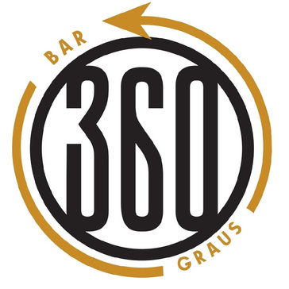
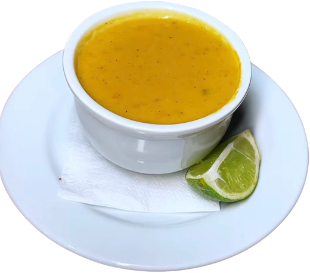
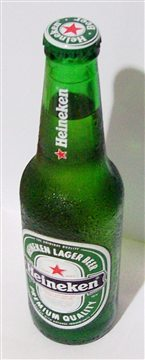
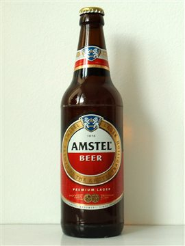
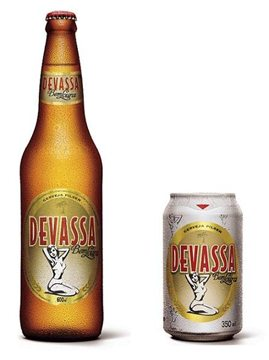

<title>Cardápio Bar 360 Graus</title>
<link href="https://fonts.googleapis.com/css2?family=Fraunces:opsz,wght@9..144,400;9..144,700;9..144,900&family=Manrope:wght@400;500;700&display=swap" rel="stylesheet">
<style>
/* fonte-reserva:inicio */
@font-face{font-family:'Fraunces Reserva Kit';src:local('Georgia');size-adjust:87.01%;ascent-override:112.63%;descent-override:29.88%;line-gap-override:0%}
@font-face{font-family:'Manrope Reserva Kit';src:local('Arial');size-adjust:100.13%;ascent-override:106.86%;descent-override:29.96%;line-gap-override:0%}
/* fonte-reserva:fim */


:root{
  color-scheme:dark;
  --noite:#0e0b08; --brasa:#1a140e; --ouro:#e2a72e; --ouro-claro:#f4cf72; --creme:#f6ead2; --fumaca:#b9a98c; --pimenta:#d4452a;
  --lateral:16px;
}
*{box-sizing:border-box;margin:0;padding:0}
html{scroll-behavior:smooth;scroll-padding-top:68px;-webkit-text-size-adjust:100%;-webkit-tap-highlight-color:rgba(226,167,46,.25)}
body{background:var(--noite);color:var(--creme);font-family:'Manrope', 'Manrope Reserva Kit',sans-serif;line-height:1.55;overflow-x:hidden}
h1,h2,h3{font-family:'Fraunces', 'Fraunces Reserva Kit',serif;font-weight:900;line-height:1.05;letter-spacing:-.02em}
a{color:inherit}
img{max-width:100%}
.wrap{max-width:880px;margin:0 auto;padding:0 var(--lateral)}

/* ===== BASE = CELULAR ===== */

/* topo */
.topo{min-height:100svh;display:grid;place-items:center;text-align:center;position:relative;padding:48px var(--lateral);background:radial-gradient(ellipse at 50% 30%,#2a1d10 0%,var(--noite) 70%)}
.selo{width:104px;height:104px;border-radius:50%;overflow:hidden;margin:0 auto 20px;box-shadow:0 0 40px rgba(226,167,46,.28)}
.selo img{width:100%;height:100%;display:block;object-fit:cover}
.topo h1{font-size:clamp(2.7rem,15vw,4.6rem)}
.topo h1 em{font-style:normal;color:var(--ouro)}
.topo p.sub{max-width:520px;margin:18px auto 28px;color:var(--fumaca);font-size:1rem}
.btn{display:flex;align-items:center;justify-content:center;width:100%;max-width:320px;min-height:52px;margin:0 auto;background:var(--ouro);color:var(--noite);font-weight:700;padding:14px 28px;border-radius:999px;text-decoration:none;letter-spacing:.02em}
.horario{margin-top:22px;font-size:.85rem;color:var(--fumaca)}

/* navegação das categorias: faixa que rola com o dedo */
.abas{position:sticky;top:env(safe-area-inset-top,0px);z-index:20;background:rgba(14,11,8,.94);backdrop-filter:blur(8px);border-bottom:1px solid #2b2218}
.abas ul{display:flex;gap:8px;overflow-x:auto;list-style:none;padding:8px var(--lateral);max-width:880px;margin:0 auto;scrollbar-width:none;scroll-snap-type:x proximity;scroll-padding-inline:var(--lateral);-webkit-overflow-scrolling:touch}
.abas ul::-webkit-scrollbar{display:none}
.abas li{scroll-snap-align:start;flex:none}
.abas a{display:inline-flex;align-items:center;min-height:44px;white-space:nowrap;text-decoration:none;padding:0 18px;border-radius:999px;border:1px solid #3a2e1e;font-size:.95rem;color:var(--creme)}
.abas a:active,.abas a:focus-visible{background:var(--ouro);color:var(--noite);border-color:var(--ouro)}

/* seções do cardápio */
.secao{padding:52px 0 12px;scroll-margin-top:60px}
.secao h2{font-size:clamp(2.2rem,11vw,3.4rem);margin-bottom:8px}
.secao .nota{color:var(--fumaca);margin-bottom:24px;max-width:560px;font-size:.97rem}
.lista{list-style:none;counter-reset:item}
.lista li{counter-increment:item;display:grid;grid-template-columns:28px minmax(0,1fr);gap:4px 12px;align-items:start;padding:18px 0;border-top:1px solid #2b2218}
.lista li:last-child{border-bottom:1px solid #2b2218}
.lista li::before{content:counter(item,decimal-leading-zero);font-family:'Fraunces', 'Fraunces Reserva Kit',serif;font-weight:700;color:var(--ouro);font-size:1rem;padding-top:3px}
.lista h3{font-size:1.3rem;font-weight:700;letter-spacing:-.01em}
.lista p{color:var(--fumaca);font-size:.95rem;margin-top:4px}
.lista .preco{grid-column:2;margin-top:6px}
.lista .corpo{display:flex;gap:12px;align-items:center;min-width:0}
.lista .corpo > div{min-width:0}
.lista .corpo img{width:68px;height:68px;border-radius:50%;object-fit:cover;flex:none;border:2px solid var(--ouro)}
.lista .corpo img.foto-cerveja{width:64px;height:92px;border-radius:12px;object-fit:contain;background:#f4f1ea;padding:3px}
.lista.cervejas h3{font-size:1.6rem;letter-spacing:-.02em}
.preco{font-weight:700;color:var(--ouro-claro);font-size:.9rem}
.tag{display:inline-block;margin-left:6px;font-family:'Manrope', 'Manrope Reserva Kit',sans-serif;font-size:.64rem;font-weight:700;letter-spacing:.08em;text-transform:uppercase;background:var(--pimenta);color:#fff;padding:3px 9px;border-radius:999px;vertical-align:middle}
.tag.tag-cerveja{background:transparent;color:var(--ouro);border:1px solid var(--ouro)}
.aviso-18{margin-top:18px;font-size:.82rem;color:var(--fumaca);max-width:620px}
.aviso-18 strong{display:inline-block;margin-right:8px;padding:2px 9px;border:1px solid var(--pimenta);border-radius:6px;color:var(--pimenta)}
.aviso-18+.aviso-18{margin-top:8px}
.aviso-18.creditos{font-size:.74rem;color:#7d6f58}
.aviso-18.creditos a{color:var(--fumaca)}

/* faixa */
.faixa{margin-top:40px;background:var(--ouro);color:var(--noite);padding:14px 0;overflow:hidden;font-family:'Fraunces', 'Fraunces Reserva Kit',serif;font-weight:900;font-size:1.25rem;white-space:nowrap}
.faixa span{margin:0 20px}

.layout{display:grid;grid-template-columns:minmax(0,1fr);max-width:880px;margin:0 auto;padding:0 var(--lateral)}
.layout .wrap{padding:0;max-width:none}
.menu{grid-column:1;grid-row:1;min-width:0}

/* rodapé */
.local{padding:60px 0 36px;text-align:center}
.local h2{font-size:clamp(2.1rem,10vw,3.2rem);margin-bottom:16px}
.local p{color:var(--fumaca);max-width:520px;margin:0 auto 10px}
.aviso{margin-top:36px;font-size:.82rem;color:#7d6f58}
footer{border-top:1px solid #2b2218;padding:20px var(--lateral);padding-bottom:max(20px,env(safe-area-inset-bottom));text-align:center;font-size:.8rem;color:#7d6f58}

/* eventos: ingressos de sexta e sábado */
.eventos{padding-bottom:28px}
.ingressos{display:grid;grid-template-columns:minmax(0,1fr);gap:20px;margin-bottom:28px}
.ingresso{--cor:var(--ouro);position:relative;background:var(--brasa);border:1px solid #3a2e1e;border-radius:20px;padding:22px 18px 18px;overflow:hidden}
.ingresso.sabado{--cor:var(--pimenta)}
.ingresso .cabeca{position:relative;padding-bottom:18px;margin-bottom:16px;border-bottom:2px dashed #3a2e1e}
.ingresso .cabeca::before,.ingresso .cabeca::after{content:"";position:absolute;bottom:-11px;width:20px;height:20px;border-radius:50%;background:var(--noite);border:1px solid #3a2e1e}
.ingresso .cabeca::before{left:-29px}
.ingresso .cabeca::after{right:-29px}
.ingresso .dia{font-family:'Fraunces', 'Fraunces Reserva Kit',serif;font-weight:900;font-size:clamp(2.6rem,13vw,3.6rem);line-height:1;letter-spacing:-.02em;color:var(--cor)}
.datas{list-style:none;display:flex;flex-wrap:wrap;gap:8px;margin-top:14px}
.datas li{padding:6px 12px;border:1px solid var(--cor);border-radius:999px;font-weight:700;font-size:.88rem;color:var(--creme)}
.detalhes{display:grid;gap:12px}
.detalhes div{display:grid;grid-template-columns:78px minmax(0,1fr);gap:12px;align-items:baseline}
.detalhes dt{font-size:.7rem;font-weight:700;letter-spacing:.1em;text-transform:uppercase;color:var(--fumaca)}
.detalhes dd{font-size:.95rem;color:var(--creme)}
.btn-eventos{margin-top:4px}
@media (min-width:700px){.btn-eventos{max-width:none;margin:4px 0 0;white-space:nowrap}}


/* cardápio real: subtítulos, linhas com pontilhado, espetinhos */
.menu h3.sub{font-family:'Manrope', 'Manrope Reserva Kit',sans-serif;font-size:.8rem;font-weight:700;letter-spacing:.14em;text-transform:uppercase;color:var(--ouro);margin:30px 0 6px}
.linhas{list-style:none}
.linhas li{display:flex;align-items:baseline;gap:8px;padding:11px 0;border-bottom:1px solid #2b2218}
.linhas li.foto{align-items:center}
.linhas .n{font-size:1.02rem;color:var(--creme);min-width:0}
.linhas .n.com-img{display:flex;align-items:center;gap:12px}
.linhas img.mini{width:56px;height:56px;border-radius:50%;object-fit:cover;flex:none;border:2px solid var(--ouro)}
.linhas img.mini-cerveja{width:44px;height:64px;border-radius:10px;object-fit:contain;background:#f4f1ea;padding:3px;border:2px solid var(--ouro);flex:none}
.linhas .n small{display:block;margin-top:3px;font-size:.85rem;color:var(--fumaca)}
.linhas .pt{flex:1;min-width:12px;border-bottom:1px dotted #5a4a30;transform:translateY(-4px)}
.linhas .preco{white-space:nowrap}
.sabores{margin:10px 0 4px;font-size:.88rem;color:var(--fumaca)}
.espeto{display:grid;gap:18px}
.espeto-foto img{display:block;width:100%;height:220px;object-fit:cover;border-radius:18px;border:2px solid var(--ouro)}
.preco-grande{font-size:1rem;color:var(--fumaca)}
.preco-grande strong{font-family:'Fraunces', 'Fraunces Reserva Kit',serif;font-weight:900;font-size:2.4rem;color:var(--ouro-claro);letter-spacing:-.02em}
.espeto .obs{margin:2px 0 14px;color:var(--fumaca);font-size:.92rem}
.chips{list-style:none;display:flex;flex-wrap:wrap;gap:8px}
.chips li{padding:8px 14px;border:1px solid #3a2e1e;border-radius:999px;font-size:.92rem;color:var(--creme);background:var(--brasa)}


/* ===== TABLET (a partir de 700px) ===== */
@media (min-width:700px){
  .ingressos{grid-template-columns:repeat(2,minmax(0,1fr));gap:24px}
  .ingresso{padding:26px 24px 22px}
  .ingresso .cabeca::before{left:-35px}
  .ingresso .cabeca::after{right:-35px}
  .detalhes div{grid-template-columns:92px minmax(0,1fr)}
}
@media (min-width:700px){
  :root{--lateral:24px}
  .espeto{grid-template-columns:220px minmax(0,1fr);gap:28px;align-items:start}
  .espeto-foto img{height:320px}
  html{scroll-padding-top:72px}
  .selo{width:124px;height:124px;margin-bottom:24px}
  .topo h1{font-size:clamp(4rem,9vw,6.4rem)}
  .topo p.sub{font-size:1.1rem;margin:22px auto 32px}
  .btn{display:inline-flex;width:auto;padding:16px 34px}
  .abas ul{padding:10px var(--lateral)}
  .secao{padding:72px 0 24px}
  .secao h2{font-size:clamp(2.8rem,6vw,4rem)}
  .secao .nota{margin-bottom:30px;font-size:1rem}
  .lista li{grid-template-columns:48px minmax(0,1fr) auto;gap:16px;align-items:baseline;padding:22px 0}
  .lista li::before{font-size:1.1rem;padding-top:0}
  .lista li.com-foto{align-items:center}
  .lista .preco{grid-column:auto;margin-top:0;white-space:nowrap;font-size:.95rem}
  .lista h3{font-size:1.45rem}
  .lista .corpo{gap:18px}
  .lista .corpo img{width:92px;height:92px}
  .lista .corpo img.foto-cerveja{width:96px;height:132px;border-radius:14px;padding:4px}
  .lista.cervejas h3{font-size:2.1rem}
  .tag{font-size:.68rem;margin-left:8px}
  .faixa{margin-top:64px;padding:20px 0;font-size:1.6rem}
  .faixa span{margin:0 28px}
  .local{padding:84px 0 52px}
}

/* ===== DESKTOP (a partir de 961px): planta fixa ao lado do cardápio ===== */
@media (min-width:961px){
  .secao{padding:96px 0 40px}
  .secao .nota{margin-bottom:36px}
  .abas a{min-height:40px;padding:0 14px}
  .abas ul{gap:6px}
  .abas a:hover{background:var(--ouro);color:var(--noite);border-color:var(--ouro)}
  .topo{padding:80px 20px}
  .topo h1{font-size:clamp(5rem,9vw,7.5rem)}
  .local{padding:96px 0 60px}
}
</style>
<header class="topo" data-mk="hero" data-mk-fundo>
  <div>
    <div class="selo" data-mk-pulso></div>
    <h1 data-mk-split>Bar <em>360</em> Graus</h1>
    <p class="sub">Petiscos, drinks e hambúrguer na Praça de Eventos Ana do Forró. Desde 2013 na Barra dos Coqueiros, sempre com a mesa cheia.</p>
    <a class="btn" href="#caldos" data-mk-magnet>Ver o cardápio</a>
    <p class="horario">Rua Wilson Simonal, 40<br>Praça de Eventos · Prisco Viana<br>Barra dos Coqueiros-SE</p>
  </div>
</header>

<nav class="abas" aria-label="Categorias do cardápio">
  <ul>
    <li><a href="#caldos">Caldos</a></li>
    <li><a href="#espetinhos">Espetinhos</a></li>
    <li><a href="#petiscos">Petiscos</a></li>
    <li><a href="#hamburguer">Hambúrguer</a></li>
    <li><a href="#cervejas">Cervejas</a></li>
    <li><a href="#drinks">Drinks</a></li>
    <li><a href="#semalcool">Sem álcool</a></li>
    <li><a href="#eventos">Eventos</a></li>
  </ul>
</nav>

<main>
  <div class="faixa" data-mk-marquee aria-hidden="true">
    <span>Petiscos</span><span>★</span><span>Drinks</span><span>★</span><span>Hambúrguer</span><span>★</span><span>Forró</span><span>★</span><span>Desde 2013</span><span>★</span>
  </div>
  <div class="layout">  <div class="menu">
  <section class="secao" id="caldos">
    <div class="wrap">
      <h2 data-mk-split>Sopas e caldinhos</h2>
      <p class="nota">Servido quente, na cumbuca, com aquela colher que pede repetição.</p>
      <h3 class="sub">Sopa, todas as segundas</h3>
      <ul class="linhas">
        <li><span class="n">Sopa de carne (500 ml)</span><span class="pt" aria-hidden="true"></span><span class="preco">R$&nbsp;18,90</span></li>
        <li><span class="n">Sopa de feijão (500 ml)</span><span class="pt" aria-hidden="true"></span><span class="preco">R$&nbsp;18,90</span></li>
      </ul>
      <h3 class="sub">Caldinhos (250 ml)</h3>
      <ul class="linhas">
        <li><span class="n">Mariscada</span><span class="pt" aria-hidden="true"></span><span class="preco">R$&nbsp;23,90</span></li>
        <li><span class="n">Ostra</span><span class="pt" aria-hidden="true"></span><span class="preco">R$&nbsp;20,90</span></li>
        <li><span class="n">Sururu</span><span class="pt" aria-hidden="true"></span><span class="preco">R$&nbsp;17,90</span></li>
        <li><span class="n">Camarão</span><span class="pt" aria-hidden="true"></span><span class="preco">R$&nbsp;17,90</span></li>
        <li class="foto"><span class="n com-img"><span class="t">Caldo de feijão<small>Servido quentinho na cumbuca.</small></span></span><span class="pt" aria-hidden="true"></span><span class="preco">R$&nbsp;15,90</span></li>
        <li><span class="n">Caldo verde</span><span class="pt" aria-hidden="true"></span><span class="preco">R$&nbsp;13,90</span></li>
      </ul>
    </div>
  </section>

  <section class="secao" id="espetinhos">
    <div class="wrap">
      <h2 data-mk-split>Espetinho 360 Graus</h2>
      <p class="nota">Espetinho na brasa. Todos pelo mesmo preço, escolha o seu.</p>
      <div class="espeto">
        <figure class="espeto-foto"></figure>
        <div class="espeto-info">
          <p class="preco-grande"><strong>R$&nbsp;18,90</strong> cada</p>
          <p class="obs">Acompanha farofa e vinagrete.</p>
          <ul class="chips" data-mk="grupo">
            <li>Pão de alho</li>
            <li>Queijo</li>
            <li>Boi</li>
            <li>Frango</li>
            <li>Coração</li>
            <li>Carneiro</li>
            <li>Cupim</li>
            <li>Kafta / queijo apimentada</li>
            <li>Choripan cremoso</li>
            <li>Charque</li>
            <li>Coxinha</li>
            <li>Asinha</li>
            <li>Linguiça</li>
            <li>Medalhão de boi</li>
            <li>Medalhão de frango</li>
          </ul>
        </div>
      </div>
    </div>
  </section>

  <section class="secao" id="petiscos" data-mk-palco>
    <div class="wrap">
      <h2 data-mk-split>Petiscos</h2>
      <p class="nota">Petiscos feitos para compartilhar, brindar e abrir o apetite. Escolha o seu e aproveite!</p>
      <h3 class="sub">Pastéis</h3>
      <ul class="linhas">
        <li><span class="n">Queijo</span><span class="pt" aria-hidden="true"></span><span class="preco">R$&nbsp;9,90</span></li>
        <li><span class="n">Misto / pizza</span><span class="pt" aria-hidden="true"></span><span class="preco">R$&nbsp;10,90</span></li>
        <li><span class="n">3 queijos</span><span class="pt" aria-hidden="true"></span><span class="preco">R$&nbsp;12,90</span></li>
        <li><span class="n">Frango</span><span class="pt" aria-hidden="true"></span><span class="preco">R$&nbsp;13,90</span></li>
        <li><span class="n">Carne</span><span class="pt" aria-hidden="true"></span><span class="preco">R$&nbsp;14,90</span></li>
        <li><span class="n">Charque</span><span class="pt" aria-hidden="true"></span><span class="preco">R$&nbsp;14,90</span></li>
        <li><span class="n">Camarão</span><span class="pt" aria-hidden="true"></span><span class="preco">R$&nbsp;16,90</span></li>
        <li><span class="n">Caranguejo</span><span class="pt" aria-hidden="true"></span><span class="preco">R$&nbsp;18,90</span></li>
        <li><span class="n">Aratu</span><span class="pt" aria-hidden="true"></span><span class="preco">R$&nbsp;18,90</span></li>
        <li><span class="n">Pastelzinho 360 (4 un)<small>Bacon, filezinho de camarão e requeijão cremoso.</small></span><span class="pt" aria-hidden="true"></span><span class="preco">R$&nbsp;24,90</span></li>
      </ul>
      <h3 class="sub">Porções e pratos</h3>
      <ul class="linhas">
        <li><span class="n">Batata frita</span><span class="pt" aria-hidden="true"></span><span class="preco">R$&nbsp;19,90</span></li>
        <li><span class="n">Batata c/ cheddar e bacon</span><span class="pt" aria-hidden="true"></span><span class="preco">R$&nbsp;29,90</span></li>
        <li><span class="n">Aipim frito</span><span class="pt" aria-hidden="true"></span><span class="preco">R$&nbsp;17,90</span></li>
        <li><span class="n">Tripinha crocante</span><span class="pt" aria-hidden="true"></span><span class="preco">R$&nbsp;32,90</span></li>
        <li><span class="n">Codorna assada (un)</span><span class="pt" aria-hidden="true"></span><span class="preco">R$&nbsp;14,90</span></li>
        <li><span class="n">Carne do sol c/ fritas ou aipim</span><span class="pt" aria-hidden="true"></span><span class="preco">R$&nbsp;62,90</span></li>
        <li><span class="n">Carne do sol</span><span class="pt" aria-hidden="true"></span><span class="preco">R$&nbsp;42,90</span></li>
        <li><span class="n">Filé com fritas</span><span class="pt" aria-hidden="true"></span><span class="preco">R$&nbsp;64,90</span></li>
        <li><span class="n">Frango à passarinha crocante</span><span class="pt" aria-hidden="true"></span><span class="preco">R$&nbsp;38,90</span></li>
        <li><span class="n">Asinha de frango</span><span class="pt" aria-hidden="true"></span><span class="preco">R$&nbsp;45,90</span></li>
        <li><span class="n">Camarão alho e óleo</span><span class="pt" aria-hidden="true"></span><span class="preco">R$&nbsp;61,90</span></li>
        <li><span class="n">Camarão crocante</span><span class="pt" aria-hidden="true"></span><span class="preco">R$&nbsp;65,90</span></li>
        <li><span class="n">Isca de peixe</span><span class="pt" aria-hidden="true"></span><span class="preco">R$&nbsp;48,90</span></li>
        <li class="foto"><span class="n com-img"><span class="t">Isca de frango<small>Iscas empanadas e crocantes, com dois molhos e limão.</small></span></span><span class="pt" aria-hidden="true"></span><span class="preco">R$&nbsp;42,90</span></li>
        <li><span class="n">Pilombeta</span><span class="pt" aria-hidden="true"></span><span class="preco">R$&nbsp;40,90</span></li>
        <li><span class="n">Prato de frios</span><span class="pt" aria-hidden="true"></span><span class="preco">R$&nbsp;34,90</span></li>
      </ul>
    </div>
  </section>

  <section class="secao" id="hamburguer">
    <div class="wrap">
      <h2 data-mk-split>Hambúrguer</h2>
      <p class="nota">Lanches feitos na chapa. Os “Eggs” levam ovo.</p>
      <ul class="lista" data-mk="grupo">
        <li><div><h3>Misto</h3><p>Pão, mussarela e presunto.</p></div><span class="preco">R$&nbsp;10,90</span></li>
        <li><div><h3>Hambúrguer</h3><p>Pão, hambúrguer, salada e milho.</p></div><span class="preco">R$&nbsp;12,90</span></li>
        <li><div><h3>Americano</h3><p>Pão, ovo, presunto, mussarela, salada e milho.</p></div><span class="preco">R$&nbsp;13,90</span></li>
        <li><div><h3>X-Burguer</h3><p>Pão, hambúrguer, presunto, mussarela, salada e milho.</p></div><span class="preco">R$&nbsp;14,90</span></li>
        <li><div><h3>Egg Burguer</h3><p>Pão, hambúrguer, ovo, mussarela, presunto, salada e milho.</p></div><span class="preco">R$&nbsp;16,90</span></li>
        <li><div><h3>X-Frango</h3><p>Pão, frango, mussarela, presunto, salada e milho.</p></div><span class="preco">R$&nbsp;21,90</span></li>
        <li><div><h3>Eggs Frango</h3><p>Pão, ovo, frango, mussarela, presunto, salada e milho.</p></div><span class="preco">R$&nbsp;23,90</span></li>
        <li><div><h3>X-Calabresa</h3><p>Pão, calabresa, mussarela, presunto, salada e milho.</p></div><span class="preco">R$&nbsp;23,90</span></li>
        <li><div><h3>Eggs Calabresa</h3><p>Pão, ovo, calabresa, mussarela, presunto, salada e milho.</p></div><span class="preco">R$&nbsp;25,90</span></li>
        <li><div><h3>X-Bacon</h3><p>Pão, carne de hambúrguer, bacon, mussarela, presunto, salada e milho.</p></div><span class="preco">R$&nbsp;24,90</span></li>
        <li><div><h3>Eggs Bacon</h3><p>Pão, ovo, carne de hambúrguer, bacon, mussarela, presunto, salada e milho.</p></div><span class="preco">R$&nbsp;26,90</span></li>
        <li><div><h3>X-Coração</h3><p>Pão, coração, mussarela, presunto, salada e milho.</p></div><span class="preco">R$&nbsp;24,90</span></li>
        <li><div><h3>Eggs Coração</h3><p>Pão, ovo, coração, mussarela, presunto, salada e milho.</p></div><span class="preco">R$&nbsp;26,90</span></li>
        <li><div><h3>X-Filé acebolado</h3><p>Pão, filé, cebola, mussarela, presunto, salada e milho.</p></div><span class="preco">R$&nbsp;25,90</span></li>
        <li><div><h3>Eggs Filé acebolado</h3><p>Pão, ovo, filé, cebola, mussarela, presunto, salada e milho.</p></div><span class="preco">R$&nbsp;27,90</span></li>
        <li><div><h3>Hambúrguer 360 <span class="tag">da casa</span></h3><p>Pão, hambúrguer, mussarela, presunto, ovo, bacon, frango, coração, calabresa, filé, salada e milho.</p></div><span class="preco">R$&nbsp;34,90</span></li>
      </ul>
    </div>
  </section>

  <section class="secao" id="cervejas" data-mk-palco>
    <div class="wrap">
      <h2 data-mk-split>Cervejas</h2>
      <p class="nota">Só cerveja alcoólica nesta lista, separada por tamanho. Bem gelada, do jeito que a praça pede.</p>
      <h3 class="sub">Cerveja 600 ml</h3>
      <ul class="linhas">
        <li class="foto"><span class="n com-img"><span class="t">Heineken</span></span><span class="pt" aria-hidden="true"></span><span class="preco">R$&nbsp;18,90</span></li>
        <li class="foto"><span class="n com-img"><span class="t">Amstel</span></span><span class="pt" aria-hidden="true"></span><span class="preco">R$&nbsp;12,90</span></li>
        <li class="foto"><span class="n com-img"><span class="t">Devassa</span></span><span class="pt" aria-hidden="true"></span><span class="preco">R$&nbsp;11,90</span></li>
        <li><span class="n">Stella</span><span class="pt" aria-hidden="true"></span><span class="preco">R$&nbsp;15,90</span></li>
        <li><span class="n">Budweiser</span><span class="pt" aria-hidden="true"></span><span class="preco">R$&nbsp;13,90</span></li>
        <li><span class="n">Original</span><span class="pt" aria-hidden="true"></span><span class="preco">R$&nbsp;12,90</span></li>
        <li><span class="n">Brahma</span><span class="pt" aria-hidden="true"></span><span class="preco">R$&nbsp;12,90</span></li>
      </ul>
      <h3 class="sub">Long neck</h3>
      <ul class="linhas">
        <li><span class="n">Heineken 350 ml</span><span class="pt" aria-hidden="true"></span><span class="preco">R$&nbsp;12,90</span></li>
        <li><span class="n">Heineken Zero 350 ml</span><span class="pt" aria-hidden="true"></span><span class="preco">R$&nbsp;12,90</span></li>
        <li><span class="n">Amstel Ultra 275 ml</span><span class="pt" aria-hidden="true"></span><span class="preco">R$&nbsp;10,90</span></li>
        <li><span class="n">Stella Artois 330 ml</span><span class="pt" aria-hidden="true"></span><span class="preco">R$&nbsp;11,90</span></li>
        <li><span class="n">Smirnoff Ice</span><span class="pt" aria-hidden="true"></span><span class="preco">R$&nbsp;12,90</span></li>
      </ul>
      <h3 class="sub">Lata</h3>
      <ul class="linhas">
        <li><span class="n">Brahma Zero</span><span class="pt" aria-hidden="true"></span><span class="preco">R$&nbsp;7,90</span></li>
        <li><span class="n">Com álcool</span><span class="pt" aria-hidden="true"></span><span class="preco">R$&nbsp;5,90</span></li>
      </ul>
      <p class="aviso-18"><strong>18+</strong> Venda e consumo de bebida alcoólica proibidos para menores de 18 anos. Beba com moderação e, se beber, não dirija.</p>
      <p class="aviso-18 creditos">Créditos das fotos de cerveja, via Wikimedia Commons: Heineken, Hawyih (domínio público); Amstel, LeeKeoma (domínio público); Devassa, BemLoira BemDevassa, <a href="https://commons.wikimedia.org/wiki/File:Devassa_Bem_Loura_(4643305671).jpg" target="_blank" rel="noopener">licença CC BY 2.0</a>. Fotos ilustrativas.</p>
    </div>
  </section>

  <section class="secao" id="drinks">
    <div class="wrap">
      <h2 data-mk-split>Drinks</h2>
      <p class="nota">Gelado, bem servido, com fruta de verdade.</p>
      <h3 class="sub">Drinks</h3>
      <ul class="linhas">
        <li><span class="n">Gin 360 Graus</span><span class="pt" aria-hidden="true"></span><span class="preco">R$&nbsp;23,90</span></li>
        <li><span class="n">Coquetel de frutas</span><span class="pt" aria-hidden="true"></span><span class="preco">R$&nbsp;22,90</span></li>
        <li><span class="n">Aperol Spritz</span><span class="pt" aria-hidden="true"></span><span class="preco">R$&nbsp;21,90</span></li>
      </ul>
      <h3 class="sub">Caipis 360 Graus</h3>
      <p class="sabores">Sabores: morango, kiwi e limão.</p>
      <ul class="linhas">
        <li><span class="n">Vodka nacional</span><span class="pt" aria-hidden="true"></span><span class="preco">R$&nbsp;16,90</span></li>
        <li><span class="n">Vodka Absolut</span><span class="pt" aria-hidden="true"></span><span class="preco">R$&nbsp;22,90</span></li>
        <li><span class="n">Caipirinha (Pitú ou 51)</span><span class="pt" aria-hidden="true"></span><span class="preco">R$&nbsp;14,90</span></li>
      </ul>
      <h3 class="sub">Destilados (dose)</h3>
      <ul class="linhas">
        <li><span class="n">Dreher</span><span class="pt" aria-hidden="true"></span><span class="preco">R$&nbsp;5,90</span></li>
        <li><span class="n">Domecq</span><span class="pt" aria-hidden="true"></span><span class="preco">R$&nbsp;8,90</span></li>
        <li><span class="n">Alcatrão</span><span class="pt" aria-hidden="true"></span><span class="preco">R$&nbsp;8,90</span></li>
        <li><span class="n">Campari</span><span class="pt" aria-hidden="true"></span><span class="preco">R$&nbsp;8,90</span></li>
        <li><span class="n">Ypióca</span><span class="pt" aria-hidden="true"></span><span class="preco">R$&nbsp;5,90</span></li>
        <li><span class="n">Seleta</span><span class="pt" aria-hidden="true"></span><span class="preco">R$&nbsp;7,90</span></li>
        <li><span class="n">Cabaré</span><span class="pt" aria-hidden="true"></span><span class="preco">R$&nbsp;6,90</span></li>
        <li><span class="n">Vodka Slova</span><span class="pt" aria-hidden="true"></span><span class="preco">R$&nbsp;5,90</span></li>
        <li><span class="n">Vodka Smirnoff</span><span class="pt" aria-hidden="true"></span><span class="preco">R$&nbsp;8,90</span></li>
        <li><span class="n">Vodka Absolut</span><span class="pt" aria-hidden="true"></span><span class="preco">R$&nbsp;12,90</span></li>
      </ul>
      <h3 class="sub">Whisky (dose)</h3>
      <ul class="linhas">
        <li><span class="n">Cavalo Branco</span><span class="pt" aria-hidden="true"></span><span class="preco">R$&nbsp;12,90</span></li>
        <li><span class="n">Passaport</span><span class="pt" aria-hidden="true"></span><span class="preco">R$&nbsp;10,90</span></li>
        <li><span class="n">Johnnie Walker</span><span class="pt" aria-hidden="true"></span><span class="preco">R$&nbsp;13,90</span></li>
        <li><span class="n">Black &amp; White</span><span class="pt" aria-hidden="true"></span><span class="preco">R$&nbsp;10,90</span></li>
      </ul>
      <h3 class="sub">Vinhos</h3>
      <p class="nota">Consulte o garçom para ver a carta de vinhos.</p>
      <p class="aviso-18"><strong>18+</strong> Venda e consumo de bebida alcoólica proibidos para menores de 18 anos. Beba com moderação e, se beber, não dirija.</p>
    </div>
  </section>

  <section class="secao" id="semalcool">
    <div class="wrap">
      <h2 data-mk-split>Sem álcool</h2>
      <p class="nota">Pra quem está dirigindo ou só com sede.</p>
      <h3 class="sub">Não alcoólicas</h3>
      <ul class="linhas">
        <li><span class="n">Água</span><span class="pt" aria-hidden="true"></span><span class="preco">R$&nbsp;3,90</span></li>
        <li><span class="n">Água com gás</span><span class="pt" aria-hidden="true"></span><span class="preco">R$&nbsp;4,90</span></li>
        <li><span class="n">Água tônica / Schweppes</span><span class="pt" aria-hidden="true"></span><span class="preco">R$&nbsp;6,90</span></li>
        <li><span class="n">H2O limão</span><span class="pt" aria-hidden="true"></span><span class="preco">R$&nbsp;8,90</span></li>
        <li><span class="n">Energético</span><span class="pt" aria-hidden="true"></span><span class="preco">R$&nbsp;15,90</span></li>
        <li><span class="n">Refrigerante 1 litro</span><span class="pt" aria-hidden="true"></span><span class="preco">R$&nbsp;10,90</span></li>
        <li><span class="n">Refrigerante lata</span><span class="pt" aria-hidden="true"></span><span class="preco">R$&nbsp;6,90</span></li>
      </ul>
      <p class="sabores">Sabores de refrigerante: Coca-Cola, Coca Zero, Guaraná Antártica, Fanta Laranja, Guaraná Fys e Sprite.</p>
      <h3 class="sub">Sucos</h3>
      <ul class="linhas">
        <li><span class="n">Laranja com morango (500 ml)</span><span class="pt" aria-hidden="true"></span><span class="preco">R$&nbsp;12,90</span></li>
        <li><span class="n">Copo (400 ml)</span><span class="pt" aria-hidden="true"></span><span class="preco">R$&nbsp;7,90</span></li>
        <li><span class="n">Jarra (800 ml)</span><span class="pt" aria-hidden="true"></span><span class="preco">R$&nbsp;15,90</span></li>
        <li><span class="n">Com leite (adicional)</span><span class="pt" aria-hidden="true"></span><span class="preco">R$&nbsp;1,90</span></li>
      </ul>
      <p class="sabores">Sabores: laranja, limão, morango, mangaba, maracujá, ameixa, acerola e goiaba.</p>
    </div>
  </section>
  </div>
  </div>

  <section class="secao eventos" id="eventos" data-mk-palco>
    <div class="wrap">
      <h2 data-mk-split>Eventos</h2>
      <p class="nota">Sexta e sábado a praça acende. Música ao vivo, mesa cheia e cerveja no ponto. Veja as próximas datas e chegue cedo.</p>
      <div class="ingressos" data-mk="grupo">
        <article class="ingresso sexta" data-dia-semana="5">
          <header class="cabeca">
            <p class="dia">Sexta</p>
            <ul class="datas" aria-label="Próximas sextas-feiras"><li>Toda sexta-feira</li></ul>
          </header>
          <dl class="detalhes">
            <div><dt>Atração</dt><dd>Divulgada nos Stories “Shows” do @bar360graus</dd></div>
            <div><dt>Horário</dt><dd>Confirmado no Instagram do bar</dd></div>
            <div><dt>Local</dt><dd>Praça de Eventos Ana do Forró, Rua Wilson Simonal, 40, Prisco Viana, Barra dos Coqueiros-SE</dd></div>
            <div><dt>Entrada</dt><dd>Consulte no balcão</dd></div>
            <div><dt>Mesas</dt><dd>Chegue cedo pra garantir o seu lugar</dd></div>
          </dl>
        </article>
        <article class="ingresso sabado" data-dia-semana="6">
          <header class="cabeca">
            <p class="dia">Sábado</p>
            <ul class="datas" aria-label="Próximos sábados"><li>Todo sábado</li></ul>
          </header>
          <dl class="detalhes">
            <div><dt>Atração</dt><dd>Divulgada nos Stories “Shows” do @bar360graus</dd></div>
            <div><dt>Horário</dt><dd>Confirmado no Instagram do bar</dd></div>
            <div><dt>Local</dt><dd>Praça de Eventos Ana do Forró, Rua Wilson Simonal, 40, Prisco Viana, Barra dos Coqueiros-SE</dd></div>
            <div><dt>Entrada</dt><dd>Consulte no balcão</dd></div>
            <div><dt>Mesas</dt><dd>Chegue cedo pra garantir o seu lugar</dd></div>
          </dl>
        </article>
      </div>
      <a class="btn btn-eventos" href="https://www.instagram.com/bar360graus/" target="_blank" rel="noopener" data-mk-magnet>Ver a programação no Instagram</a>
      <p class="aviso-18">A atração e o horário de cada noite mudam. A programação oficial é a que o bar divulga no Instagram.</p>
    </div>
  </section>
  <script>
  (function () {
    try {
      var cartoes = document.querySelectorAll('[data-dia-semana]');
      var hoje = new Date(); hoje.setHours(0, 0, 0, 0);
      var dois = function (n) { return ('0' + n).slice(-2); };
      cartoes.forEach(function (c) {
        var alvo = +c.getAttribute('data-dia-semana');
        var lista = c.querySelector('.datas');
        if (!lista) return;
        var falta = (alvo - hoje.getDay() + 7) % 7;
        var html = '';
        for (var i = 0; i < 3; i++) {
          var x = new Date(hoje); x.setDate(hoje.getDate() + falta + 7 * i);
          var dm = dois(x.getDate()) + '/' + dois(x.getMonth() + 1);
          var iso = x.getFullYear() + '-' + dois(x.getMonth() + 1) + '-' + dois(x.getDate());
          html += '<li><time datetime="' + iso + '">' + (i === 0 && falta === 0 ? 'hoje · ' : '') + dm + '</time></li>';
        }
        lista.innerHTML = html;
      });
    } catch (e) {}
  })();
  </script>

  <section class="local" id="contato" data-mk-fundo>
    <div class="wrap">
      <h2 data-mk-split>Vem pra praça</h2>
      <p>Praça de Eventos Ana do Forró, Rua Wilson Simonal, 40, Prisco Viana, Barra dos Coqueiros-SE.</p>
      <p>Novidades, shows e horários no Instagram: <a href="https://www.instagram.com/bar360graus/" target="_blank" rel="noopener"><strong>@bar360graus</strong></a>.</p>
      <p class="aviso">Valores conforme o cardápio do Bar 360 Graus. Sujeitos a alteração: confirme com o garçom.</p>
    </div>
  </section>
</main>

<footer>Bar 360 Graus · cardápio digital</footer>

<script src="https://cdn.jsdelivr.net/npm/gsap@3.12.5/dist/gsap.min.js"></script>
<script src="https://cdn.jsdelivr.net/npm/gsap@3.12.5/dist/ScrollTrigger.min.js"></script>
<script data-motion-kit data-versao="b7713e43b0">
/* JARVIS Motion Kit v3 (06/10/2026) — animação nível agência + MOTION GRAPHICS + 3D EM TEMPO REAL (Three.js) + CAMADA AFTER EFFECTS.
 * Requer GSAP 3 + ScrollTrigger por CDN, carregados ANTES deste script:
 *   https://cdn.jsdelivr.net/npm/gsap@3.12.5/dist/gsap.min.js
 *   https://cdn.jsdelivr.net/npm/gsap@3.12.5/dist/ScrollTrigger.min.js
 * O próprio kit baixa por CDN, só quando a página usa: Lenis (rolagem suave), Three.js (data-mk-3d), lottie-web (data-mk-lottie).
 * Uso: cole este arquivo inteiro num <script> no fim do <body> e chame MotionKit.init({ clima: 'luxo' }).
 * Garantias:
 *  · o estado FINAL de tudo é o CSS normal → sem JavaScript (ou se o CDN falhar) o conteúdo aparece inteiro;
 *  · anima SEMPRE, mesmo com "menos movimento" ligado no sistema (decisão do dono, 06/10). Para respeitar essa preferência
 *    num site específico: MotionKit.init({ clima, respeitarMenosMovimento: true });
 *  · celular/toque: sem cursor próprio, ímã nem inclinação; menos partículas; 3D mais leve; galeria horizontal vira lista;
 *  · aparelho sem WebGL: o 3D não aparece e o resto do kit continua; fundos e cenas pausam fora da tela.
 *
 * ENTRADAS E ROLAGEM
 *   data-mk="hero"         filhos entram em sequência (desfoque + subida); imagem/ilustração do hero dá zoom-out
 *   data-mk-split          título palavra a palavra, girando em 3D e saindo do desfoque (texto acessível via aria-label)
 *   data-mk="reveal"       entra ao rolar; data-mk-dir="up|left|right|scale"
 *   data-mk="grupo"        filhos em cascata 3D; com mouse, cada filho inclina seguindo o cursor
 *   data-mk-tilt           inclinação 3D seguindo o mouse
 *   data-mk-count="1250"   número sobe até o valor (HTML já com o valor final); data-mk-prefixo / data-mk-sufixo
 *   data-mk-parallax="0.15" camada mais lenta que a rolagem
 *   data-mk-magnet         botão com ímã + brilho no hover
 *   data-mk-draw           <svg> cujos traços se desenham
 *   data-mk-mask           cortina de baixo para cima, com zoom e paralaxe interna na imagem
 *   data-mk-marquee        faixa que corre sem parar (acelera ao rolar)
 *   data-mk-scrub          título grande que desliza de lado com a rolagem
 *   data-mk-horizontal     galeria: o 1º filho (trilho) corre na horizontal com a seção presa (computador)
 *   data-mk-pin + data-mk-step   seção presa e passos avançando com a rolagem (computador)
 *   data-mk-palco          a SEÇÃO entra inclinada em 3D como uma placa e afunda ao sair (não use junto com pin/horizontal)
 * MOTION GRAPHICS (rodam o tempo todo)
 *   data-mk-fundo="particulas|constelacao|ondas|aurora|grade|bolhas|bokeh"   fundo animado atrás da seção (sem valor: o clima escolhe)
 *   data-mk-blob · data-mk-flutua · data-mk-orbita · data-mk-pulso · data-mk-icone
 *   data-mk-rotativo="cuidado|carinho|confiança"   palavra que troca sozinha no título (o texto do HTML é a 1ª)
 *   data-mk-scramble (texto se decodifica) · data-mk-digita (texto digitado com cursor)
 *   data-mk-cor="#hex"     cor das formas/cena daquele elemento (padrão: cor do botão principal)
 * 3D EM TEMPO REAL (Three.js)
 *   data-mk-3d="simbolo|escultura|particulas|aneis"   cena 3D no elemento (sem valor: o clima escolhe). O 3D NUNCA cobre texto:
 *       ele mede o texto da seção, ocupa só o espaço livre (esquerda/direita; em tela estreita, a faixa livre acima/abaixo) e, se não
 *       houver espaço, some. 'orbe' (esfera líquida) saiu dos padrões: em fundo claro parecia mancha. Só use se pedirem.
 *       escultura = nó de metal polido · particulas = 12 mil pontos que viram esfera → nó → onda → galáxia com a rolagem
 *       orbe = esfera líquida que ferve (shader) e agita com o mouse · aneis = giroscópio de metal com núcleo aceso
 *   data-mk-3d-lado="direita|esquerda|centro"   onde o objeto fica (padrão: direita; no celular vai para o centro, atrás do texto)
 *   <body data-mk-3d="particulas"> → a cena fica PRESA À TELA e atravessa o site inteiro de um lado ao outro com a rolagem
 *       (aparece pelas seções sem cor de fundo)
 * CAMADA AFTER EFFECTS
 *   aberturas (opção intro): 'cortina' | 'matchcut' (Text Match Cut) | 'particulas' (logo de partículas que explode) — o clima escolhe
 *   data-mk-cinetico       tipografia cinética: letras caem, amassam no chão e voltam (squash & stretch)
 *   data-mk-destaque       marca-texto passando por trás das palavras
 *   data-mk-circula / data-mk-sublinha   rabisco à mão desenhado em volta/embaixo da palavra (trim path)
 *   data-mk-explosao       explosão de traços + anel ao aparecer e no hover (shape burst)
 *   data-mk-glitch         rajadas de glitch com separação RGB
 *   data-mk-transicao      duas lâminas atravessam a seção na diagonal quando ela chega (wipe duplo)
 *   data-mk-brilho         luz varrendo o elemento de tempos em tempos (light sweep)
 *   data-mk-turbulencia    o bloco "derrete" ao entrar e ondula no hover (Turbulent Displace)
 *   data-mk-wiggle="4"     a expressão wiggle(): tremida orgânica contínua
 *   data-mk-lottie="#id"   animação feita NO After Effects (JSON do Bodymovin num <script type="application/json" id>)
 *       ou uma URL; data-mk-lottie-rolagem → a rolagem controla o tempo da animação
 * Opções do init: { clima, intro, cursor, progresso, suave (rolagem Lenis), respeitarMenosMovimento } — todas ligadas por padrão.
 */
(function () {
  var CLIMAS = {
    calmo:        { dur: 1.2, ease: 'power3.out',    dist: 50,  blur: 8,  rot: 18, stagger: 0.10, scrub: 1.2, escala: 0.94, fundo: 'ondas',       vel: 0.6, cena3d: 'simbolo', intro: 'cortina' },
    luxo:         { dur: 1.6, ease: 'expo.out',      dist: 70,  blur: 12, rot: 25, stagger: 0.12, scrub: 1.6, escala: 0.9,  fundo: 'aurora',      vel: 0.5, cena3d: 'escultura', intro: 'cortina' },
    explosivo:    { dur: 0.9, ease: 'back.out(1.6)', dist: 110, blur: 6,  rot: 35, stagger: 0.06, scrub: 0.6, escala: 0.75, fundo: 'grade',       vel: 1.6, cena3d: 'simbolo', intro: 'cortina' },
    tecnologico:  { dur: 1.0, ease: 'power4.out',    dist: 60,  blur: 10, rot: 30, stagger: 0.05, scrub: 0.8, escala: 0.88, fundo: 'constelacao', vel: 1.0, cena3d: 'particulas', intro: 'particulas' },
    aconchegante: { dur: 1.2, ease: 'power2.out',    dist: 45,  blur: 6,  rot: 15, stagger: 0.09, scrub: 1.0, escala: 0.95, fundo: 'bolhas',      vel: 0.7, cena3d: 'simbolo', intro: 'cortina' }
  };

  var EXTENSOES = [], ANTES = [], TEMAS = {}, RELATORIO = { ignorados: [], avisos: [] }, POS_PEDIDO;

  // ── CAMADAS (decisão do dono, 08/10): fundo animado < motion graphics 3D < textos, imagens e animações da página. ──
  // fundo = z-index 0 · 3D = z-index 1 · conteúdo do elemento = z-index 2 (ou o que ele já tiver). O 3D nunca fica por cima de texto.
  function todos(sel, raiz) { return Array.prototype.slice.call((raiz || document).querySelectorAll(sel)); }
  function formatar(n, casas) { return Number(n).toLocaleString('pt-BR', { minimumFractionDigits: casas, maximumFractionDigits: casas }); }
  function css(texto) { var s = document.createElement('style'); s.textContent = texto; document.head.appendChild(s); }
  function vazio(cor) { return !cor || cor === 'transparent' || /rgba\([^)]*,\s*0\)$/.test(cor); }

  function acento() {
    var v = getComputedStyle(document.documentElement).getPropertyValue('--mk-acento').trim();
    if (v) return v;
    // a cor de destaque do site: fundo do botão principal → do 1º botão com fundo → cor do <em>/link do título
    var sels = ['[data-mk-magnet]', '.btn', 'button', '[class*="btn"]'];
    for (var i = 0; i < sels.length; i++) { var lista = todos(sels[i]); for (var k = 0; k < lista.length; k++) { var c = getComputedStyle(lista[k]).backgroundColor; if (!vazio(c)) return c; } }
    var em = document.querySelector('h1 em, h1 span, h2 em');
    return em ? getComputedStyle(em).color : '#c9a35a';
  }
  // "rgb(201, 163, 90)" / "#c9a35a" → [r,g,b]
  function rgb(cor) {
    if (!cor) return [200, 160, 90];
    if (cor[0] === '#') { var h = cor.slice(1); if (h.length === 3) h = h.replace(/./g, '$&$&'); var n = parseInt(h, 16); return [(n >> 16) & 255, (n >> 8) & 255, n & 255]; }
    var m = cor.match(/[\d.]+/g); return m ? [+m[0], +m[1], +m[2]] : [200, 160, 90];
  }
  function rgba(c, a) { return 'rgba(' + c[0] + ',' + c[1] + ',' + c[2] + ',' + a + ')'; }

  function dividirPalavras(el) {
    if (el.dataset.mkPronto) return [];
    el.dataset.mkPronto = '1';
    el.setAttribute('aria-label', el.textContent.replace(/\s+/g, ' ').trim());
    var partes = [];
    (function andar(no) {
      Array.prototype.slice.call(no.childNodes).forEach(function (filho) {
        if (filho.nodeType === 3) {
          var frag = document.createDocumentFragment();
          filho.textContent.split(/(\s+)/).forEach(function (pedaco) {
            if (!pedaco) return;
            if (/^\s+$/.test(pedaco)) { frag.appendChild(document.createTextNode(pedaco)); return; }
            var mascara = document.createElement('span');
            mascara.style.cssText = 'display:inline-block;overflow:hidden;vertical-align:top;padding:0 .02em .1em;margin-bottom:-.1em;perspective:600px';
            mascara.setAttribute('aria-hidden', 'true');
            var dentro = document.createElement('span');
            dentro.style.cssText = 'display:inline-block;transform-origin:50% 100%;will-change:transform';
            dentro.textContent = pedaco;
            mascara.appendChild(dentro); frag.appendChild(mascara); partes.push(dentro);
          });
          no.replaceChild(frag, filho);
        } else if (filho.nodeType === 1 && filho.hasAttribute('data-mk-rotativo')) {
          // palavra rotativa entra junto com o título, como uma palavra só
          var m = document.createElement('span'); m.style.cssText = 'display:inline-block;overflow:hidden;vertical-align:top;padding:0 .02em .1em;margin-bottom:-.1em;perspective:600px';
          var d = document.createElement('span'); d.style.cssText = 'display:inline-block;transform-origin:50% 100%';
          no.replaceChild(m, filho); d.appendChild(filho); m.appendChild(d); partes.push(d);
        } else if (filho.nodeType === 1 && filho.tagName !== 'BR') { andar(filho); }
      });
    })(el);
    return partes;
  }

  // carrega biblioteca UMD por CDN; falha avisa pelo 3º argumento (ou só registra no relatório)
  function carregarScript(src, pronto, falhou) {
    var s = document.createElement('script'); s.src = src; s.async = true;
    s.onload = pronto; s.onerror = function () { RELATORIO.avisos.push('não carregou: ' + src); if (typeof falhou === 'function') falhou(); };
    document.head.appendChild(s);
  }

  // ════════════════════════════════════════════════════════════════════════════════════════════
  // FUNDOS ANIMADOS (canvas) — cada um recebe (ctx, largura, altura, tempo em s, cor [r,g,b], estado)
  // ════════════════════════════════════════════════════════════════════════════════════════════
  var FUNDOS = {
    particulas: {
      criar: function (w, h, toque) { var n = Math.round(Math.min(110, w * h / (toque ? 16000 : 9000))), p = []; for (var i = 0; i < n; i++) p.push({ x: Math.random() * w, y: Math.random() * h, r: 0.6 + Math.random() * 2.2, v: 8 + Math.random() * 26, f: Math.random() * 6.28 }); return p; },
      desenhar: function (g, w, h, t, c, p, vel) { for (var i = 0; i < p.length; i++) { var q = p[i]; var y = (q.y - t * q.v * vel) % h; if (y < 0) y += h; var x = q.x + Math.sin(t * 0.6 + q.f) * 14; g.fillStyle = rgba(c, 0.25 + 0.5 * (q.r / 2.8)); g.beginPath(); g.arc(x, y, q.r, 0, 6.283); g.fill(); } }
    },
    constelacao: {
      criar: function (w, h, toque) { var n = Math.round(Math.min(90, w * h / (toque ? 22000 : 13000))), p = []; for (var i = 0; i < n; i++) p.push({ x: Math.random() * w, y: Math.random() * h, vx: (Math.random() - 0.5) * 22, vy: (Math.random() - 0.5) * 22 }); return p; },
      desenhar: function (g, w, h, t, c, p, vel, dt) {
        var lim = Math.min(160, w / 6);
        for (var i = 0; i < p.length; i++) { var a = p[i]; a.x += a.vx * dt * vel; a.y += a.vy * dt * vel; if (a.x < 0 || a.x > w) a.vx *= -1; if (a.y < 0 || a.y > h) a.vy *= -1; }
        g.lineWidth = 1;
        for (i = 0; i < p.length; i++) { for (var j = i + 1; j < p.length; j++) { var dx = p[i].x - p[j].x, dy = p[i].y - p[j].y, d = Math.sqrt(dx * dx + dy * dy); if (d < lim) { g.strokeStyle = rgba(c, 0.35 * (1 - d / lim)); g.beginPath(); g.moveTo(p[i].x, p[i].y); g.lineTo(p[j].x, p[j].y); g.stroke(); } } g.fillStyle = rgba(c, 0.8); g.beginPath(); g.arc(p[i].x, p[i].y, 1.8, 0, 6.283); g.fill(); }
      }
    },
    ondas: {
      criar: function () { return null; },
      desenhar: function (g, w, h, t, c, p, vel) {
        for (var k = 0; k < 4; k++) { var amp = Math.min(70, h * (0.04 + k * 0.015)), base = h * (0.72 + k * 0.07), fr = 0.004 - k * 0.0006, fase = t * (0.5 + k * 0.25) * vel;
          g.fillStyle = rgba(c, 0.05 + k * 0.02); g.beginPath(); g.moveTo(0, h);
          for (var x = 0; x <= w; x += 12) g.lineTo(x, base + Math.sin(x * fr + fase) * amp + Math.sin(x * fr * 2.3 - fase * 0.7) * amp * 0.35);
          g.lineTo(w, h); g.closePath(); g.fill(); }
      }
    },
    aurora: {
      criar: function () { var p = []; for (var i = 0; i < 4; i++) p.push({ fx: 0.3 + Math.random() * 0.5, fy: 0.2 + Math.random() * 0.4, ox: Math.random() * 6.28, oy: Math.random() * 6.28, r: 0.35 + Math.random() * 0.3 }); return p; },
      desenhar: function (g, w, h, t, c, p, vel) {
        g.globalCompositeOperation = 'lighter';
        for (var i = 0; i < p.length; i++) { var q = p[i]; var x = w * (0.5 + 0.38 * Math.sin(t * q.fx * 0.35 * vel + q.ox)), y = h * (0.5 + 0.35 * Math.cos(t * q.fy * 0.35 * vel + q.oy)), r = Math.max(w, h) * q.r;
          var tom = i % 2 ? c : [Math.min(255, c[0] + 40), Math.max(0, c[1] - 20), Math.min(255, c[2] + 70)];
          var gr = g.createRadialGradient(x, y, 0, x, y, r); gr.addColorStop(0, rgba(tom, 0.22)); gr.addColorStop(1, rgba(tom, 0)); g.fillStyle = gr; g.fillRect(0, 0, w, h); }
        g.globalCompositeOperation = 'source-over';
      }
    },
    grade: {
      criar: function () { return null; },
      desenhar: function (g, w, h, t, c, p, vel) {
        var hz = h * 0.42, cx = w / 2; g.lineWidth = 1;
        for (var i = -14; i <= 14; i++) { g.strokeStyle = rgba(c, 0.18); g.beginPath(); g.moveTo(cx + i * 18, hz); g.lineTo(cx + i * w * 0.18, h); g.stroke(); }
        var desloc = (t * 0.45 * vel) % 1;
        for (var k = 0; k < 14; k++) { var z = (k + desloc) / 14, y = hz + (h - hz) * z * z; g.strokeStyle = rgba(c, 0.08 + 0.32 * z); g.beginPath(); g.moveTo(0, y); g.lineTo(w, y); g.stroke(); }
        var gr = g.createLinearGradient(0, hz - 60, 0, hz + 40); gr.addColorStop(0, rgba(c, 0)); gr.addColorStop(1, rgba(c, 0.25)); g.fillStyle = gr; g.fillRect(0, hz - 60, w, 100);
      }
    },
    bokeh: {
      criar: function (w, h, toque) { var n = toque ? 14 : 26, p = []; for (var i = 0; i < n; i++) p.push({ x: Math.random() * w, y: Math.random() * h, r: 15 + Math.random() * 75, vx: (Math.random() - 0.5) * 12, vy: -4 - Math.random() * 10, f: Math.random() * 6.28, q: Math.random() }); return p; },
      desenhar: function (g, w, h, t, c, p, vel, dt) {
        g.globalCompositeOperation = 'lighter';
        var quente = [255, Math.min(255, c[1] + 60), Math.max(0, c[2] - 40)];
        for (var i = 0; i < p.length; i++) { var q = p[i]; q.x += q.vx * dt * vel; q.y += q.vy * dt * vel; if (q.y < -q.r) q.y = h + q.r; if (q.x < -q.r) q.x = w + q.r; if (q.x > w + q.r) q.x = -q.r;
          var a = 0.07 + 0.11 * (0.5 + 0.5 * Math.sin(t * 0.8 + q.f)), tom = q.q > 0.6 ? quente : c, gr = g.createRadialGradient(q.x, q.y, 0, q.x, q.y, q.r);
          gr.addColorStop(0, rgba(tom, a)); gr.addColorStop(0.75, rgba(tom, a * 0.8)); gr.addColorStop(1, rgba(tom, 0)); g.fillStyle = gr; g.beginPath(); g.arc(q.x, q.y, q.r, 0, 6.283); g.fill(); }
        g.globalCompositeOperation = 'source-over';
      }
    },
    bolhas: {
      criar: function (w, h, toque) { var n = toque ? 10 : 18, p = []; for (var i = 0; i < n; i++) p.push({ x: Math.random() * w, y: Math.random() * h, r: 20 + Math.random() * 90, v: 6 + Math.random() * 14, f: Math.random() * 6.28 }); return p; },
      desenhar: function (g, w, h, t, c, p, vel) { for (var i = 0; i < p.length; i++) { var q = p[i]; var y = (q.y - t * q.v * vel) % (h + q.r * 2); if (y < -q.r) y += h + q.r * 2; var x = q.x + Math.sin(t * 0.4 + q.f) * 30;
        var gr = g.createRadialGradient(x - q.r * 0.3, y - q.r * 0.3, 0, x, y, q.r); gr.addColorStop(0, rgba(c, 0.22)); gr.addColorStop(1, rgba(c, 0.02)); g.fillStyle = gr; g.beginPath(); g.arc(x, y, q.r, 0, 6.283); g.fill(); } }
    }
  };

  function montarFundo(sec, tipo, cor, toque, vel) {
    var F = FUNDOS[tipo]; if (!F) return;
    if (getComputedStyle(sec).position === 'static') sec.style.position = 'relative';
    Array.prototype.slice.call(sec.children).forEach(function (f) { var cs = getComputedStyle(f); if (cs.position === 'static') f.style.position = 'relative'; if (cs.zIndex === 'auto') f.style.zIndex = '2'; });
    var cv = document.createElement('canvas'); cv.setAttribute('aria-hidden', 'true');
    cv.style.cssText = 'position:absolute;inset:0;width:100%;height:100%;z-index:0;pointer-events:none';
    sec.insertBefore(cv, sec.firstChild);
    var g = cv.getContext('2d'), dpr = Math.min(window.devicePixelRatio || 1, 1.5), w = 0, h = 0, estado = null, visivel = true, t0 = null, ult = 0;
    function medir() { var r = sec.getBoundingClientRect(); w = Math.max(1, r.width); h = Math.max(1, r.height); cv.width = w * dpr; cv.height = h * dpr; g.setTransform(dpr, 0, 0, dpr, 0, 0); estado = F.criar(w, h, toque); }
    medir(); window.addEventListener('resize', medir);
    if ('IntersectionObserver' in window) new IntersectionObserver(function (e) { visivel = e[0].isIntersecting; }).observe(sec);
    gsap.ticker.add(function (tempo) {
      if (!visivel) return; if (t0 === null) t0 = tempo; var t = tempo - t0, dt = Math.min(0.05, t - ult); ult = t;
      g.clearRect(0, 0, w, h); F.desenhar(g, w, h, t, cor, estado, vel, dt);
    });
    gsap.from(cv, { opacity: 0, duration: 1.2 });
  }

  // forma orgânica que muda de forma (SVG), atrás do elemento
  function montarBlob(el, cor, vel) {
    if (getComputedStyle(el).position === 'static') el.style.position = 'relative';
    var ns = 'http://www.w3.org/2000/svg', svg = document.createElementNS(ns, 'svg'), path = document.createElementNS(ns, 'path');
    svg.setAttribute('viewBox', '-120 -120 240 240'); svg.setAttribute('aria-hidden', 'true');
    svg.style.cssText = 'position:absolute;left:50%;top:50%;width:125%;height:125%;transform:translate(-50%,-50%);z-index:-1;pointer-events:none;overflow:visible';
    path.setAttribute('fill', rgba(cor, 0.28)); svg.appendChild(path); el.insertBefore(svg, el.firstChild);
    var N = 8, raios = [], i;
    for (i = 0; i < N; i++) { raios.push({ r: 90 }); (function (o) { gsap.to(o, { r: 70 + Math.random() * 40, duration: (2 + Math.random() * 2) / vel, ease: 'sine.inOut', repeat: -1, yoyo: true, delay: Math.random() }); })(raios[i]); }
    gsap.to(svg, { rotation: 360, duration: 40 / vel, ease: 'none', repeat: -1 });
    gsap.ticker.add(function () {
      var pts = raios.map(function (o, k) { var a = (k / N) * Math.PI * 2; return [Math.cos(a) * o.r, Math.sin(a) * o.r]; }), d = '';
      for (var k = 0; k < N; k++) { var p0 = pts[(k - 1 + N) % N], p1 = pts[k], p2 = pts[(k + 1) % N], p3 = pts[(k + 2) % N];
        if (k === 0) d += 'M' + p1[0].toFixed(1) + ',' + p1[1].toFixed(1);
        d += 'C' + (p1[0] + (p2[0] - p0[0]) / 6).toFixed(1) + ',' + (p1[1] + (p2[1] - p0[1]) / 6).toFixed(1) + ' ' + (p2[0] - (p3[0] - p1[0]) / 6).toFixed(1) + ',' + (p2[1] - (p3[1] - p1[1]) / 6).toFixed(1) + ' ' + p2[0].toFixed(1) + ',' + p2[1].toFixed(1); }
      path.setAttribute('d', d + 'Z');
    });
  }

  // ════════════════════════════════════════════════════════════════════════════════════════════
  // 3D EM TEMPO REAL — Three.js por CDN, só baixado se a página tiver data-mk-3d
  // ════════════════════════════════════════════════════════════════════════════════════════════
  var THREE_URL = 'https://cdn.jsdelivr.net/npm/three@0.170.0/+esm', THREE_ADDONS = 'https://cdn.jsdelivr.net/npm/three@0.170.0/examples/jsm/', threeP = null;
  var LOTTIE_URL = 'https://cdnjs.cloudflare.com/ajax/libs/lottie-web/5.12.2/lottie.min.js';
  var pend3D = 0;
  function temWebGL() { try { var t = document.createElement('canvas'); return !!(t.getContext('webgl2') || t.getContext('webgl')); } catch (e) { return false; } }

  // ruído simplex 3D (Ashima Arts / Stefan Gustavson, licença MIT)
  var GLSL_RUIDO = [
    'vec3 mod289(vec3 x){return x-floor(x*(1.0/289.0))*289.0;}',
    'vec4 mod289(vec4 x){return x-floor(x*(1.0/289.0))*289.0;}',
    'vec4 permute(vec4 x){return mod289(((x*34.0)+1.0)*x);}',
    'vec4 taylorInvSqrt(vec4 r){return 1.79284291400159-0.85373472095314*r;}',
    'float snoise(vec3 v){',
    ' const vec2 C=vec2(1.0/6.0,1.0/3.0); const vec4 D=vec4(0.0,0.5,1.0,2.0);',
    ' vec3 i=floor(v+dot(v,C.yyy)); vec3 x0=v-i+dot(i,C.xxx);',
    ' vec3 g=step(x0.yzx,x0.xyz); vec3 l=1.0-g; vec3 i1=min(g.xyz,l.zxy); vec3 i2=max(g.xyz,l.zxy);',
    ' vec3 x1=x0-i1+C.xxx; vec3 x2=x0-i2+C.yyy; vec3 x3=x0-D.yyy;',
    ' i=mod289(i);',
    ' vec4 p=permute(permute(permute(i.z+vec4(0.0,i1.z,i2.z,1.0))+i.y+vec4(0.0,i1.y,i2.y,1.0))+i.x+vec4(0.0,i1.x,i2.x,1.0));',
    ' float n_=0.142857142857; vec3 ns=n_*D.wyz-D.xzx;',
    ' vec4 j=p-49.0*floor(p*ns.z*ns.z); vec4 x_=floor(j*ns.z); vec4 y_=floor(j-7.0*x_);',
    ' vec4 x=x_*ns.x+ns.yyyy; vec4 y=y_*ns.x+ns.yyyy; vec4 h=1.0-abs(x)-abs(y);',
    ' vec4 b0=vec4(x.xy,y.xy); vec4 b1=vec4(x.zw,y.zw);',
    ' vec4 s0=floor(b0)*2.0+1.0; vec4 s1=floor(b1)*2.0+1.0; vec4 sh=-step(h,vec4(0.0));',
    ' vec4 a0=b0.xzyw+s0.xzyw*sh.xxyy; vec4 a1=b1.xzyw+s1.xzyw*sh.zzww;',
    ' vec3 p0=vec3(a0.xy,h.x); vec3 p1=vec3(a0.zw,h.y); vec3 p2=vec3(a1.xy,h.z); vec3 p3=vec3(a1.zw,h.w);',
    ' vec4 norm=taylorInvSqrt(vec4(dot(p0,p0),dot(p1,p1),dot(p2,p2),dot(p3,p3)));',
    ' p0*=norm.x; p1*=norm.y; p2*=norm.z; p3*=norm.w;',
    ' vec4 m=max(0.6-vec4(dot(x0,x0),dot(x1,x1),dot(x2,x2),dot(x3,x3)),0.0); m=m*m;',
    ' return 42.0*dot(m*m,vec4(dot(p0,x0),dot(p1,x1),dot(p2,x2),dot(p3,x3)));',
    '}'
  ].join('\n');
  // orbe líquido: a superfície ferve com ruído; cor por fresnel (borda acesa) + faixas iridescentes
  var ORBE_VERT = GLSL_RUIDO + '\n' + [
    'uniform float uT; uniform float uForca; varying vec3 vN; varying vec3 vV; varying float vD;',
    'void main(){',
    ' float d=snoise(normal*1.1+vec3(uT*0.32))*uForca+snoise(normal*3.2-vec3(uT*0.21))*uForca*0.28;',
    ' vD=d; vec3 p=position+normal*d;',
    ' vec4 mv=modelViewMatrix*vec4(p,1.0);',
    ' vN=normalize(normalMatrix*normal); vV=normalize(-mv.xyz);',
    ' gl_Position=projectionMatrix*mv;',
    '}'
  ].join('\n');
  var ORBE_FRAG = [
    'uniform vec3 uCor; uniform vec3 uCor2; uniform float uT; uniform float uClaro; varying vec3 vN; varying vec3 vV; varying float vD;',
    'void main(){',
    ' float f=pow(1.0-max(dot(vN,vV),0.0),2.0);',
    ' vec3 base=mix(uCor*0.18,uCor2*0.9,smoothstep(-0.35,0.45,vD));',
    ' vec3 col=base+f*(uCor*1.5+vec3(0.15));',
    ' col+=0.09*sin(vD*22.0+uT*1.5)*uCor2;',
    ' if(uClaro>0.5){ vec3 perola=mix(vec3(0.97,0.96,0.94),uCor2,smoothstep(-0.2,0.6,vD)*0.45); col=perola+f*(uCor*0.9)-0.06*(1.0-f); col+=0.06*sin(vD*18.0+uT)*uCor2; }',
    ' gl_FragColor=vec4(col,0.97);',
    '}'
  ].join('\n');

  // Three.js por "+esm" do jsdelivr: os addons importam a MESMA URL do núcleo → uma instância só, sem importmap
  function carregarThree() { if (!threeP) threeP = import(THREE_URL); return threeP; }
  function addon(caminho) { return carregarThree().then(function () { return import(THREE_ADDONS + caminho + '/+esm'); }); }

  function montar3D(el, tipo, cor, c, toque, atraso) {
    if (!temWebGL()) return;                                    // sem 3D no aparelho: fica o resto do kit
    pend3D++;
    carregarThree().then(function (T) { try { cena3D(T, el, tipo, cor, c, toque, atraso); } catch (e) { if (window.console) console.warn('[MotionKit] cena 3D "' + tipo + '" falhou:', e); } pend3D--; }, function () { pend3D--; });
  }

  // ── CENAS 3D registradas: cada uma recebe (T, grupo, k) e devolve tic(t, progresso) ───────────────────
  //  k = { T, r, cena, cam, grupo, cor3, cor2, metal(cor), vidro(cor), toque, fundoClaro, atraso, escala, estado:{mouse,agito}, el, fixo, aoMedir:[] }
  //  k.global = true → o progresso é o da PÁGINA inteira (não o da seção); k.semEntrada = true → a cena faz a própria entrada
  var CENAS = {
    escultura: function (T, grupo, k) {
      var no = new T.Mesh(new T.TorusKnotGeometry(1.1, 0.34, k.toque ? 160 : 300, k.toque ? 20 : 40, 2, 3), k.metal(k.cor3)); grupo.add(no);
      return function (t, p) { no.rotation.x = t * 0.15 + p * 3.2; no.rotation.y = t * 0.22 + p * 1.5; };
    },
    aneis: function (T, grupo, k) {
      var aneis = [1.9, 1.5, 1.1].map(function (raio, i) { var a = new T.Mesh(new T.TorusGeometry(raio, 0.07 + i * 0.012, 24, 160), k.metal(i === 1 ? k.cor2 : k.cor3)); grupo.add(a); return a; });
      var nucleo = new T.Mesh(new T.IcosahedronGeometry(0.55, 5), new T.MeshPhysicalMaterial({ color: k.cor3, emissive: k.cor3, emissiveIntensity: 0.7, metalness: 0.2, roughness: 0.15, clearcoat: 1 })); grupo.add(nucleo);
      return function (t, p) { aneis[0].rotation.set(t * 0.4 + p * 2, t * 0.2, 0); aneis[1].rotation.set(0, t * 0.5 + p * 3, t * 0.3); aneis[2].rotation.set(t * 0.6, 0, t * 0.45 + p * 4); nucleo.scale.setScalar(1 + Math.sin(t * 2) * 0.07); };
    },
    particulas: function (T, grupo, k) {
      // 4 formas e as partículas viajam de uma para a outra conforme a rolagem: esfera → nó → onda → galáxia
      var N = k.toque ? 5000 : 12000, formas = [];
      var forma = function (fn) { var a = new Float32Array(N * 3); for (var j = 0; j < N; j++) { var v = fn(j); a[j * 3] = v[0]; a[j * 3 + 1] = v[1]; a[j * 3 + 2] = v[2]; } return a; };
      formas.push(forma(function (j) { var y = 1 - (j / (N - 1)) * 2, rr = Math.sqrt(1 - y * y), th = j * 2.39996; return [Math.cos(th) * rr * 1.8, y * 1.8, Math.sin(th) * rr * 1.8]; }));
      formas.push(forma(function (j) { var t = (j / N) * Math.PI * 2, rr = 0.9 + 0.38 * Math.cos(3 * t), a = Math.random() * 6.283, b = Math.random() * 0.22; return [rr * Math.cos(2 * t) * 1.3 + Math.cos(a) * b, rr * Math.sin(2 * t) * 1.3 + Math.sin(a) * b, -0.65 * Math.sin(3 * t) + Math.sin(a * 1.3) * b]; }));
      formas.push(forma(function (j) { var x = (j % 120) / 119 * 6 - 3, z = Math.floor(j / 120) / (N / 120) * 4 - 2; return [x, Math.sin(x * 1.6) * 0.35 + Math.cos(z * 2.2) * 0.25, z]; }));
      formas.push(forma(function (j) { var braco = j % 3, d = Math.pow(Math.random(), 0.6) * 2.6, ang = braco * 2.094 + d * 1.6 + (Math.random() - 0.5) * 0.5; return [Math.cos(ang) * d, (Math.random() - 0.5) * 0.25 * (2.9 - d), Math.sin(ang) * d]; }));
      var espalha = forma(function () { return [(Math.random() - 0.5) * 16, (Math.random() - 0.5) * 10, (Math.random() - 0.5) * 8]; });
      var geo = new T.BufferGeometry(), pos = new Float32Array(N * 3); pos.set(espalha); geo.setAttribute('position', new T.BufferAttribute(pos, 3));
      var tx = document.createElement('canvas'); tx.width = tx.height = 64; var g2 = tx.getContext('2d'), gr = g2.createRadialGradient(32, 32, 0, 32, 32, 32);
      gr.addColorStop(0, 'rgba(255,255,255,1)'); gr.addColorStop(0.35, 'rgba(255,255,255,.55)'); gr.addColorStop(1, 'rgba(255,255,255,0)'); g2.fillStyle = gr; g2.fillRect(0, 0, 64, 64);
      var pts = new T.Points(geo, new T.PointsMaterial({ size: (k.toque ? 0.05 : 0.042) * (k.fundoClaro ? 1.35 : 1), map: new T.CanvasTexture(tx), color: k.fundoClaro ? k.cor3.clone().multiplyScalar(0.75) : k.cor3.clone().multiplyScalar(1.6), transparent: true, opacity: 1, depthWrite: false, blending: k.fundoClaro ? T.NormalBlending : T.AdditiveBlending }));
      grupo.add(pts);
      var ent = { v: 0 }; gsap.to(ent, { v: 1, duration: 2.8, delay: k.atraso, ease: 'power3.inOut' });
      k.escala.v = 1; k.semEntrada = true; k.global = true;
      return function (t, p) {
        var s = Math.min(formas.length - 1.0001, p * (formas.length - 1)), a = Math.floor(s), f = s - a; f = f * f * (3 - 2 * f);
        var A = formas[a], B = formas[a + 1], e = ent.v;
        for (var j = 0, n = N * 3; j < n; j++) { var alvo = A[j] + (B[j] - A[j]) * f; pos[j] = espalha[j] + (alvo - espalha[j]) * e + Math.sin(t * 1.3 + j) * 0.012; }
        geo.attributes.position.needsUpdate = true; pts.rotation.y = t * 0.08;
      };
    },
    orbe: function (T, grupo, k) {
      var mat = new T.ShaderMaterial({ transparent: true, uniforms: { uT: { value: 0 }, uForca: { value: 0.3 }, uCor: { value: k.cor3 }, uCor2: { value: k.cor2 }, uClaro: { value: k.fundoClaro ? 1 : 0 } }, vertexShader: ORBE_VERT, fragmentShader: ORBE_FRAG });
      var forcaBase = 0.1 + 0.12 * Math.min(1.6, (k.clima && k.clima.vel) || 1);   // calmo = superfície lisa; explosivo = ferve
      var orbe = new T.Mesh(new T.IcosahedronGeometry(1.5, k.toque ? 32 : 64), mat); grupo.add(orbe);
      return function (t, p) { mat.uniforms.uT.value = t; mat.uniforms.uForca.value = forcaBase + p * 0.45 + k.estado.agito * 0.35; orbe.rotation.y = t * 0.1 + p * 2; };
    }
  };

  function cena3D(T, el, tipo, cor, c, toque, atraso) {
    var fixo = el === document.body;                            // no <body>: a cena fica presa à tela e atravessa o site inteiro
    var cv = document.createElement('canvas'); cv.setAttribute('aria-hidden', 'true');
    if (fixo) {
      cv.style.cssText = 'position:fixed;inset:0;width:100vw;height:100vh;z-index:-1;pointer-events:none';
      document.body.insertBefore(cv, document.body.firstChild);
    } else {
      if (getComputedStyle(el).position === 'static') el.style.position = 'relative';
      Array.prototype.slice.call(el.children).forEach(function (f) { if (f.tagName === 'CANVAS') return; var cs = getComputedStyle(f); if (cs.position === 'static') f.style.position = 'relative'; if (cs.zIndex === 'auto') f.style.zIndex = '2'; });
      cv.style.cssText = 'position:absolute;inset:0;width:100%;height:100%;z-index:1;pointer-events:none';
      var ref = el.firstChild; while (ref && ref.tagName === 'CANVAS') ref = ref.nextSibling;
      el.insertBefore(cv, ref);
    }
    var r = new T.WebGLRenderer({ canvas: cv, antialias: !toque, alpha: true, powerPreference: 'high-performance' });
    r.setPixelRatio(Math.min(window.devicePixelRatio || 1, 2));
    r.outputColorSpace = T.SRGBColorSpace; r.toneMapping = T.ACESFilmicToneMapping; r.toneMappingExposure = 1.15;
    var cena = new T.Scene(), cam = new T.PerspectiveCamera(35, 1, 0.1, 100); cam.position.set(0, 0, 8);
    var cor3 = new T.Color().setRGB(cor[0] / 255, cor[1] / 255, cor[2] / 255, T.SRGBColorSpace);
    var cor2 = cor3.clone().offsetHSL(0.03, 0.05, 0.15);
    // fundo EFETIVO: sobe pelos pais até achar uma cor (o hero transparente sobre página bege é fundo CLARO)
    var fundoClaro = (function () {
      for (var e = fixo ? document.body : el; e; e = e.parentElement) {
        var cs = getComputedStyle(e);
        if (cs.backgroundImage && cs.backgroundImage !== 'none' && /gradient/.test(cs.backgroundImage)) { var m = cs.backgroundImage.match(/rgba?\([^)]*\)|#[0-9a-f]{3,8}/gi); if (m) { var g = rgb(m[0]); return (g[0] * 0.3 + g[1] * 0.59 + g[2] * 0.11) > 150; } }
        if (!vazio(cs.backgroundColor)) { var b = rgb(cs.backgroundColor); return (b[0] * 0.3 + b[1] * 0.59 + b[2] * 0.11) > 150; }
      }
      var raiz = getComputedStyle(document.documentElement).backgroundColor; if (!vazio(raiz)) { var r2 = rgb(raiz); return (r2[0] * 0.3 + r2[1] * 0.59 + r2[2] * 0.11) > 150; }
      return true;   // sem cor nenhuma = branco do navegador
    })();

    // estúdio de luz montado na hora (é o reflexo que faz o metal parecer metal) — nada de HDR para baixar
    var est = new T.Scene();
    est.add(new T.Mesh(new T.BoxGeometry(30, 30, 30), new T.MeshBasicMaterial({ color: 0x15151a, side: T.BackSide })));
    [[0, 9, 0, 14, 4, 0xffffff, 5], [-10, 2, 4, 3, 10, 0xffffff, 3], [10, -2, -2, 3, 8, cor2.getHex(), 4], [0, -6, 8, 10, 2, 0xffffff, 1.4]].forEach(function (L) {
      var m = new T.Mesh(new T.PlaneGeometry(L[3], L[4]), new T.MeshBasicMaterial({ color: new T.Color(L[5]).multiplyScalar(L[6]), side: T.DoubleSide }));
      m.position.set(L[0], L[1], L[2]); m.lookAt(0, 0, 0); est.add(m);
    });
    var pm = new T.PMREMGenerator(r); cena.environment = pm.fromScene(est, 0.04).texture;

    var grupo = new T.Group(); cena.add(grupo);
    var escala = { v: 0 };
    var k = {
      T: T, r: r, cena: cena, cam: cam, grupo: grupo, cor3: cor3, cor2: cor2, toque: toque, fundoClaro: fundoClaro, atraso: atraso,
      escala: escala, el: el, fixo: fixo, canvas: cv, clima: c, aoMedir: [], estado: { mouse: { x: 0, y: 0 }, agito: 0 },
      metal: function (cr) { return new T.MeshPhysicalMaterial({ color: cr, metalness: 1, roughness: 0.2, clearcoat: 1, clearcoatRoughness: 0.12 }); },
      vidro: function (cr) { return new T.MeshPhysicalMaterial({ color: cr || 0xffffff, metalness: 0, roughness: 0.05, transmission: 1, thickness: 1.2, ior: 1.45, iridescence: 0.4, clearcoat: 1 }); },
      addon: addon, ruidoGLSL: GLSL_RUIDO
    };
    var tic = (CENAS[tipo] || CENAS.simbolo || CENAS.escultura)(T, grupo, k) || function () {};
    if (!k.semEntrada) gsap.to(escala, { v: 1, duration: 2.2, delay: atraso, ease: 'elastic.out(1,0.55)' });

    // pós-processamento (módulo opcional): MotionKit.posProcesso(T, k) → Promise<função desenhar>
    var desenhar = function () { r.render(cena, cam); };
    // pós-processamento só se ajuda: em fundo CLARO o bloom vira bolha branca → só liga se pedirem explicitamente
    var posAttr = (el.getAttribute && el.getAttribute('data-mk-pos')) || document.body.getAttribute('data-mk-pos');
    var querPos = POS_PEDIDO !== false && posAttr !== 'off' && (!fundoClaro || POS_PEDIDO || (posAttr && posAttr !== 'off'));
    if (querPos && window.MotionKit && typeof window.MotionKit.posProcesso === 'function') {
      try { Promise.resolve(window.MotionKit.posProcesso(T, k)).then(function (f) { if (typeof f === 'function') desenhar = f; }, function () {}); } catch (e) {}
    }

    // mouse: a cena olha para o cursor; mexer rápido "agita" (k.estado.agito, 0..1)
    var ux = 0, uy = 0;
    if (!toque) window.addEventListener('mousemove', function (e) { var nx = e.clientX / innerWidth - 0.5, ny = e.clientY / innerHeight - 0.5; k.estado.agito = Math.min(1, k.estado.agito + Math.hypot(nx - ux, ny - uy) * 4); ux = nx; uy = ny; k.estado.mouse.x = nx; k.estado.mouse.y = ny; });
    var lado = el.getAttribute('data-mk-3d-lado') || 'direita', base = 1, vw = 1, vh = 1;
    var raio0 = tipo === 'aneis' ? 2.0 : tipo === 'simbolo' ? 1.9 : tipo === 'particulas' ? 3.0 : tipo === 'escultura' ? 1.8 : 1.7;      // meia-largura do objeto no mundo (escala 1)
    // retângulos do TEXTO de verdade (linhas, não a caixa do bloco) dentro da seção, relativos a ela
    function retsTexto() {
      var host = el.getBoundingClientRect(), saida = [];
      Array.prototype.forEach.call(el.querySelectorAll('h1,h2,h3,h4,p,li,a,button,label,blockquote,figcaption,dt,dd,input,textarea,select,span,em,strong,small,b,i'), function (t) {
        if (t === cv || cv.contains(t)) return;
        var cs = getComputedStyle(t); if (cs.visibility === 'hidden' || cs.display === 'none') return;
        var rg = document.createRange(), x0 = 1e9, x1 = -1e9, y0 = 1e9, y1 = -1e9, n = 0;
        Array.prototype.forEach.call(t.childNodes, function (no) {
          if (no.nodeType !== 3 || !/\S/.test(no.textContent)) return;
          rg.selectNodeContents(no);
          Array.prototype.forEach.call(rg.getClientRects(), function (q) { if (q.width > 1 && q.height > 1) { x0 = Math.min(x0, q.left); x1 = Math.max(x1, q.right); y0 = Math.min(y0, q.top); y1 = Math.max(y1, q.bottom); n++; } });
        });
        if (!n && /^(BUTTON|A|INPUT|TEXTAREA|SELECT)$/.test(t.tagName)) { var b = t.getBoundingClientRect(); if (b.width > 1) { x0 = b.left; x1 = b.right; y0 = b.top; y1 = b.bottom; n = 1; } }
        if (n) saida.push({ x0: x0 - host.left, x1: x1 - host.left, y0: y0 - host.top, y1: y1 - host.top });
      });
      return saida;
    }
    function acomodar(w, h) {
      var rets = retsTexto(), px = w / vw, esc = Math.min(1.15, vh / 6.2), x = 0, y = 0, cabe = true, retrato = w < 700 || w < h * 0.9;
      if (!rets.length) return;
      if (!retrato) {
        var minX = 1e9, maxX = -1e9; rets.forEach(function (q) { minX = Math.min(minX, q.x0); maxX = Math.max(maxX, q.x1); });
        var esq = Math.max(0, minX - 28), dir = Math.max(0, w - maxX - 28);
        var pref = lado === 'esquerda' ? 'esq' : 'dir', melhor = esq > dir ? 'esq' : 'dir';
        var escolha = (pref === 'esq' ? esq : dir) >= 0.8 * Math.max(esq, dir) ? pref : melhor;
        var larg = escolha === 'esq' ? esq : dir, cx = escolha === 'esq' ? esq / 2 : maxX + 28 + dir / 2;
        if (larg < Math.max(240, w * 0.2)) cabe = false;
        else { esc = Math.min(esc, (larg * 0.92) / (2 * raio0 * px), (h * 0.9) / (2 * raio0 * px)); x = (cx / w - 0.5) * vw; }
      } else {
        var faixas = [], ord = rets.slice().sort(function (a, b) { return a.y0 - b.y0; }), topo = 0;
        ord.forEach(function (q) { if (q.y0 - topo > 0) faixas.push([topo, q.y0]); topo = Math.max(topo, q.y1); });
        faixas.push([topo, h]);
        var gf = faixas.map(function (f) { return { a: f[0] + 10, b: f[1] - 10 }; }).sort(function (a, b) { return (b.b - b.a) - (a.b - a.a); })[0];
        var alt = gf ? gf.b - gf.a : 0;
        if (alt < Math.max(190, h * 0.16)) cabe = false;
        else { var rpx = Math.min(alt * 0.46, w * 0.4); esc = rpx / (raio0 * px); y = (0.5 - ((gf.a + gf.b) / 2) / h) * vh; }
      }
      if (!cabe) { cv.style.visibility = 'hidden'; base = 0; }
      else { cv.style.visibility = 'visible'; grupo.position.set(x, y, 0); base = esc; cv.style.opacity = '1'; }
      // relatório (o júri confere): o círculo do objeto não pode tocar nenhum texto
      var cxp = (0.5 + x / vw) * w, cyp = (0.5 - y / vh) * h, rr = raio0 * (cabe ? esc : 0) * px, toca = 0;
      if (cabe) rets.forEach(function (q) { var dx = Math.max(q.x0 - cxp, 0, cxp - q.x1), dy = Math.max(q.y0 - cyp, 0, cyp - q.y1); if (Math.hypot(dx, dy) < rr * 0.96) toca++; });
      k.escondida = !cabe; k.sobrepoe = toca;
      var reg = RELATORIO.cena3d = RELATORIO.cena3d || {}; reg[tipo + '@' + (el.id || el.tagName)] = { escondida: !cabe, sobrepoe: toca };
    }
    function medir() {
      var w = fixo ? innerWidth : el.clientWidth, h = fixo ? innerHeight : el.clientHeight; if (!w || !h) return;
      r.setSize(w, h, false); cam.aspect = w / h; cam.updateProjectionMatrix();
      vh = 2 * Math.tan(cam.fov * Math.PI / 360) * cam.position.z; vw = vh * cam.aspect;
      if (cam.aspect < 1) { grupo.position.set(0, fixo ? 0 : -vh * 0.2, 0); base = Math.min(1, vw / 4.6); cv.style.opacity = fixo ? '0.6' : '0.55'; }
      else if (lado === 'fundo') { grupo.position.set(0, 0, -1); base = Math.min(2.1, vh / 3.4); cv.style.opacity = fundoClaro ? '0.42' : '0.55'; }   // cenário atrás do título, no meio da tela
      else { grupo.position.set(lado === 'esquerda' ? -vw * 0.24 : lado === 'centro' ? 0 : vw * 0.24, 0, 0); base = Math.min(1.15, vh / 6.2); cv.style.opacity = '1'; }
      if (fixo) { base *= 0.72; if (fundoClaro) cv.style.opacity = '0.55'; }   // atrás do texto: menor e mais discreto para não atrapalhar a leitura
      if (!fixo) acomodar(w, h);   // o 3D só ocupa espaço livre: nunca cobre texto
      k.vw = vw; k.vh = vh; k.aoMedir.forEach(function (f) { try { f(w, h); } catch (e) {} });
    }
    k.medir = medir;
    medir();
    // o texto ainda está entrando (palavras subindo, fontes chegando): mede de novo quando assenta
    if (!fixo) { window.addEventListener('load', medir); setTimeout(medir, (atraso + 2.2) * 1000); setTimeout(medir, (atraso + 4.5) * 1000); if (document.fonts && document.fonts.ready) document.fonts.ready.then(medir); }
    if (window.ResizeObserver && !fixo) new ResizeObserver(medir).observe(el); else window.addEventListener('resize', medir);
    var visivel = true; if (!fixo && 'IntersectionObserver' in window) new IntersectionObserver(function (e) { visivel = e[0].isIntersecting; }).observe(el);
    document.addEventListener('visibilitychange', function () { k.oculto = document.hidden; });
    var t0 = null, rx = 0, ry = 0;
    gsap.from(cv, { opacity: 0, duration: 1.4, delay: atraso * 0.6 });
    gsap.ticker.add(function (tempo) {
      if (!visivel || k.oculto) return; if (t0 === null) t0 = tempo; var t = tempo - t0;
      var maxi = Math.max(1, document.documentElement.scrollHeight - innerHeight), p = Math.min(1, Math.max(0, (window.scrollY || 0) / maxi));
      var rc = fixo ? null : el.getBoundingClientRect(), pl = fixo ? p : Math.min(1, Math.max(0, -rc.top / Math.max(1, rc.height)));
      k.estado.agito *= 0.94; k.progresso = p;
      var m = k.estado.mouse; rx += (m.y * 0.5 - rx) * 0.06; ry += (m.x * 0.8 - ry) * 0.06;
      if (!k.semGiroMouse) { grupo.rotation.x = rx; grupo.rotation.y = ry; }
      if (fixo && cam.aspect >= 1 && !k.semViagem) grupo.position.x = Math.sin(p * Math.PI * 3 - Math.PI / 2 * (lado === 'esquerda' ? -1 : 1)) * vw * 0.27;   // atravessa a tela de um lado ao outro
      grupo.scale.setScalar(base * escala.v * (fixo ? 1 : 1 - pl * 0.3));
      if (!k.camLivre) cam.position.y = fixo ? 0 : -pl * 1.4;    // a câmera "desce" enquanto a seção sai da tela
      tic(t, k.global ? p : pl);
      desenhar(t);
    });
  }

  // ════════════════════════════════════════════════════════════════════════════════════════════
  // ABERTURAS estilo After Effects (opção intro do init): 'cortina' | 'matchcut' | 'particulas'
  // ════════════════════════════════════════════════════════════════════════════════════════════
  // Text Match Cut: a palavra-marca fica parada no centro enquanto o "mundo" em volta troca a cada corte
  function introMatchCut(cortina, marca, cor, fonte, textoCor) {
    var palavras = (document.body.innerText || '').replace(/\s+/g, ' ').split(' ').filter(function (w) { return w.length > 3 && w.length < 14; });
    var linha = function () { var s = ''; for (var k = 0; k < 7; k++) s += palavras[(Math.random() * palavras.length) | 0] + ' '; return s; };
    var palco = document.createElement('div'); palco.style.cssText = 'position:absolute;inset:0;display:flex;flex-direction:column;justify-content:center;align-items:center;gap:.25em;font:500 clamp(20px,3.6vw,46px)/1.15 ' + fonte + ';color:' + textoCor + ';white-space:nowrap;overflow:hidden';
    var linhas = [];
    for (var k = 0; k < 7; k++) {
      var l = document.createElement('div'); l.style.cssText = 'display:flex;justify-content:center;align-items:baseline;gap:.3em;opacity:' + (k === 3 ? 1 : 0.18);
      var esq = document.createElement('span'), meio = document.createElement('span'), dir = document.createElement('span');
      esq.style.cssText = 'flex:1 1 0;text-align:right;overflow:hidden'; dir.style.cssText = 'flex:1 1 0;text-align:left;overflow:hidden';
      if (k === 3) { meio.textContent = marca; meio.style.cssText = 'color:' + cor + ';font-weight:700'; } else meio.style.cssText = 'width:0';
      l.appendChild(esq); l.appendChild(meio); l.appendChild(dir); palco.appendChild(l); linhas.push([esq, dir]);
    }
    cortina.appendChild(palco);
    var tl = gsap.timeline();
    for (var corte = 0; corte < 9; corte++) tl.call(function () { linhas.forEach(function (par) { par[0].textContent = linha(); par[1].textContent = linha(); }); }, null, corte * 0.11);
    tl.to(palco, { scale: 1.6, opacity: 0, duration: 0.45, ease: 'power3.in' }, 1.05);
    return tl;
  }

  // Logo de partículas: o nome é desenhado num canvas, vira milhares de pontos que voam, formam o nome e explodem
  function introParticulas(cortina, marca, corRGB, fonte, toque) {
    var cv = document.createElement('canvas'), dpr = Math.min(window.devicePixelRatio || 1, 2), W = Math.round(cortina.clientWidth || innerWidth), H = Math.round(cortina.clientHeight || innerHeight);
    cv.width = W * dpr; cv.height = H * dpr; cv.style.cssText = 'position:absolute;inset:0;width:100%;height:100%';
    cortina.appendChild(cv);
    var g = cv.getContext('2d'); g.scale(dpr, dpr);
    var off = document.createElement('canvas'); off.width = W; off.height = H; var o = off.getContext('2d');
    // tela em pé: uma palavra por linha; o tamanho é medido para ocupar ~86% da largura
    var linhas = W < H ? marca.split(/\s+/) : [marca], tam = 100;
    o.font = '700 100px ' + fonte;
    var maior = Math.max.apply(null, linhas.map(function (l) { return o.measureText(l).width; }));
    tam = Math.min(W * 0.86 / maior * 100, H * 0.6 / linhas.length / 1.15);
    o.font = '700 ' + tam + 'px ' + fonte; o.textAlign = 'center'; o.textBaseline = 'middle'; o.fillStyle = '#fff';
    linhas.forEach(function (l, k) { o.fillText(l, W / 2, H / 2 + (k - (linhas.length - 1) / 2) * tam * 1.15); });
    var dados = o.getImageData(0, 0, W, H).data, passo = toque ? 5 : 4, pts = [];
    for (var y = 0; y < H; y += passo) for (var x = 0; x < W; x += passo) if (dados[(y * W + x) * 4 + 3] > 128) pts.push({ tx: x, ty: y, x: Math.random() * W, y: Math.random() * H, d: Math.random() });
    var est = { forma: 0, explode: 0 };
    var tl = gsap.timeline({ onUpdate: function () {
      g.clearRect(0, 0, W, H);
      for (var k = 0; k < pts.length; k++) {
        var p = pts[k], f = Math.min(1, Math.max(0, est.forma * 1.4 - p.d * 0.4));
        var px = p.x + (p.tx - p.x) * f, py = p.y + (p.ty - p.y) * f;
        if (est.explode) { var ang = Math.atan2(p.ty - H / 2, p.tx - W / 2) + p.d, dist = est.explode * (200 + p.d * 600); px += Math.cos(ang) * dist; py += Math.sin(ang) * dist; }
        g.fillStyle = rgba(corRGB, (1 - est.explode) * (0.45 + 0.55 * f)); g.fillRect(px, py, passo * 0.6, passo * 0.6);
      }
    } });
    tl.to(est, { forma: 1, duration: 1.1, ease: 'power3.inOut' }).to(est, { explode: 1, duration: 0.6, ease: 'power3.in' }, '+=0.25');
    return tl;
  }

  function init(opcoes) {
    opcoes = opcoes || {};
    if (!window.gsap) return;                                   // CDN falhou: o CSS já mostra tudo
    // TEMA do negócio (registrado pelo módulo de temas): escolhe clima, cena 3D, abertura, fundo e o orçamento de efeitos
    var tema = TEMAS[opcoes.tema] || null;
    if (opcoes.tema && !tema) RELATORIO.avisos.push('tema desconhecido: ' + opcoes.tema);
    if (tema) opcoes = Object.assign({}, tema.opcoes || {}, opcoes, { clima: opcoes.clima || tema.clima });
    var modo = opcoes.modo === 'vitrine' ? 'vitrine' : 'producao';
    POS_PEDIDO = opcoes.pos;                                   // CDN falhou: o CSS já mostra tudo
    var suave = !!(opcoes.respeitarMenosMovimento && window.matchMedia && matchMedia('(prefers-reduced-motion: reduce)').matches);
    var c = CLIMAS[opcoes.clima || document.body.getAttribute('data-clima')] || CLIMAS.calmo;
    if (suave) c = Object.assign({}, c, { dist: 0, blur: 0, rot: 0, escala: 1, ease: 'power1.out', dur: Math.min(c.dur, 0.7) });
    if (tema) { var sob = {}; ['cena3d', 'intro', 'fundo'].forEach(function (k) { if (tema[k]) sob[k] = tema[k]; }); c = Object.assign({}, c, sob); }
    var temScroll = !!window.ScrollTrigger;
    if (temScroll) gsap.registerPlugin(ScrollTrigger);
    var toque = window.matchMedia && matchMedia('(hover: none)').matches;
    var largo = window.innerWidth >= 900;
    var cor = acento(), corRGB = rgb(cor);
    var gatilho = function (el, inicio) { return temScroll ? { trigger: el, start: inicio || 'top 85%', once: true } : undefined; };
    var desf = function (v) { return c.blur ? 'blur(' + v + 'px)' : 'none'; };
    gsap.defaults({ ease: c.ease, duration: c.dur });

    // contrato com os módulos (src/NN-*.js): MotionKit.antes(nome, f(ctx)) roda AGORA, antes dos efeitos (pode marcar,
    // desmarcar, ajustar); MotionKit.extensao(nome, f(ctx)) roda no fim, depois de tudo (ctx.atraso já com a abertura)
    var ctx = {
      opcoes: opcoes, tema: tema, modo: modo, clima: c, cor: cor, corRGB: corRGB, toque: toque, largo: largo, suave: suave,
      temScroll: temScroll, atraso: 0.2, gatilho: gatilho, desf: desf, relatorio: RELATORIO,
      todos: todos, css: css, rgb: rgb, rgba: rgba, vazio: vazio, carregarScript: carregarScript,
      three: carregarThree, addon: addon, montar3D: montar3D, temWebGL: temWebGL, ruidoGLSL: GLSL_RUIDO,
      pendente: function (d) { pend3D += d; }
    };
    ANTES.forEach(function (x) { try { x.f(ctx); } catch (e) { RELATORIO.avisos.push('módulo ' + x.nome + ' (antes) falhou: ' + (e && e.message)); if (window.console) console.warn('[MotionKit] ' + x.nome, e); } });
    c = ctx.clima;

    // celular: overflow-x:hidden no body NÃO segura a página (ela fica mais larga que a tela e "escorrega" de lado); clip segura
    css('html,body{overflow-x:clip}' +
        '[data-mk-magnet]{position:relative;overflow:hidden;isolation:isolate}' +
        '[data-mk-magnet]::after{content:"";position:absolute;inset:0;background:linear-gradient(110deg,transparent 30%,rgba(255,255,255,.35) 50%,transparent 70%);transform:translateX(-120%);transition:transform .7s ease;z-index:-1;pointer-events:none}' +
        '[data-mk-magnet]:hover::after{transform:translateX(120%)}' +
        '.mk-cursor{position:fixed;left:0;top:0;width:38px;height:38px;margin:-19px 0 0 -19px;border:1.5px solid ' + cor + ';border-radius:50%;pointer-events:none;z-index:99999;transition:width .25s,height .25s,margin .25s,background-color .25s}' +
        '.mk-cursor.mk-grande{width:70px;height:70px;margin:-35px 0 0 -35px;background-color:' + rgba(corRGB, 0.18) + '}' +
        '.mk-progresso{position:fixed;left:0;top:0;height:3px;width:100%;background:' + cor + ';transform-origin:0 50%;transform:scaleX(0);z-index:99998;pointer-events:none}' +
        '.mk-cortina{position:fixed;inset:0;z-index:100000;display:flex;align-items:center;justify-content:center;pointer-events:none}' +
        '.mk-cursor-digita{display:inline-block;width:.08em;height:1em;background:currentColor;margin-left:.06em;vertical-align:-.12em;animation:mkPisca 1s steps(1) infinite}' +
        '@keyframes mkPisca{50%{opacity:0}}' +
        '[data-mk-rotativo]{display:inline-block;position:relative;vertical-align:bottom}');

    // ── rolagem suave ─────────────────────────────────────────────────────────────────────────
    if (opcoes.suave !== false && !suave && !toque && temScroll) {
      carregarScript('https://cdn.jsdelivr.net/npm/lenis@1.1.18/dist/lenis.min.js', function () {
        if (!window.Lenis) return;
        var lenis = new window.Lenis({ duration: 1.15, smoothWheel: true });
        window.__mkLenis = lenis;
        lenis.on('scroll', ScrollTrigger.update);
        gsap.ticker.add(function (t) { lenis.raf(t * 1000); });
        gsap.ticker.lagSmoothing(0);
        todos('a[href^="#"]').forEach(function (a) { a.addEventListener('click', function (e) { var h = a.getAttribute('href'); if (h.length < 2) return; var alvo = document.querySelector(h); if (alvo) { e.preventDefault(); lenis.scrollTo(alvo, { offset: -60 }); } }); });
      });
    }

    // ── abertura: 'cortina' (nome entra e a tela sobe) · 'matchcut' (Text Match Cut) · 'particulas' (logo de partículas) ──
    var atraso = 0.2;
    var tipoIntro = opcoes.intro === false ? null : (typeof opcoes.intro === 'string' ? opcoes.intro : c.intro);
    // matchcut troca as palavras a cada 0,11 s e conta como pulo de layout (CLS 0,77 medido na academia): só na vitrine; em produção vira cortina
    if (tipoIntro === 'matchcut' && modo === 'producao') tipoIntro = 'cortina';
    // produção: a abertura não repete na volta para a página (mesma aba) e dura no máximo 1,2 s; vitrine: completa
    if (tipoIntro && modo === 'producao') { try { var chaveIntro = 'mk-intro:' + location.pathname; if (sessionStorage.getItem(chaveIntro)) tipoIntro = null; else sessionStorage.setItem(chaveIntro, '1'); } catch (e) {} }
    if (tipoIntro && !suave) {
      var fundo = getComputedStyle(document.body).backgroundColor;
      var marca = (document.title || '').split(/[—|·:]| - /)[0].trim().slice(0, 32);
      var fonteH = getComputedStyle(document.querySelector('h1') || document.body).fontFamily;
      var cortina = document.createElement('div');
      cortina.className = 'mk-cortina';
      cortina.style.background = vazio(fundo) ? '#0b0b0f' : fundo;
      document.body.appendChild(cortina);
      var abre = gsap.timeline({ onComplete: function () { cortina.remove(); } });
      if (tipoIntro === 'matchcut' && marca) {
        abre.add(introMatchCut(cortina, marca, cor, fonteH, vazio(fundo) ? '#f2f2f2' : getComputedStyle(document.body).color));
        abre.to(cortina, { clipPath: 'inset(0 0 100% 0)', duration: 0.8, ease: 'power4.inOut' }, '-=0.25');
        atraso = 1.9;
      } else if (tipoIntro === 'particulas' && marca) {
        var clarinho = rgb(fundo); if (!vazio(fundo) && clarinho[0] * 0.3 + clarinho[1] * 0.59 + clarinho[2] * 0.11 > 150) cortina.style.background = getComputedStyle(document.body).color;   // partícula brilha mais no escuro
        abre.add(introParticulas(cortina, marca, corRGB, fonteH, toque));
        abre.to(cortina, { opacity: 0, duration: 0.5 }, '-=0.45');
        atraso = 1.8;
      } else {
        var nome = document.createElement('span');
        nome.style.cssText = 'font:600 clamp(22px,4vw,44px)/1 ' + fonteH + ';letter-spacing:.04em;color:' + cor + ';opacity:0';
        nome.textContent = marca; cortina.appendChild(nome);
        abre.fromTo(nome, { opacity: 0, y: 20, letterSpacing: '.3em' }, { opacity: 1, y: 0, letterSpacing: '.04em', duration: 0.55, ease: 'power3.out' })
          .to(nome, { opacity: 0, y: -20, duration: 0.3, ease: 'power2.in' }, '+=0.2')
          .to(cortina, { clipPath: 'inset(0 0 100% 0)', duration: 0.8, ease: 'power4.inOut' }, '-=0.05');
        atraso = 1.3;
      }
      if (modo === 'producao') { var durIntro = abre.duration(); if (durIntro > 1.2) { abre.timeScale(durIntro / 1.2); atraso = atraso * 1.2 / durIntro; } }
    }

    // ── barra de progresso ───────────────────────────────────────────────────────────────────
    if (opcoes.progresso !== false && temScroll && !suave) {
      var barra = document.createElement('div'); barra.className = 'mk-progresso'; document.body.appendChild(barra);
      gsap.to(barra, { scaleX: 1, ease: 'none', scrollTrigger: { start: 0, end: 'max', scrub: 0.3 } });
    }

    // ── cursor próprio ───────────────────────────────────────────────────────────────────────
    if (opcoes.cursor !== false && !toque && !suave) {
      var cur = document.createElement('div'); cur.className = 'mk-cursor'; document.body.appendChild(cur);
      var cx = gsap.quickTo(cur, 'x', { duration: 0.35, ease: 'power3.out' }), cy = gsap.quickTo(cur, 'y', { duration: 0.35, ease: 'power3.out' });
      window.addEventListener('mousemove', function (e) { cx(e.clientX); cy(e.clientY); });
      var alvoCursor = 'a,button,[data-mk-magnet],[data-mk-tilt],[data-mk="grupo"] > *';
      document.addEventListener('mouseover', function (e) { if (e.target.closest && e.target.closest(alvoCursor)) cur.classList.add('mk-grande'); });
      document.addEventListener('mouseout', function (e) { if (e.target.closest && e.target.closest(alvoCursor)) cur.classList.remove('mk-grande'); });
    }

    // ── MOTION GRAPHICS ──────────────────────────────────────────────────────────────────────
    if (!suave) {
      todos('[data-mk-fundo]').forEach(function (sec) {
        var tipo = sec.getAttribute('data-mk-fundo') || c.fundo;
        var corF = sec.getAttribute('data-mk-cor') ? rgb(sec.getAttribute('data-mk-cor')) : corRGB;
        montarFundo(sec, FUNDOS[tipo] ? tipo : c.fundo, corF, toque, c.vel);
      });
      todos('[data-mk-blob]').forEach(function (el) { montarBlob(el, el.getAttribute('data-mk-cor') ? rgb(el.getAttribute('data-mk-cor')) : corRGB, c.vel); });
      todos('[data-mk-flutua]').forEach(function (el, i) {
        gsap.to(el, { y: '-=' + (10 + (i % 3) * 5), rotation: (i % 2 ? 3 : -3), duration: (2.4 + (i % 4) * 0.5) / c.vel, ease: 'sine.inOut', repeat: -1, yoyo: true, delay: i * 0.3 });
      });
      todos('[data-mk-orbita]').forEach(function (box) {
        var filhos = Array.prototype.slice.call(box.children); if (!filhos.length) return;
        if (getComputedStyle(box).position === 'static') box.style.position = 'relative';
        var raio = Math.min(box.clientWidth, box.clientHeight || box.clientWidth) * 0.42 || 140, est = { a: 0 };
        filhos.forEach(function (f) { f.style.position = 'absolute'; f.style.left = '50%'; f.style.top = '50%'; });
        gsap.to(est, { a: Math.PI * 2, duration: 24 / c.vel, ease: 'none', repeat: -1, onUpdate: function () {
          filhos.forEach(function (f, k) { var ang = est.a + (k / filhos.length) * Math.PI * 2; gsap.set(f, { x: Math.cos(ang) * raio - f.offsetWidth / 2, y: Math.sin(ang) * raio * 0.55 - f.offsetHeight / 2, scale: 0.8 + 0.25 * (Math.sin(ang) + 1) / 2, zIndex: Math.round(Math.sin(ang) * 10) + 10 }); }); } });
      });
      todos('[data-mk-pulso]').forEach(function (el) { gsap.to(el, { scale: 1.05, duration: 0.9 / c.vel, ease: 'sine.inOut', repeat: -1, yoyo: true }); });
      todos('[data-mk-icone]').forEach(function (el) {
        gsap.from(el, { scale: 0, rotation: -25, duration: 0.8, ease: 'back.out(2.5)', scrollTrigger: gatilho(el, 'top 92%') });
        el.addEventListener('mouseenter', function () { gsap.fromTo(el, { rotation: -12 }, { rotation: 0, duration: 0.9, ease: 'elastic.out(1.2,0.3)' }); });
      });
    }

    // palavras que trocam sozinhas no título. A palavra visível fica no fluxo normal do texto (a fonte da web pode chegar
    // depois sem pulo extra); as outras ficam por cima, fora do fluxo. Só durante a troca a largura é animada.
    todos('[data-mk-rotativo]').forEach(function (el) {
      var lista = (el.getAttribute('data-mk-rotativo') || '').split('|').map(function (s) { return s.trim(); }).filter(Boolean);
      if (lista.length < 2 || suave || el.dataset.mkRotPronto) return; el.dataset.mkRotPronto = '1';
      var primeira = el.textContent.trim(); if (lista.indexOf(primeira) < 0) lista.unshift(primeira);
      el.textContent = ''; el.style.display = 'inline-block'; el.style.position = 'relative'; el.style.whiteSpace = 'nowrap'; el.style.verticalAlign = 'bottom';
      var fora = function (s) { s.style.position = 'absolute'; s.style.left = '0'; s.style.top = '0'; };
      var dentro = function (s) { s.style.position = 'relative'; s.style.left = ''; s.style.top = ''; };
      var itens = lista.map(function (p, k) { var s = document.createElement('span'); s.textContent = p; s.style.display = 'inline-block'; if (k) { s.setAttribute('aria-hidden', 'true'); s.style.opacity = '0'; fora(s); } el.appendChild(s); return s; });
      var i = 0;
      gsap.delayedCall(atraso + 2.6, function troca() {
        var sai = itens[i]; i = (i + 1) % itens.length; var entra = itens[i];
        el.style.width = el.offsetWidth + 'px';                  // congela a largura atual e troca quem está no fluxo
        fora(sai); dentro(entra); sai.removeAttribute('aria-hidden'); entra.removeAttribute('aria-hidden'); sai.setAttribute('aria-hidden', 'true');
        gsap.to(el, { width: entra.offsetWidth, duration: 0.6, delay: 0.15, ease: 'power3.inOut', onComplete: function () { el.style.width = ''; } });
        gsap.to(sai, { yPercent: -70, opacity: 0, filter: desf(6), duration: 0.45, ease: 'power2.in' });
        gsap.fromTo(entra, { yPercent: 70, opacity: 0, filter: desf(6) }, { yPercent: 0, opacity: 1, filter: 'blur(0px)', duration: 0.6, delay: 0.25, ease: 'power3.out' });
        gsap.delayedCall(2.6, troca);
      });
    });

    // texto que se decodifica
    var SIMB = 'ABCDEFGHIJKLMNOPQRSTUVWXYZ0123456789#%&*+<>/';
    todos('[data-mk-scramble]').forEach(function (el) {
      if (suave) return;
      var final = el.textContent, o = { p: 0 };
      gsap.to(o, { p: 1, duration: Math.max(0.8, final.length * 0.035), ease: 'none', scrollTrigger: gatilho(el),
        onStart: function () { el.setAttribute('aria-label', final); },
        onUpdate: function () { var n = Math.floor(o.p * final.length), s = final.slice(0, n); for (var k = n; k < final.length; k++) s += final[k] === ' ' ? ' ' : SIMB[(Math.random() * SIMB.length) | 0]; el.textContent = s; },
        onComplete: function () { el.textContent = final; } });
    });

    // digitação
    todos('[data-mk-digita]').forEach(function (el) {
      if (suave) return;
      var final = el.textContent, o = { n: 0 }, cursor = document.createElement('span'); cursor.className = 'mk-cursor-digita';
      gsap.to(o, { n: final.length, duration: Math.max(0.8, final.length * 0.045), ease: 'none', scrollTrigger: gatilho(el),
        onStart: function () { el.setAttribute('aria-label', final); },
        onUpdate: function () { el.textContent = final.slice(0, Math.round(o.n)); el.appendChild(cursor); } });
    });

    // ── títulos palavra a palavra ────────────────────────────────────────────────────────────
    todos('[data-mk-split]').forEach(function (el) {
      var noHero = !!el.closest('[data-mk="hero"]');
      if (suave) { gsap.from(el, { opacity: 0, delay: noHero ? atraso : 0, scrollTrigger: noHero ? undefined : gatilho(el) }); return; }
      var palavras = dividirPalavras(el);
      if (!palavras.length) return;
      gsap.from(palavras, { yPercent: 120, rotationX: -c.rot * 3, opacity: 0, filter: desf(c.blur), stagger: c.stagger * 0.7,
        duration: c.dur * 1.1, delay: noHero ? atraso : 0, scrollTrigger: noHero ? undefined : gatilho(el),
        onComplete: function () { gsap.set(palavras, { clearProps: 'filter' }); } });
    });

    // ── hero ─────────────────────────────────────────────────────────────────────────────────
    todos('[data-mk="hero"]').forEach(function (hero) {
      var filhos = Array.prototype.slice.call(hero.children).filter(function (f) { return !f.hasAttribute('data-mk-split') && !f.hasAttribute('data-mk-parallax') && f.tagName !== 'CANVAS'; });
      gsap.from(filhos, { y: c.dist, opacity: 0, filter: desf(c.blur), stagger: c.stagger, delay: atraso + 0.25, onComplete: function () { gsap.set(filhos, { clearProps: 'filter' }); } });
      if (!suave) todos('img, [data-mk-parallax]', hero).slice(0, 3).forEach(function (m) { gsap.from(m, { scale: 1.18, opacity: 0, duration: c.dur * 1.6, delay: atraso }); });
    });

    // ── revelação ao rolar ───────────────────────────────────────────────────────────────────
    todos('[data-mk="reveal"]').forEach(function (el) {
      var dir = el.getAttribute('data-mk-dir') || 'up';
      var de = { opacity: 0, filter: desf(c.blur * 0.7), scrollTrigger: gatilho(el), onComplete: function () { gsap.set(el, { clearProps: 'filter' }); } };
      if (dir === 'left') de.x = -c.dist * 1.6; else if (dir === 'right') de.x = c.dist * 1.6;
      else if (dir === 'scale') { de.scale = c.escala; de.rotationX = c.rot * 0.6; de.transformPerspective = 900; }
      else { de.y = c.dist; de.rotationX = c.rot * 0.4; de.transformPerspective = 900; }
      gsap.from(el, de);
    });

    // ── cascata 3D + inclinação ──────────────────────────────────────────────────────────────
    function inclinar(el) {
      if (toque || suave || el.dataset.mkTiltPronto) return; el.dataset.mkTiltPronto = '1';
      gsap.set(el, { transformPerspective: 900 });
      var rx = gsap.quickTo(el, 'rotationX', { duration: 0.5, ease: 'power3.out' }), ry = gsap.quickTo(el, 'rotationY', { duration: 0.5, ease: 'power3.out' });
      el.addEventListener('mousemove', function (e) { var r = el.getBoundingClientRect(); rx(-((e.clientY - r.top) / r.height - 0.5) * 10); ry(((e.clientX - r.left) / r.width - 0.5) * 12); });
      el.addEventListener('mouseleave', function () { rx(0); ry(0); });
    }
    todos('[data-mk="grupo"]').forEach(function (g) {
      var filhos = Array.prototype.slice.call(g.children);
      gsap.from(filhos, { y: c.dist * 1.3, rotationX: c.rot, z: -120, opacity: 0, transformPerspective: 900, transformOrigin: '50% 0%',
        filter: desf(c.blur * 0.6), stagger: c.stagger * 1.4, duration: c.dur * 1.1, scrollTrigger: gatilho(g),
        onComplete: function () { gsap.set(filhos, { clearProps: 'filter,z' }); filhos.forEach(inclinar); } });
    });
    todos('[data-mk-tilt]').forEach(inclinar);

    // ── contadores ───────────────────────────────────────────────────────────────────────────
    todos('[data-mk-count]').forEach(function (el) {
      var alvo = parseFloat(el.getAttribute('data-mk-count'));
      if (isNaN(alvo)) return;
      var casas = (String(el.getAttribute('data-mk-count')).split('.')[1] || '').length;
      var prefixo = el.getAttribute('data-mk-prefixo') || '', sufixo = el.getAttribute('data-mk-sufixo') || '';
      var obj = { v: 0 };
      gsap.to(obj, { v: alvo, duration: c.dur * 1.8, ease: 'power2.out', scrollTrigger: gatilho(el, 'top 90%'),
        onUpdate: function () { el.textContent = prefixo + formatar(obj.v, casas) + sufixo; },
        onComplete: function () { if (!suave) gsap.fromTo(el, { scale: 1.12 }, { scale: 1, duration: 0.5, ease: 'back.out(3)' }); } });
    });

    // ── paralaxe ─────────────────────────────────────────────────────────────────────────────
    if (temScroll && !suave) todos('[data-mk-parallax]').forEach(function (el) {
      var v = parseFloat(el.getAttribute('data-mk-parallax')) || 0.15;
      if (toque) v *= 0.5;
      gsap.to(el, { yPercent: -v * 100, ease: 'none', scrollTrigger: { trigger: el, start: 'top bottom', end: 'bottom top', scrub: c.scrub } });
    });

    // ── ímã ──────────────────────────────────────────────────────────────────────────────────
    if (!toque && !suave) todos('[data-mk-magnet]').forEach(function (el) {
      var x = gsap.quickTo(el, 'x', { duration: 0.6, ease: 'elastic.out(1,0.5)' }), y = gsap.quickTo(el, 'y', { duration: 0.6, ease: 'elastic.out(1,0.5)' });
      el.addEventListener('mousemove', function (e) { var r = el.getBoundingClientRect(); x((e.clientX - r.left - r.width / 2) * 0.45); y((e.clientY - r.top - r.height / 2) * 0.45); });
      el.addEventListener('mouseleave', function () { x(0); y(0); });
    });

    // ── traços de SVG ────────────────────────────────────────────────────────────────────────
    if (!suave) todos('[data-mk-draw]').forEach(function (svg) {
      todos('path, line, polyline, circle, rect, ellipse, polygon', svg).forEach(function (p) {
        if (!p.getTotalLength) return;
        var L = p.getTotalLength(); if (!L) return;
        gsap.fromTo(p, { strokeDasharray: L, strokeDashoffset: L }, { strokeDashoffset: 0, duration: c.dur * 2, ease: 'power2.inOut', scrollTrigger: gatilho(svg) });
      });
    });

    // ── cortina em imagens e blocos ──────────────────────────────────────────────────────────
    todos('[data-mk-mask]').forEach(function (el) {
      if (suave) { gsap.from(el, { opacity: 0, scrollTrigger: gatilho(el) }); return; }
      var tl = gsap.timeline({ scrollTrigger: gatilho(el, 'top 88%') });
      tl.fromTo(el, { clipPath: 'inset(100% 0 0 0)' }, { clipPath: 'inset(0% 0 0 0)', duration: c.dur * 1.2, ease: 'power4.inOut' });
      var dentro = el.querySelector('img, video');
      if (dentro) {
        tl.from(dentro, { scale: 1.35, duration: c.dur * 1.6, ease: 'power3.out' }, 0);
        if (temScroll) gsap.to(dentro, { yPercent: -8, ease: 'none', scrollTrigger: { trigger: el, start: 'top bottom', end: 'bottom top', scrub: c.scrub } });
      }
    });

    // ── faixa que corre ──────────────────────────────────────────────────────────────────────
    if (!suave) todos('[data-mk-marquee]').forEach(function (faixa) {
      if (faixa.dataset.mkPronto) return; faixa.dataset.mkPronto = '1';
      Array.prototype.slice.call(faixa.children).forEach(function (f) { var copia = f.cloneNode(true); copia.setAttribute('aria-hidden', 'true'); faixa.appendChild(copia); });
      faixa.style.display = 'flex'; faixa.style.width = 'max-content'; faixa.style.flexWrap = 'nowrap';
      var corre = gsap.to(faixa, { xPercent: -50, ease: 'none', duration: 28, repeat: -1 });
      if (temScroll) ScrollTrigger.create({ onUpdate: function (s) { var v = Math.min(4, 1 + Math.abs(s.getVelocity()) / 400); gsap.to(corre, { timeScale: v, duration: 0.2, overwrite: true }); gsap.to(corre, { timeScale: 1, duration: 1.2, delay: 0.25 }); } });
    });

    // ── título que desliza com a rolagem ─────────────────────────────────────────────────────
    if (temScroll && !suave) todos('[data-mk-scrub]').forEach(function (el) {
      gsap.fromTo(el, { xPercent: 8 }, { xPercent: -8, ease: 'none', scrollTrigger: { trigger: el, start: 'top bottom', end: 'bottom top', scrub: c.scrub } });
    });

    // ── galeria horizontal presa ─────────────────────────────────────────────────────────────
    if (temScroll && !toque && !suave && largo) todos('[data-mk-horizontal]').forEach(function (sec) {
      var trilho = sec.firstElementChild; if (!trilho) return;
      trilho.style.display = 'flex'; trilho.style.flexWrap = 'nowrap'; trilho.style.width = 'max-content';
      var distancia = function () { return Math.max(0, trilho.scrollWidth - sec.clientWidth); };
      if (distancia() < 50) return;
      gsap.to(trilho, { x: function () { return -distancia(); }, ease: 'none',
        scrollTrigger: { trigger: sec, start: 'top top', end: function () { return '+=' + distancia(); }, pin: true, scrub: c.scrub, invalidateOnRefresh: true } });
    });

    // ── história presa na tela ───────────────────────────────────────────────────────────────
    if (temScroll && !toque && !suave && largo) todos('[data-mk-pin]').forEach(function (sec) {
      var passos = todos('[data-mk-step]', sec);
      if (passos.length < 2) return;
      var tl = gsap.timeline({ scrollTrigger: { trigger: sec, start: 'top top', end: '+=' + passos.length * 70 + '%', pin: true, scrub: c.scrub } });
      passos.forEach(function (p, i) {
        if (i === 0) return;
        tl.from(p, { opacity: 0, y: c.dist, filter: desf(c.blur), duration: 1 }, i);
        tl.to(passos[i - 1], { opacity: 0.25, filter: desf(2), duration: 1 }, i);
      });
    });

    // ════════════════════════════════════════════════════════════════════════════════════════
    // 3D EM TEMPO REAL + CAMADA AFTER EFFECTS
    // ════════════════════════════════════════════════════════════════════════════════════════
    if (!suave) todos('[data-mk-3d]').forEach(function (el) {
      var tipo = el.getAttribute('data-mk-3d');
      // 'orbe' (parecia mancha) e esfera de pontos genérica numa seção viram o SÍMBOLO do negócio (motion graphic sobre o assunto);
      // 'particulas' só vale presa ao <body>, atravessando a página.
      montar3D(el, ((tipo === 'orbe' || (tipo === 'particulas' && el !== document.body)) ? 'simbolo' : CENAS[tipo] ? tipo : (CENAS[c.cena3d] ? c.cena3d : (CENAS.simbolo ? 'simbolo' : 'escultura'))), el.getAttribute('data-mk-cor') ? rgb(el.getAttribute('data-mk-cor')) : corRGB, c, toque, atraso);
    });

    if (!suave) {
      // marca-texto que passa por trás das palavras (quebra de linha incluída)
      todos('[data-mk-destaque]').forEach(function (el) {
        el.style.backgroundImage = 'linear-gradient(' + rgba(corRGB, 0.38) + ',' + rgba(corRGB, 0.38) + ')';
        el.style.backgroundRepeat = 'no-repeat'; el.style.backgroundPosition = '0 88%';
        el.style.webkitBoxDecorationBreak = 'clone'; el.style.boxDecorationBreak = 'clone';
        gsap.fromTo(el, { backgroundSize: '0% 0.5em' }, { backgroundSize: '100% 0.5em', duration: 1.1, ease: 'power3.inOut', scrollTrigger: gatilho(el, 'top 80%') });
      });

      // rabiscos à mão (trim path do AE): círculo em volta da palavra e sublinhado — desenhados na hora em que aparecem
      var rabiscar = function (el, tipoR) {
        if (getComputedStyle(el).display === 'inline') el.style.display = 'inline-block';
        if (getComputedStyle(el).position === 'static') el.style.position = 'relative';
        var desenhar = function () {
          var W = el.offsetWidth, H = el.offsetHeight, ns = 'http://www.w3.org/2000/svg', s = document.createElementNS(ns, 'svg'), p = document.createElementNS(ns, 'path'), d = '', k;
          if (tipoR === 'circula') {
            var SW = W * 1.24, SH = H * 1.6, cx = SW / 2, cy = SH / 2;
            for (k = 0; k <= 48; k++) { var a = 3.5 + (k / 48) * Math.PI * 2.12, f = 1 + 0.045 * Math.sin(k * 0.7); d += (k ? 'L' : 'M') + (cx + Math.cos(a) * (SW / 2 - 3) * f).toFixed(1) + ',' + (cy + Math.sin(a) * (SH / 2 - 3) * f).toFixed(1); }
            s.style.cssText = 'position:absolute;left:-12%;top:-30%;width:124%;height:160%;pointer-events:none;overflow:visible';
            s.setAttribute('viewBox', '0 0 ' + SW.toFixed(1) + ' ' + SH.toFixed(1));
          } else {
            var SH2 = 16; d = 'M2,' + (SH2 * 0.75) + ' Q' + (W * 0.45) + ',' + 2 + ' ' + (W - 2) + ',' + (SH2 * 0.55) + ' M' + (W * 0.12) + ',' + (SH2 - 2) + ' Q' + (W * 0.55) + ',' + (SH2 * 0.45) + ' ' + (W * 0.9) + ',' + (SH2 * 0.85);
            s.style.cssText = 'position:absolute;left:0;top:100%;width:100%;height:' + SH2 + 'px;pointer-events:none;overflow:visible';
            s.setAttribute('viewBox', '0 0 ' + W + ' ' + SH2);
          }
          s.setAttribute('aria-hidden', 'true');
          p.setAttribute('d', d); p.setAttribute('fill', 'none'); p.setAttribute('stroke', cor); p.setAttribute('stroke-width', '3'); p.setAttribute('stroke-linecap', 'round');
          s.appendChild(p); el.appendChild(s);
          var L = p.getTotalLength();
          gsap.fromTo(p, { strokeDasharray: L, strokeDashoffset: L }, { strokeDashoffset: 0, duration: 1.1, ease: 'power2.inOut', delay: 0.3 });
        };
        if (temScroll) ScrollTrigger.create({ trigger: el, start: 'top 80%', once: true, onEnter: desenhar }); else desenhar();
      };
      todos('[data-mk-circula]').forEach(function (el) { rabiscar(el, 'circula'); });
      todos('[data-mk-sublinha]').forEach(function (el) { rabiscar(el, 'sublinha'); });

      // explosão de traços (shape layer "burst") — ao aparecer e ao passar o mouse
      var explodir = function (el) {
        var rc = el.getBoundingClientRect(), raio = Math.max(rc.width, rc.height) / 2;
        var box = document.createElement('div'); box.setAttribute('aria-hidden', 'true');
        box.style.cssText = 'position:fixed;left:' + (rc.left + rc.width / 2) + 'px;top:' + (rc.top + rc.height / 2) + 'px;width:0;height:0;pointer-events:none;z-index:99990';
        document.body.appendChild(box);
        for (var k = 0; k < 12; k++) {
          var w = document.createElement('i'), b = document.createElement('b');
          w.style.cssText = 'position:absolute;left:0;top:0;width:0;height:0;transform:rotate(' + (k * 30) + 'deg)';
          b.style.cssText = 'position:absolute;left:-1.5px;top:0;width:3px;height:' + Math.round(14 + raio * 0.25) + 'px;border-radius:2px;background:' + cor + ';transform-origin:50% 0';
          w.appendChild(b); box.appendChild(w);
          gsap.timeline().fromTo(b, { y: raio * 0.75, scaleY: 0 }, { y: raio * 0.75 + 26, scaleY: 1, duration: 0.22, ease: 'power2.out' }).to(b, { y: '+=30', scaleY: 0, duration: 0.35, ease: 'power2.in' });
        }
        var anel = document.createElement('i');
        anel.style.cssText = 'position:absolute;left:' + (-raio) + 'px;top:' + (-raio) + 'px;width:' + raio * 2 + 'px;height:' + raio * 2 + 'px;border:2px solid ' + cor + ';border-radius:50%';
        box.appendChild(anel);
        gsap.fromTo(anel, { scale: 0.6, opacity: 1 }, { scale: 1.7, opacity: 0, duration: 0.7, ease: 'power3.out', onComplete: function () { box.remove(); } });
      };
      todos('[data-mk-explosao]').forEach(function (el) {
        if (temScroll) ScrollTrigger.create({ trigger: el, start: 'top 85%', once: true, onEnter: function () { gsap.delayedCall(0.5, function () { explodir(el); }); } });
        var ult = 0; if (!toque) el.addEventListener('mouseenter', function () { if (Date.now() - ult > 700) { ult = Date.now(); explodir(el); } });
      });

      // glitch (separação RGB + tremida), em rajadas de tempos em tempos
      todos('[data-mk-glitch]').forEach(function (el, i) {
        var orig = getComputedStyle(el).textShadow, tl = gsap.timeline({ repeat: -1, repeatDelay: 2.6 + (i % 3) * 0.9, delay: 1.5 + i * 0.4 });
        for (var k = 0; k < 6; k++) { var a = (k % 2 ? -1 : 1) * (2 + k); tl.set(el, { x: a * 0.8, skewX: a * 1.6, textShadow: a + 'px 0 rgba(255,0,90,.75), ' + (-a) + 'px 0 rgba(0,229,255,.75)' }, k * 0.05); }
        tl.set(el, { x: 0, skewX: 0, textShadow: orig === 'none' ? '' : orig }, 0.32);
      });

      // tipografia cinética: letra por letra cai, amassa ao bater no chão e volta (squash & stretch)
      todos('[data-mk-cinetico]').forEach(function (el) {
        if (el.dataset.mkPronto) return; el.dataset.mkPronto = '1';
        el.setAttribute('aria-label', el.textContent.replace(/\s+/g, ' ').trim());
        var letras = [];
        (function andar(no) {
          Array.prototype.slice.call(no.childNodes).forEach(function (f) {
            if (f.nodeType === 3) {
              var frag = document.createDocumentFragment();
              f.textContent.split(/(\s+)/).forEach(function (pal) {
                if (!pal) return; if (/^\s+$/.test(pal)) { frag.appendChild(document.createTextNode(pal)); return; }
                var w = document.createElement('span'); w.style.cssText = 'display:inline-block;white-space:nowrap'; w.setAttribute('aria-hidden', 'true');
                Array.from(pal).forEach(function (ch) { var s = document.createElement('span'); s.textContent = ch; s.style.cssText = 'display:inline-block;transform-origin:50% 100%'; w.appendChild(s); letras.push(s); });
                frag.appendChild(w);
              });
              no.replaceChild(frag, f);
            } else if (f.nodeType === 1 && f.tagName !== 'BR') andar(f);
          });
        })(el);
        var st = 0.035, tl = gsap.timeline({ scrollTrigger: gatilho(el) });
        tl.from(letras, { yPercent: -170, opacity: 0, scaleY: 1.7, scaleX: 0.6, duration: 0.45, ease: 'power3.in', stagger: st })
          .to(letras, { keyframes: [{ scaleY: 0.62, scaleX: 1.3, duration: 0.07 }, { scaleY: 1, scaleX: 1, duration: 0.6, ease: 'elastic.out(1.3,0.35)' }], stagger: st }, 0.45);
      });

      // transição de cena (wipe duplo do AE): duas lâminas atravessam a seção na diagonal quando ela chega
      todos('[data-mk-transicao]').forEach(function (sec) {
        if (getComputedStyle(sec).position === 'static') sec.style.position = 'relative';
        var escura = getComputedStyle(document.body).color, l1 = document.createElement('div'), l2 = document.createElement('div');
        [l1, l2].forEach(function (l, k) { l.setAttribute('aria-hidden', 'true'); l.style.cssText = 'position:absolute;inset:0;z-index:20;pointer-events:none;background:' + (k ? cor : escura); sec.appendChild(l); });
        var cheio = 'polygon(0% 0%, 100% 0%, 100% 100%, 0% 100%)', foi = 'polygon(100% 0%, 100% 0%, 100% 100%, 114% 100%)';
        gsap.timeline({ scrollTrigger: gatilho(sec, 'top 70%'), onComplete: function () { l1.remove(); l2.remove(); } })
          .fromTo(l2, { clipPath: cheio }, { clipPath: foi, duration: 0.9, ease: 'power4.inOut' })
          .fromTo(l1, { clipPath: cheio }, { clipPath: foi, duration: 0.9, ease: 'power4.inOut' }, 0.15);
      });

      // brilho de luz varrendo (light sweep / "logo reveal" do AE)
      todos('[data-mk-brilho]').forEach(function (el, k) {
        if (getComputedStyle(el).position === 'static') el.style.position = 'relative';
        el.style.overflow = 'hidden';
        var b = document.createElement('span'); b.setAttribute('aria-hidden', 'true');
        b.style.cssText = 'position:absolute;top:-50%;bottom:-50%;left:0;width:35%;pointer-events:none;z-index:3;background:linear-gradient(100deg,transparent,rgba(255,255,255,.32),transparent)';
        el.appendChild(b); gsap.set(b, { skewX: -20 });
        gsap.fromTo(b, { xPercent: -160 }, { xPercent: 420, duration: 1.5, ease: 'power2.inOut', repeat: -1, repeatDelay: 3.4, delay: 1 + k * 0.45 });
      });

      // deslocamento turbulento (Turbulent Displace do AE): o bloco "derrete" ao entrar e ondula ao passar o mouse
      var defs = null, nT = 0;
      todos('[data-mk-turbulencia]').forEach(function (el) {
        if (!defs) { defs = document.createElementNS('http://www.w3.org/2000/svg', 'svg'); defs.setAttribute('aria-hidden', 'true'); defs.style.cssText = 'position:absolute;width:0;height:0;overflow:hidden'; document.body.appendChild(defs); }
        var id = 'mkTurb' + (++nT);
        defs.insertAdjacentHTML('beforeend', '<filter id="' + id + '" x="-15%" y="-15%" width="130%" height="130%"><feTurbulence type="fractalNoise" baseFrequency="0.012 0.035" numOctaves="2" seed="' + nT + '" result="r"/><feDisplacementMap in="SourceGraphic" in2="r" scale="140" xChannelSelector="R" yChannelSelector="G"/></filter>');
        var disp = defs.querySelector('#' + id + ' feDisplacementMap'), o = { s: 140 };
        var aplicar = function () { disp.setAttribute('scale', o.s.toFixed(1)); };
        el.style.filter = 'url(#' + id + ')';
        gsap.fromTo(o, { s: 140 }, { s: 0, duration: 1.7, ease: 'power3.out', onUpdate: aplicar, scrollTrigger: gatilho(el, 'top 85%'), onComplete: function () { el.style.filter = ''; } });
        if (!toque) el.addEventListener('mouseenter', function () {
          el.style.filter = 'url(#' + id + ')';
          gsap.timeline({ onComplete: function () { el.style.filter = ''; } }).to(o, { s: 30, duration: 0.25, onUpdate: aplicar }).to(o, { s: 0, duration: 0.9, ease: 'elastic.out(1,0.4)', onUpdate: aplicar });
        });
      });

      // wiggle() — a expressão mais famosa do AE: tremida orgânica sem parar
      todos('[data-mk-wiggle]').forEach(function (el) {
        var a = parseFloat(el.getAttribute('data-mk-wiggle')) || 4;
        gsap.to(el, { x: 'random(-' + a + ',' + a + ')', y: 'random(-' + a + ',' + a + ')', rotation: 'random(-2,2)', duration: 0.5, ease: 'sine.inOut', repeat: -1, repeatRefresh: true });
      });

      // a página como palco 3D: a seção entra inclinada como uma placa e "afunda" ao sair
      if (temScroll) todos('[data-mk-palco]').forEach(function (sec) {
        var vh = innerHeight, h = sec.offsetHeight, entra = vh * 0.6, sai = vh * 0.6, segura = Math.max(1, h + vh - entra - sai);
        gsap.set(sec, { transformPerspective: 1600, transformOrigin: '50% 30%' });
        gsap.timeline({ scrollTrigger: { trigger: sec, start: 'top bottom', end: 'bottom top', scrub: c.scrub } })
          .fromTo(sec, { rotationX: 16, scale: 0.9, y: 80 }, { rotationX: 0, scale: 1, y: 0, duration: entra, ease: 'none' })
          .to(sec, { duration: segura })
          .to(sec, { rotationX: -8, scale: 0.92, filter: 'brightness(.65)', duration: sai, ease: 'none' });
      });
    }

    // animação feita no próprio After Effects (exportada em JSON pelo Bodymovin/Lottie):
    //   <div data-mk-lottie="#anim1"></div> <script type="application/json" id="anim1">{...json...}<\/script>
    //   (ou data-mk-lottie="https://.../anim.json"); data-mk-lottie-rolagem = a rolagem controla o tempo da animação
    var lotties = todos('[data-mk-lottie]');
    if (lotties.length) carregarScript(LOTTIE_URL, function () {
      if (!window.lottie) return;
      lotties.forEach(function (el) {
        var src = el.getAttribute('data-mk-lottie') || '', dados = null;
        if (src.charAt(0) === '#') { var s = document.querySelector(src); if (s) { try { dados = JSON.parse(s.textContent); } catch (e) {} } if (!dados) return; }
        var cfg = { container: el, renderer: 'svg', loop: !el.hasAttribute('data-mk-lottie-rolagem'), autoplay: false };
        if (dados) cfg.animationData = dados; else cfg.path = src;
        var anim = window.lottie.loadAnimation(cfg);
        if (el.hasAttribute('data-mk-lottie-rolagem') && temScroll) anim.addEventListener('DOMLoaded', function () {
          ScrollTrigger.create({ trigger: el, start: 'top bottom', end: 'bottom top', scrub: true, onUpdate: function (st) { anim.goToAndStop(st.progress * (anim.totalFrames - 1), true); } });
        });
        else if (temScroll) ScrollTrigger.create({ trigger: el, start: 'top bottom', end: 'bottom top', onToggle: function (st) { if (st.isActive) anim.play(); else anim.pause(); } });
        else anim.play();
      });
    });

    ctx.atraso = atraso;
    EXTENSOES.forEach(function (x) { try { x.f(ctx); } catch (e) { RELATORIO.avisos.push('módulo ' + x.nome + ' falhou: ' + (e && e.message)); if (window.console) console.warn('[MotionKit] ' + x.nome, e); } });

    if (temScroll) { ScrollTrigger.refresh(); window.addEventListener('load', function () { ScrollTrigger.refresh(); }); }
  }

  // rolar até uma posição respeitando a rolagem suave (usado pelo júri e pela vitrine)
  function rolarPara(y) {
    var h = document.documentElement, ant = h.style.scrollBehavior; h.style.scrollBehavior = 'auto';   // scroll-behavior:smooth do site faria a rolagem programada engasgar
    if (window.__mkLenis) window.__mkLenis.scrollTo(y, { immediate: true }); else window.scrollTo(0, y);
    h.style.scrollBehavior = ant;
  }

  window.MotionKit = {
    versao: 4, init: init, CLIMAS: CLIMAS, FUNDOS: Object.keys(FUNDOS), cenas3d: CENAS, temas: TEMAS, relatorio: RELATORIO,
    rolarPara: rolarPara, pendentes: function () { return pend3D; }, posProcesso: null,
    antes: function (nome, f) { ANTES.push({ nome: nome, f: f }); },
    extensao: function (nome, f) { EXTENSOES.push({ nome: nome, f: f }); }
  };
})();

/* ── módulo 10-temas.js ── */
/* TEMAS + ORÇAMENTO + AUTO-MARCAÇÃO (v4, 06/10/2026) — "usa o que precisa de acordo com o tema".
 *   MotionKit.init({ tema: 'advocacia' })      → arquétipo luxo: clima, cena 3D, abertura, fundo, grão, cursor e o que é PERMITIDO
 *   MotionKit.init({ tema: 'advocacia', modo: 'vitrine' })   → tudo liberado (demonstração do kit; não é para site de cliente)
 * 6 ARQUÉTIPOS: luxo · calmo · tecnologico · explosivo · aconchegante · editorial
 * APELIDOS (o negócio → arquétipo): ver a tabela NEGOCIOS abaixo. Tema desconhecido = avisa no relatório e usa o clima.
 * ORÇAMENTO DE PRODUÇÃO (o que separa "último nível" de circo):
 *   · até 4 tipos de efeito After Effects na página, e só os PERMITIDOS no arquétipo;
 *   · no máximo 1 tipo de efeito em laço infinito (brilho, wiggle, glitch, pulso, flutua);
 *   · no máximo 2 tratamentos de título diferentes (split, cinético, scramble, digita);
 *   · um mesmo elemento recebe 1 tratamento de título só.
 *   O que passar do orçamento é DESLIGADO e listado em MotionKit.relatorio.ignorados (o júri reprova: conserte a marcação).
 * AUTO-MARCAÇÃO: se a página não tem NENHUMA marcação data-mk, o kit marca sozinho o básico (hero, títulos, grades, fotos,
 *   botão principal). Com tema e sem nenhum data-mk-3d, a cena 3D do tema entra no hero.
 */
(function () {
  if (!window.MotionKit) return;

  var ARQ = {
    luxo:         { clima: 'luxo',         cena3d: 'escultura',  intro: 'cortina',    fundo: 'aurora',
                    permitidos: ['destaque', 'sublinha', 'circula', 'transicao', 'brilho', 'turbulencia', 'palco', 'flutua', 'pulso'], opcoes: { grao: true, cursor: 'difference' } },
    editorial:    { clima: 'luxo',         cena3d: 'escultura',  intro: 'cortina',   fundo: 'aurora',
                    permitidos: ['destaque', 'sublinha', 'circula', 'transicao', 'palco', 'cinetico', 'turbulencia', 'brilho'], opcoes: { grao: 'forte', cursor: 'difference' } },
    calmo:        { clima: 'calmo',        cena3d: 'simbolo',      intro: 'cortina',    fundo: 'ondas',
                    permitidos: ['destaque', 'sublinha', 'circula', 'transicao', 'palco', 'brilho', 'flutua', 'pulso', 'turbulencia'], opcoes: {} },
    tecnologico:  { clima: 'tecnologico',  cena3d: 'particulas', intro: 'particulas', fundo: 'constelacao',
                    permitidos: ['scramble', 'digita', 'glitch', 'transicao', 'explosao', 'circula', 'destaque', 'palco', 'brilho', 'pulso'], opcoes: { cursor: 'difference' } },
    explosivo:    { clima: 'explosivo',    cena3d: 'simbolo',      intro: 'cortina',   fundo: 'grade',
                    permitidos: ['cinetico', 'explosao', 'glitch', 'wiggle', 'transicao', 'circula', 'sublinha', 'destaque', 'palco', 'pulso'], opcoes: {} },
    aconchegante: { clima: 'aconchegante', cena3d: 'simbolo',      intro: 'cortina',    fundo: 'bokeh',
                    permitidos: ['destaque', 'sublinha', 'circula', 'brilho', 'turbulencia', 'wiggle', 'flutua', 'palco', 'cinetico', 'pulso'], opcoes: {} }
  };
  // negócio → [arquétipo, opções extras]
  var NEGOCIOS = {
    advocacia: ['luxo'], juridico: ['luxo'], contabilidade: ['luxo'], consultoria: ['luxo'], imobiliaria: ['luxo'], joalheria: ['luxo'],
    hotel: ['luxo'], automotivo: ['luxo'], estetica: ['luxo'], financas: ['luxo'], vinho: ['luxo'],
    arquitetura: ['editorial'], fotografia: ['editorial'], moda: ['editorial'], portfolio: ['editorial'], revista: ['editorial'], design: ['editorial'],
    clinica: ['calmo'], odontologia: ['calmo'], dentista: ['calmo'], psicologia: ['calmo'], terapia: ['calmo'], saude: ['calmo'], nutricao: ['calmo'],
    escola: ['calmo'], educacao: ['calmo'], curso: ['calmo'], ong: ['calmo'],
    ia: ['tecnologico'], saas: ['tecnologico'], startup: ['tecnologico'], app: ['tecnologico'], tecnologia: ['tecnologico'], fintech: ['tecnologico'],
    agencia: ['tecnologico'], games: ['tecnologico', { som: true }], engenharia: ['tecnologico'], energia: ['tecnologico'],
    academia: ['explosivo'], crossfit: ['explosivo'], esporte: ['explosivo'], evento: ['explosivo', { som: true }], festival: ['explosivo', { som: true }],
    infoproduto: ['explosivo'], lancamento: ['explosivo'], balada: ['explosivo', { som: true }], infantil: ['explosivo'],
    restaurante: ['aconchegante'], cafeteria: ['aconchegante'], padaria: ['aconchegante'], confeitaria: ['aconchegante'], petshop: ['aconchegante'],
    pet: ['aconchegante'], floricultura: ['aconchegante'], artesanato: ['aconchegante'], salao: ['aconchegante'], barbearia: ['explosivo'],
    pousada: ['aconchegante'], decoracao: ['aconchegante']
  };
  Object.keys(ARQ).forEach(function (a) { MotionKit.temas[a] = Object.assign({ arquetipo: a }, ARQ[a]); });
  Object.keys(NEGOCIOS).forEach(function (n) {
    var d = NEGOCIOS[n], base = ARQ[d[0]];
    MotionKit.temas[n] = Object.assign({ arquetipo: d[0], negocio: n }, base, { opcoes: Object.assign({}, base.opcoes, d[1] || {}) });
  });
  MotionKit.ARQUETIPOS = Object.keys(ARQ);
  MotionKit.NEGOCIOS = Object.keys(NEGOCIOS);

  var AE = ['cinetico', 'destaque', 'circula', 'sublinha', 'explosao', 'glitch', 'transicao', 'brilho', 'turbulencia', 'wiggle', 'palco', 'scramble', 'digita', 'flutua', 'pulso'];
  var LACO = ['brilho', 'wiggle', 'glitch', 'pulso', 'flutua'];
  var TITULO = ['split', 'cinetico', 'scramble', 'digita'];

  function temMarca(el, nome) { return el.hasAttribute('data-mk-' + nome); }
  function desligar(ctx, el, nome, motivo) {
    el.removeAttribute('data-mk-' + nome);
    ctx.relatorio.ignorados.push({ marca: 'data-mk-' + nome, motivo: motivo, onde: (el.tagName.toLowerCase() + (el.id ? '#' + el.id : '') + ' "' + (el.textContent || '').trim().slice(0, 30) + '"') });
  }

  // ── auto-marcação (só quando a página não tem nenhuma marcação) ─────────────────────────────
  function autoMarcar(ctx) {
    var algum = ctx.todos('*').some(function (e) { for (var i = 0; i < e.attributes.length; i++) { var n = e.attributes[i].name; if (n.indexOf('data-mk') === 0) return true; } return false; });
    if (algum || ctx.opcoes.auto === false) return false;
    var h1 = document.querySelector('h1');
    var hero = h1 && (h1.closest('header, section') || h1.parentElement);
    if (hero) {
      var miolo = h1.parentElement && h1.parentElement !== hero ? h1.parentElement : hero;
      miolo.setAttribute('data-mk', 'hero'); h1.setAttribute('data-mk-split', '');
      var btn = hero.querySelector('a[class*="btn"], button, a[href^="#"]'); if (btn) btn.setAttribute('data-mk-magnet', '');
    }
    ctx.todos('section h2, main h2').forEach(function (h) { h.setAttribute('data-mk-split', ''); });
    ctx.todos('section, main').forEach(function (s) {
      ctx.todos(':scope > div, :scope > ul, :scope > .wrap > div, :scope > .container > div', s).forEach(function (g) {
        if (g.children.length >= 3 && g.children.length <= 12 && !g.closest('[data-mk="hero"]') && !g.hasAttribute('data-mk')) {
          var t0 = g.children[0].tagName; if (Array.prototype.every.call(g.children, function (f) { return f.tagName === t0; })) g.setAttribute('data-mk', 'grupo');
        }
      });
    });
    ctx.todos('section img, main img').forEach(function (im) { if (!im.closest('[data-mk="grupo"]') && !im.closest('[data-mk="hero"]')) im.setAttribute('data-mk-mask', ''); });
    ctx.relatorio.avisos.push('auto-marcação aplicada (a página veio sem data-mk)');
    return true;
  }

  MotionKit.antes('temas', function (ctx) {
    var tema = ctx.tema;
    autoMarcar(ctx);
    // cena 3D do tema no hero, se o site não escolheu nenhuma
    if (tema && ctx.opcoes.tresD !== false && !document.querySelector('[data-mk-3d]')) {
      var h1 = document.querySelector('h1'), hero = h1 && h1.closest('header, section');
      if (hero) hero.setAttribute('data-mk-3d', '');
    }
    if (ctx.modo === 'vitrine' || ctx.suave) return;

    // ── orçamento de produção ─────────────────────────────────────────────────────────────────
    var permitidos = tema ? tema.permitidos : null;
    // 1) proibidos no arquétipo
    if (permitidos) AE.forEach(function (n) { if (permitidos.indexOf(n) < 0) ctx.todos('[data-mk-' + n + ']').forEach(function (el) { desligar(ctx, el, n, 'não combina com o arquétipo ' + tema.arquetipo); }); });
    // 2) 1 tratamento de título por elemento (fica o primeiro da lista TITULO)
    ctx.todos('[data-mk-split], [data-mk-cinetico], [data-mk-scramble], [data-mk-digita]').forEach(function (el) {
      var usados = TITULO.filter(function (n) { return temMarca(el, n); });
      usados.slice(1).forEach(function (n) { desligar(ctx, el, n, 'o elemento já tem tratamento de título (' + usados[0] + ')'); });
    });
    // 3) no máximo 2 tratamentos de título diferentes na página (split conta como base)
    var tiposTitulo = TITULO.filter(function (n) { return document.querySelector('[data-mk-' + n + ']'); });
    tiposTitulo.slice(2).forEach(function (n) { ctx.todos('[data-mk-' + n + ']').forEach(function (el) { desligar(ctx, el, n, 'mais de 2 tratamentos de título na página'); }); });
    // 4) no máximo 1 tipo de efeito em laço infinito
    var lacos = LACO.filter(function (n) { return document.querySelector('[data-mk-' + n + ']'); });
    lacos.slice(1).forEach(function (n) { ctx.todos('[data-mk-' + n + ']').forEach(function (el) { desligar(ctx, el, n, 'mais de 1 efeito em laço infinito (já tem ' + lacos[0] + ')'); }); });
    // 5) no máximo 4 tipos de efeito After Effects
    var tiposAE = AE.filter(function (n) { return document.querySelector('[data-mk-' + n + ']'); });
    tiposAE.slice(4).forEach(function (n) { ctx.todos('[data-mk-' + n + ']').forEach(function (el) { desligar(ctx, el, n, 'mais de 4 tipos de efeito After Effects (orçamento de produção)'); }); });
    if (ctx.relatorio.ignorados.length && window.console) console.warn('[MotionKit] fora do orçamento (desligado):', ctx.relatorio.ignorados);
  });
})();

/* ── módulo 11-simbolos.js ── */
/* SÍMBOLOS por negócio (v4, 06/10/2026) — ícones de traço da biblioteca Tabler Icons v3.19.0
 * (MIT, © 2020-2024 Paweł Kuna — https://tabler.io/icons). Caixa 24×24, só traço.
 * Usados pela cena 3D "simbolo": as partículas formam o símbolo do negócio no hero.
 * MotionKit.SIMBOLOS[nome] = "d do path" · tema.simbolo = nome do ícone do negócio.
 * Símbolo próprio: data-mk-simbolo="<d de um path SVG em caixa 24×24>" no elemento da cena.
 */
(function () {
  if (!window.MotionKit) return;
  MotionKit.SIMBOLOS = {
    "apple": "M4 11.319c0 3.102 .444 5.319 2.222 7.978c1.351 1.797 3.156 2.247 5.08 .988c.426 -.268 .97 -.268 1.397 0c1.923 1.26 3.728 .809 5.079 -.988c1.778 -2.66 2.222 -4.876 2.222 -7.977c0 -2.661 -1.99 -5.32 -4.444 -5.32c-1.267 0 -2.41 .693 -3.22 1.44a.5 .5 0 0 1 -.672 0c-.809 -.746 -1.953 -1.44 -3.22 -1.44c-2.454 0 -4.444 2.66 -4.444 5.319 M7 12c0 -1.47 .454 -2.34 1.5 -3 M12 7c0 -1.2 .867 -4 3 -4",
    "armchair": "M5 11a2 2 0 0 1 2 2v2h10v-2a2 2 0 1 1 4 0v4a2 2 0 0 1 -2 2h-14a2 2 0 0 1 -2 -2v-4a2 2 0 0 1 2 -2z M5 11v-5a3 3 0 0 1 3 -3h8a3 3 0 0 1 3 3v5 M6 19v2 M18 19v2",
    "balloon": "M14 8a2 2 0 0 0 -2 -2 M6 8a6 6 0 1 1 12 0c0 4.97 -2.686 9 -6 9s-6 -4.03 -6 -9 M12 17v1a2 2 0 0 1 -2 2h-3a2 2 0 0 0 -2 2",
    "barbell": "M2 12h1 M6 8h-2a1 1 0 0 0 -1 1v6a1 1 0 0 0 1 1h2 M6 7v10a1 1 0 0 0 1 1h1a1 1 0 0 0 1 -1v-10a1 1 0 0 0 -1 -1h-1a1 1 0 0 0 -1 1z M9 12h6 M15 7v10a1 1 0 0 0 1 1h1a1 1 0 0 0 1 -1v-10a1 1 0 0 0 -1 -1h-1a1 1 0 0 0 -1 1z M18 8h2a1 1 0 0 1 1 1v6a1 1 0 0 1 -1 1h-2 M22 12h-1",
    "bed": "M7 9m-2 0a2 2 0 1 0 4 0a2 2 0 1 0 -4 0 M22 17v-3h-20 M2 8v9 M12 14h10v-2a3 3 0 0 0 -3 -3h-7v5z",
    "bolt": "M13 3l0 7l6 0l-8 11l0 -7l-6 0l8 -11",
    "book": "M3 19a9 9 0 0 1 9 0a9 9 0 0 1 9 0 M3 6a9 9 0 0 1 9 0a9 9 0 0 1 9 0 M3 6l0 13 M12 6l0 13 M21 6l0 13",
    "brain": "M15.5 13a3.5 3.5 0 0 0 -3.5 3.5v1a3.5 3.5 0 0 0 7 0v-1.8 M8.5 13a3.5 3.5 0 0 1 3.5 3.5v1a3.5 3.5 0 0 1 -7 0v-1.8 M17.5 16a3.5 3.5 0 0 0 0 -7h-.5 M19 9.3v-2.8a3.5 3.5 0 0 0 -7 0 M6.5 16a3.5 3.5 0 0 1 0 -7h.5 M5 9.3v-2.8a3.5 3.5 0 0 1 7 0v10",
    "bread": "M18 4a3 3 0 0 1 2 5.235v8.765a2 2 0 0 1 -2 2h-12a2 2 0 0 1 -2 -2v-8.764a3 3 0 0 1 1.824 -5.231h12.176v-.005z",
    "briefcase": "M3 7m0 2a2 2 0 0 1 2 -2h14a2 2 0 0 1 2 2v9a2 2 0 0 1 -2 2h-14a2 2 0 0 1 -2 -2z M8 7v-2a2 2 0 0 1 2 -2h4a2 2 0 0 1 2 2v2 M12 12l0 .01 M3 13a20 20 0 0 0 18 0",
    "building-bank": "M3 21l18 0 M3 10l18 0 M5 6l7 -3l7 3 M4 10l0 11 M20 10l0 11 M8 14l0 3 M12 14l0 3 M16 14l0 3",
    "building-skyscraper": "M3 21l18 0 M5 21v-14l8 -4v18 M19 21v-10l-6 -4 M9 9l0 .01 M9 12l0 .01 M9 15l0 .01 M9 18l0 .01",
    "bulb": "M3 12h1m8 -9v1m8 8h1m-15.4 -6.4l.7 .7m12.1 -.7l-.7 .7 M9 16a5 5 0 1 1 6 0a3.5 3.5 0 0 0 -1 3a2 2 0 0 1 -4 0a3.5 3.5 0 0 0 -1 -3 M9.7 17l4.6 0",
    "cake": "M3 20h18v-8a3 3 0 0 0 -3 -3h-12a3 3 0 0 0 -3 3v8z M3 14.803c.312 .135 .654 .204 1 .197a2.4 2.4 0 0 0 2 -1a2.4 2.4 0 0 1 2 -1a2.4 2.4 0 0 1 2 1a2.4 2.4 0 0 0 2 1a2.4 2.4 0 0 0 2 -1a2.4 2.4 0 0 1 2 -1a2.4 2.4 0 0 1 2 1a2.4 2.4 0 0 0 2 1c.35 .007 .692 -.062 1 -.197 M12 4l1.465 1.638a2 2 0 1 1 -3.015 .099l1.55 -1.737z",
    "calculator": "M4 3m0 2a2 2 0 0 1 2 -2h12a2 2 0 0 1 2 2v14a2 2 0 0 1 -2 2h-12a2 2 0 0 1 -2 -2z M8 7m0 1a1 1 0 0 1 1 -1h6a1 1 0 0 1 1 1v1a1 1 0 0 1 -1 1h-6a1 1 0 0 1 -1 -1z M8 14l0 .01 M12 14l0 .01 M16 14l0 .01 M8 17l0 .01 M12 17l0 .01 M16 17l0 .01",
    "camera": "M5 7h1a2 2 0 0 0 2 -2a1 1 0 0 1 1 -1h6a1 1 0 0 1 1 1a2 2 0 0 0 2 2h1a2 2 0 0 1 2 2v9a2 2 0 0 1 -2 2h-14a2 2 0 0 1 -2 -2v-9a2 2 0 0 1 2 -2 M9 13a3 3 0 1 0 6 0a3 3 0 0 0 -6 0",
    "car": "M7 17m-2 0a2 2 0 1 0 4 0a2 2 0 1 0 -4 0 M17 17m-2 0a2 2 0 1 0 4 0a2 2 0 1 0 -4 0 M5 17h-2v-6l2 -5h9l4 5h1a2 2 0 0 1 2 2v4h-2m-4 0h-6m-6 -6h15m-6 0v-5",
    "certificate": "M15 15m-3 0a3 3 0 1 0 6 0a3 3 0 1 0 -6 0 M13 17.5v4.5l2 -1.5l2 1.5v-4.5 M10 19h-5a2 2 0 0 1 -2 -2v-10c0 -1.1 .9 -2 2 -2h14a2 2 0 0 1 2 2v10a2 2 0 0 1 -1 1.73 M6 9l12 0 M6 12l3 0 M6 15l2 0",
    "chef-hat": "M12 3c1.918 0 3.52 1.35 3.91 3.151a4 4 0 0 1 2.09 7.723l0 7.126h-12v-7.126a4 4 0 1 1 2.092 -7.723a4 4 0 0 1 3.908 -3.151z M6.161 17.009l11.839 -.009",
    "cloud": "M6.657 18c-2.572 0 -4.657 -2.007 -4.657 -4.483c0 -2.475 2.085 -4.482 4.657 -4.482c.393 -1.762 1.794 -3.2 3.675 -3.773c1.88 -.572 3.956 -.193 5.444 1c1.488 1.19 2.162 3.007 1.77 4.769h.99c1.913 0 3.464 1.56 3.464 3.486c0 1.927 -1.551 3.487 -3.465 3.487h-11.878",
    "code": "M7 8l-4 4l4 4 M17 8l4 4l-4 4 M14 4l-4 16",
    "coffee": "M3 14c.83 .642 2.077 1.017 3.5 1c1.423 .017 2.67 -.358 3.5 -1c.83 -.642 2.077 -1.017 3.5 -1c1.423 -.017 2.67 .358 3.5 1 M8 3a2.4 2.4 0 0 0 -1 2a2.4 2.4 0 0 0 1 2 M12 3a2.4 2.4 0 0 0 -1 2a2.4 2.4 0 0 0 1 2 M3 10h14v5a6 6 0 0 1 -6 6h-2a6 6 0 0 1 -6 -6v-5z M16.746 16.726a3 3 0 1 0 .252 -5.555",
    "cpu": "M5 5m0 1a1 1 0 0 1 1 -1h12a1 1 0 0 1 1 1v12a1 1 0 0 1 -1 1h-12a1 1 0 0 1 -1 -1z M9 9h6v6h-6z M3 10h2 M3 14h2 M10 3v2 M14 3v2 M21 10h-2 M21 14h-2 M14 21v-2 M10 21v-2",
    "credit-card": "M3 5m0 3a3 3 0 0 1 3 -3h12a3 3 0 0 1 3 3v8a3 3 0 0 1 -3 3h-12a3 3 0 0 1 -3 -3z M3 10l18 0 M7 15l.01 0 M11 15l2 0",
    "cut": "M7 17m-3 0a3 3 0 1 0 6 0a3 3 0 1 0 -6 0 M17 17m-3 0a3 3 0 1 0 6 0a3 3 0 1 0 -6 0 M9.15 14.85l8.85 -10.85 M6 4l8.85 10.85",
    "dental": "M12 5.5c-1.074 -.586 -2.583 -1.5 -4 -1.5c-2.1 0 -4 1.247 -4 5c0 4.899 1.056 8.41 2.671 10.537c.573 .756 1.97 .521 2.567 -.236c.398 -.505 .819 -1.439 1.262 -2.801c.292 -.771 .892 -1.504 1.5 -1.5c.602 0 1.21 .737 1.5 1.5c.443 1.362 .864 2.295 1.262 2.8c.597 .759 2 .993 2.567 .237c1.615 -2.127 2.671 -5.637 2.671 -10.537c0 -3.74 -1.908 -5 -4 -5c-1.423 0 -2.92 .911 -4 1.5z M12 5.5l3 1.5",
    "device-gamepad-2": "M12 5h3.5a5 5 0 0 1 0 10h-5.5l-4.015 4.227a2.3 2.3 0 0 1 -3.923 -2.035l1.634 -8.173a5 5 0 0 1 4.904 -4.019h3.4z M14 15l4.07 4.284a2.3 2.3 0 0 0 3.925 -2.023l-1.6 -8.232 M8 9v2 M7 10h2 M14 10h2",
    "device-mobile": "M6 5a2 2 0 0 1 2 -2h8a2 2 0 0 1 2 2v14a2 2 0 0 1 -2 2h-8a2 2 0 0 1 -2 -2v-14z M11 4h2 M12 17v.01",
    "diamond": "M6 5h12l3 5l-8.5 9.5a.7 .7 0 0 1 -1 0l-8.5 -9.5l3 -5 M10 12l-2 -2.2l.6 -1",
    "dog": "M11 5h2 M19 12c-.667 5.333 -2.333 8 -5 8h-4c-2.667 0 -4.333 -2.667 -5 -8 M11 16c0 .667 .333 1 1 1s1 -.333 1 -1h-2z M12 18v2 M10 11v.01 M14 11v.01 M5 4l6 .97l-6.238 6.688a1.021 1.021 0 0 1 -1.41 .111a.953 .953 0 0 1 -.327 -.954l1.975 -6.815z M19 4l-6 .97l6.238 6.688c.358 .408 .989 .458 1.41 .111a.953 .953 0 0 0 .327 -.954l-1.975 -6.815z",
    "flower": "M12 12m-3 0a3 3 0 1 0 6 0a3 3 0 1 0 -6 0 M12 2a3 3 0 0 1 3 3c0 .562 -.259 1.442 -.776 2.64l-.724 1.36l1.76 -1.893c.499 -.6 .922 -1 1.27 -1.205a2.968 2.968 0 0 1 4.07 1.099a3.011 3.011 0 0 1 -1.09 4.098c-.374 .217 -.99 .396 -1.846 .535l-2.664 .366l2.4 .326c1 .145 1.698 .337 2.11 .576a3.011 3.011 0 0 1 1.09 4.098a2.968 2.968 0 0 1 -4.07 1.098c-.348 -.202 -.771 -.604 -1.27 -1.205l-1.76 -1.893l.724 1.36c.516 1.199 .776 2.079 .776 2.64a3 3 0 0 1 -6 0c0 -.562 .259 -1.442 .776 -2.64l.724 -1.36l-1.76 1.893c-.499 .601 -.922 1 -1.27 1.205a2.968 2.968 0 0 1 -4.07 -1.098a3.011 3.011 0 0 1 1.09 -4.098c.374 -.218 .99 -.396 1.846 -.536l2.664 -.366l-2.4 -.325c-1 -.145 -1.698 -.337 -2.11 -.576a3.011 3.011 0 0 1 -1.09 -4.099a2.968 2.968 0 0 1 4.07 -1.099c.348 .203 .771 .604 1.27 1.205l1.76 1.894c-1 -2.292 -1.5 -3.625 -1.5 -4a3 3 0 0 1 3 -3z",
    "glass-full": "M8 21l8 0 M12 15l0 6 M17 3l1 7c0 3.012 -2.686 5 -6 5s-6 -1.988 -6 -5l1 -7h10z M6 10a5 5 0 0 1 6 0a5 5 0 0 0 6 0",
    "heart-handshake": "M19.5 12.572l-7.5 7.428l-7.5 -7.428a5 5 0 1 1 7.5 -6.566a5 5 0 1 1 7.5 6.572 M12 6l-3.293 3.293a1 1 0 0 0 0 1.414l.543 .543c.69 .69 1.81 .69 2.5 0l1 -1a3.182 3.182 0 0 1 4.5 0l2.25 2.25 M12.5 15.5l2 2 M15 13l2 2",
    "heart": "M19.5 12.572l-7.5 7.428l-7.5 -7.428a5 5 0 1 1 7.5 -6.566a5 5 0 1 1 7.5 6.572",
    "home": "M5 12l-2 0l9 -9l9 9l-2 0 M5 12v7a2 2 0 0 0 2 2h10a2 2 0 0 0 2 -2v-7 M9 21v-6a2 2 0 0 1 2 -2h2a2 2 0 0 1 2 2v6",
    "key": "M16.555 3.843l3.602 3.602a2.877 2.877 0 0 1 0 4.069l-2.643 2.643a2.877 2.877 0 0 1 -4.069 0l-.301 -.301l-6.558 6.558a2 2 0 0 1 -1.239 .578l-.175 .008h-1.172a1 1 0 0 1 -.993 -.883l-.007 -.117v-1.172a2 2 0 0 1 .467 -1.284l.119 -.13l.414 -.414h2v-2h2v-2l2.144 -2.144l-.301 -.301a2.877 2.877 0 0 1 0 -4.069l2.643 -2.643a2.877 2.877 0 0 1 4.069 0z M15 9h.01",
    "layout-grid": "M4 4m0 1a1 1 0 0 1 1 -1h4a1 1 0 0 1 1 1v4a1 1 0 0 1 -1 1h-4a1 1 0 0 1 -1 -1z M14 4m0 1a1 1 0 0 1 1 -1h4a1 1 0 0 1 1 1v4a1 1 0 0 1 -1 1h-4a1 1 0 0 1 -1 -1z M4 14m0 1a1 1 0 0 1 1 -1h4a1 1 0 0 1 1 1v4a1 1 0 0 1 -1 1h-4a1 1 0 0 1 -1 -1z M14 14m0 1a1 1 0 0 1 1 -1h4a1 1 0 0 1 1 1v4a1 1 0 0 1 -1 1h-4a1 1 0 0 1 -1 -1z",
    "music": "M3 17a3 3 0 1 0 6 0a3 3 0 0 0 -6 0 M13 17a3 3 0 1 0 6 0a3 3 0 0 0 -6 0 M9 17v-13h10v13 M9 8h10",
    "news": "M16 6h3a1 1 0 0 1 1 1v11a2 2 0 0 1 -4 0v-13a1 1 0 0 0 -1 -1h-10a1 1 0 0 0 -1 1v12a3 3 0 0 0 3 3h11 M8 8l4 0 M8 12l4 0 M8 16l4 0",
    "palette": "M12 21a9 9 0 0 1 0 -18c4.97 0 9 3.582 9 8c0 1.06 -.474 2.078 -1.318 2.828c-.844 .75 -1.989 1.172 -3.182 1.172h-2.5a2 2 0 0 0 -1 3.75a1.3 1.3 0 0 1 -1 2.25 M8.5 10.5m-1 0a1 1 0 1 0 2 0a1 1 0 1 0 -2 0 M12.5 7.5m-1 0a1 1 0 1 0 2 0a1 1 0 1 0 -2 0 M16.5 10.5m-1 0a1 1 0 1 0 2 0a1 1 0 1 0 -2 0",
    "paw": "M14.7 13.5c-1.1 -2 -1.441 -2.5 -2.7 -2.5c-1.259 0 -1.736 .755 -2.836 2.747c-.942 1.703 -2.846 1.845 -3.321 3.291c-.097 .265 -.145 .677 -.143 .962c0 1.176 .787 2 1.8 2c1.259 0 3 -1 4.5 -1s3.241 1 4.5 1c1.013 0 1.8 -.823 1.8 -2c0 -.285 -.049 -.697 -.146 -.962c-.475 -1.451 -2.512 -1.835 -3.454 -3.538z M20.188 8.082a1.039 1.039 0 0 0 -.406 -.082h-.015c-.735 .012 -1.56 .75 -1.993 1.866c-.519 1.335 -.28 2.7 .538 3.052c.129 .055 .267 .082 .406 .082c.739 0 1.575 -.742 2.011 -1.866c.516 -1.335 .273 -2.7 -.54 -3.052z M9.474 9c.055 0 .109 0 .163 -.011c.944 -.128 1.533 -1.346 1.32 -2.722c-.203 -1.297 -1.047 -2.267 -1.932 -2.267c-.055 0 -.109 0 -.163 .011c-.944 .128 -1.533 1.346 -1.32 2.722c.204 1.293 1.048 2.267 1.933 2.267z M16.456 6.733c.214 -1.376 -.375 -2.594 -1.32 -2.722a1.164 1.164 0 0 0 -.162 -.011c-.885 0 -1.728 .97 -1.93 2.267c-.214 1.376 .375 2.594 1.32 2.722c.054 .007 .108 .011 .162 .011c.885 0 1.73 -.974 1.93 -2.267z M5.69 12.918c.816 -.352 1.054 -1.719 .536 -3.052c-.436 -1.124 -1.271 -1.866 -2.009 -1.866c-.14 0 -.277 .027 -.407 .082c-.816 .352 -1.054 1.719 -.536 3.052c.436 1.124 1.271 1.866 2.009 1.866c.14 0 .277 -.027 .407 -.082z",
    "presentation": "M3 4l18 0 M4 4v10a2 2 0 0 0 2 2h12a2 2 0 0 0 2 -2v-10 M12 16l0 4 M9 20l6 0 M8 12l3 -3l2 2l3 -3",
    "robot": "M6 4m0 2a2 2 0 0 1 2 -2h8a2 2 0 0 1 2 2v4a2 2 0 0 1 -2 2h-8a2 2 0 0 1 -2 -2z M12 2v2 M9 12v9 M15 12v9 M5 16l4 -2 M15 14l4 2 M9 18h6 M10 8v.01 M14 8v.01",
    "rocket": "M4 13a8 8 0 0 1 7 7a6 6 0 0 0 3 -5a9 9 0 0 0 6 -8a3 3 0 0 0 -3 -3a9 9 0 0 0 -8 6a6 6 0 0 0 -5 3 M7 14a6 6 0 0 0 -3 6a6 6 0 0 0 6 -3 M15 9m-1 0a1 1 0 1 0 2 0a1 1 0 1 0 -2 0",
    "run": "M13 4m-1 0a1 1 0 1 0 2 0a1 1 0 1 0 -2 0 M4 17l5 1l.75 -1.5 M15 21l0 -4l-4 -3l1 -6 M7 12l0 -3l5 -1l3 3l3 1",
    "scale": "M7 20l10 0 M6 6l6 -1l6 1 M12 3l0 17 M9 12l-3 -6l-3 6a3 3 0 0 0 6 0 M21 12l-3 -6l-3 6a3 3 0 0 0 6 0",
    "school": "M22 9l-10 -4l-10 4l10 4l10 -4v6 M6 10.6v5.4a6 3 0 0 0 12 0v-5.4",
    "scissors": "M6 7m-3 0a3 3 0 1 0 6 0a3 3 0 1 0 -6 0 M6 17m-3 0a3 3 0 1 0 6 0a3 3 0 1 0 -6 0 M8.6 8.6l10.4 10.4 M8.6 15.4l10.4 -10.4",
    "settings": "M10.325 4.317c.426 -1.756 2.924 -1.756 3.35 0a1.724 1.724 0 0 0 2.573 1.066c1.543 -.94 3.31 .826 2.37 2.37a1.724 1.724 0 0 0 1.065 2.572c1.756 .426 1.756 2.924 0 3.35a1.724 1.724 0 0 0 -1.066 2.573c.94 1.543 -.826 3.31 -2.37 2.37a1.724 1.724 0 0 0 -2.572 1.065c-.426 1.756 -2.924 1.756 -3.35 0a1.724 1.724 0 0 0 -2.573 -1.066c-1.543 .94 -3.31 -.826 -2.37 -2.37a1.724 1.724 0 0 0 -1.065 -2.572c-1.756 -.426 -1.756 -2.924 0 -3.35a1.724 1.724 0 0 0 1.066 -2.573c-.94 -1.543 .826 -3.31 2.37 -2.37c1 .608 2.296 .07 2.572 -1.065z M9 12a3 3 0 1 0 6 0a3 3 0 0 0 -6 0",
    "shirt": "M15 4l6 2v5h-3v8a1 1 0 0 1 -1 1h-10a1 1 0 0 1 -1 -1v-8h-3v-5l6 -2a3 3 0 0 0 6 0",
    "sparkles": "M16 18a2 2 0 0 1 2 2a2 2 0 0 1 2 -2a2 2 0 0 1 -2 -2a2 2 0 0 1 -2 2zm0 -12a2 2 0 0 1 2 2a2 2 0 0 1 2 -2a2 2 0 0 1 -2 -2a2 2 0 0 1 -2 2zm-7 12a6 6 0 0 1 6 -6a6 6 0 0 1 -6 -6a6 6 0 0 1 -6 6a6 6 0 0 1 6 6z",
    "stethoscope": "M6 4h-1a2 2 0 0 0 -2 2v3.5h0a5.5 5.5 0 0 0 11 0v-3.5a2 2 0 0 0 -2 -2h-1 M8 15a6 6 0 1 0 12 0v-3 M11 3v2 M6 3v2 M20 10m-2 0a2 2 0 1 0 4 0a2 2 0 1 0 -4 0"
    };
  var NEG = {"advocacia": "scale", "juridico": "scale", "contabilidade": "calculator", "consultoria": "briefcase", "imobiliaria": "key", "joalheria": "diamond", "hotel": "bed", "automotivo": "car", "estetica": "sparkles", "financas": "building-bank", "vinho": "glass-full", "arquitetura": "building-skyscraper", "fotografia": "camera", "moda": "shirt", "portfolio": "layout-grid", "revista": "news", "design": "palette", "clinica": "stethoscope", "odontologia": "dental", "dentista": "dental", "psicologia": "brain", "terapia": "heart-handshake", "saude": "heart", "nutricao": "apple", "escola": "school", "educacao": "book", "curso": "certificate", "ong": "heart-handshake", "ia": "sparkles", "saas": "cloud", "startup": "rocket", "app": "device-mobile", "tecnologia": "code", "fintech": "credit-card", "agencia": "bulb", "games": "device-gamepad-2", "engenharia": "settings", "energia": "bolt", "academia": "barbell", "crossfit": "barbell", "esporte": "run", "evento": "music", "festival": "music", "infoproduto": "presentation", "lancamento": "rocket", "balada": "music", "infantil": "balloon", "barbearia": "scissors", "restaurante": "chef-hat", "cafeteria": "coffee", "padaria": "bread", "confeitaria": "cake", "petshop": "paw", "pet": "paw", "floricultura": "flower", "artesanato": "palette", "salao": "scissors", "pousada": "bed", "decoracao": "armchair"};
  Object.keys(NEG).forEach(function (n) { if (MotionKit.temas[n]) { MotionKit.temas[n].simbolo = NEG[n]; } });
})();

/* ── módulo 12-cena-simbolo.js ── */
/* CENA 3D "simbolo" (v4, 06/10/2026) — o SÍMBOLO DO NEGÓCIO feito de partículas no hero.
 *   data-mk-3d="simbolo"                    (o tema de negócio já escolhe esta cena sozinho: dentista → dente, advocacia → balança…)
 *   data-mk-simbolo="dental"                nome da biblioteca MotionKit.SIMBOLOS (ver 11-simbolos.js) ou o "d" de um path em caixa 24×24
 * Como se mexe: milhares de partículas vêm do espaço e DESENHAM o traço do ícone em sequência (como trim path do After Effects),
 * ganham volume em profundidade, respiram num campo de fluxo, desviam do cursor e se desfazem quando a seção sai da tela.
 * Tudo no GPU (vertex shader); funciona em fundo claro (pontos sólidos) e escuro (pontos luminosos).
 */
(function () {
  if (!window.MotionKit) return;
  var simboloDoTema = null;
  MotionKit.antes('simbolo', function (ctx) { simboloDoTema = ctx.tema && ctx.tema.simbolo || null; });

  var VERT = [
    'attribute vec3 aAlvo; attribute vec3 aEspalha; attribute float aRand; attribute float aOrdem;',
    'uniform float uT; uniform float uForma; uniform float uDispersa; uniform float uTam; uniform float uPx; uniform vec3 uMouse;',
    'varying float vF; varying float vR; varying float vZ;',
    'void main(){',
    ' float f = smoothstep(aOrdem * 0.62, aOrdem * 0.62 + 0.38, uForma);',
    ' vec3 p = mix(aEspalha, aAlvo, f);',
    ' vec3 q = p * 0.7 + vec3(uT * 0.12, uT * 0.09, -uT * 0.1);',
    ' vec3 fluxo = vec3(snoise(q), snoise(q + 17.13), snoise(q + 31.71));',
    ' p += fluxo * (0.035 + (1.0 - f) * 0.7 + uDispersa * 1.2);',
    ' p += normalize(aAlvo + vec3(0.0001)) * uDispersa * (1.2 + aRand * 2.8);',
    ' vec2 d = p.xy - uMouse.xy; float dist = length(d); float empurra = exp(-dist * dist * 3.2);',
    ' p.xy += normalize(d + 0.0001) * 0.5 * empurra; p.z += 0.5 * empurra;',
    ' vec4 mv = modelViewMatrix * vec4(p, 1.0);',
    ' gl_PointSize = uTam * uPx * (0.5 + aRand * 0.9) / -mv.z;',
    ' gl_Position = projectionMatrix * mv;',
    ' vF = f; vR = aRand; vZ = aAlvo.z;',
    '}'
  ].join('\n');
  var FRAG = [
    'uniform vec3 uCor; uniform vec3 uCor2; uniform float uClaro; uniform float uT;',
    'varying float vF; varying float vR; varying float vZ;',
    'void main(){',
    ' vec2 c = gl_PointCoord - 0.5; float r = length(c); if (r > 0.5) discard;',
    ' float a = smoothstep(0.5, 0.05, r);',
    ' vec3 col = mix(uCor, uCor2, clamp(vR * 0.8 + vZ * 0.6, 0.0, 1.0));',
    ' float alpha = a * (0.25 + 0.75 * vF);',
    ' if (uClaro > 0.5) gl_FragColor = vec4(col * (0.78 + 0.22 * a), alpha * 0.92);',
    ' else { float brilho = step(0.9, vR) * pow(0.5 + 0.5 * sin(uT * 2.6 + vR * 91.0), 3.0);',
    '   gl_FragColor = vec4(col * (0.55 + 0.3 * a) + vec3(brilho * 0.75 * a), alpha * (0.85 + brilho * 0.15)); }',   // escuro: sólido + cintilância   // escuro: ponto sólido luminoso (somar luz estourava em branco)
    ' #include <colorspace_fragment>',
    '}'
  ].join('\n');

  function amostrar(d, n) {
    var ns = 'http://www.w3.org/2000/svg', svg = document.createElementNS(ns, 'svg'), path = document.createElementNS(ns, 'path');
    svg.setAttribute('width', '0'); svg.setAttribute('height', '0'); svg.style.cssText = 'position:absolute;width:0;height:0;overflow:hidden';
    path.setAttribute('d', d); svg.appendChild(path); document.body.appendChild(svg);
    var L = path.getTotalLength(), pts = [];
    for (var i = 0; i < n; i++) { var s = (i + Math.random() * 0.8) / n * L, p = path.getPointAtLength(s); pts.push([p.x, p.y, s / L]); }
    svg.remove();
    return pts;
  }

  MotionKit.cenas3d.simbolo = function (T, grupo, k) {
    var bib = MotionKit.SIMBOLOS || {};
    var pedido = k.el.getAttribute('data-mk-simbolo') || simboloDoTema || 'sparkles';
    var d = bib[pedido] || (/^[Mm]/.test(pedido) ? pedido : bib.sparkles);
    var N = k.toque ? 9000 : 22000, S = 3.5 / 24;
    var base = amostrar(d, Math.round(N / 3));
    var alvo = new Float32Array(N * 3), espalha = new Float32Array(N * 3), rand = new Float32Array(N), ordem = new Float32Array(N);
    for (var i = 0; i < N; i++) {
      var b = base[i % base.length], ang = Math.random() * 6.2832, raio = Math.sqrt(Math.random()) * (k.fundoClaro ? 0.55 : 0.42);   // tubo em volta do traço
      alvo[i * 3] = (b[0] - 12 + Math.cos(ang) * raio) * S;
      alvo[i * 3 + 1] = -(b[1] - 12 + Math.sin(ang) * raio) * S;
      alvo[i * 3 + 2] = (Math.random() - 0.5) * 0.42 + Math.sin(ang * 2) * 0.05;                         // volume em profundidade
      var th = Math.random() * 6.2832, ph = Math.acos(2 * Math.random() - 1), R = 6 + Math.random() * 5;
      espalha[i * 3] = Math.sin(ph) * Math.cos(th) * R * 0.8; espalha[i * 3 + 1] = Math.sin(ph) * Math.sin(th) * R * 0.55; espalha[i * 3 + 2] = Math.cos(ph) * R * 0.35 - 3.5;   // longe da câmera: nada de bolas gigantes por cima do texto
      rand[i] = Math.random(); ordem[i] = b[2];
    }
    var geo = new T.BufferGeometry();
    geo.setAttribute('position', new T.BufferAttribute(alvo.slice(), 3));
    geo.setAttribute('aAlvo', new T.BufferAttribute(alvo, 3));
    geo.setAttribute('aEspalha', new T.BufferAttribute(espalha, 3));
    geo.setAttribute('aRand', new T.BufferAttribute(rand, 1));
    geo.setAttribute('aOrdem', new T.BufferAttribute(ordem, 1));
    geo.boundingSphere = new T.Sphere(new T.Vector3(), 12);
    var claro = k.fundoClaro;
    var cor1 = k.cor3.clone(), cor2 = k.cor2.clone();
    if (claro) { cor1.multiplyScalar(0.85); cor2 = k.cor3.clone().offsetHSL(-0.04, 0.05, -0.12); }
    var mat = new T.ShaderMaterial({
      uniforms: { uT: { value: 0 }, uForma: { value: 0 }, uDispersa: { value: 0 }, uTam: { value: 30 }, uPx: { value: k.r.getPixelRatio() },
        uMouse: { value: new T.Vector3(99, 99, 0) }, uCor: { value: cor1 }, uCor2: { value: cor2 }, uClaro: { value: claro ? 1 : 0 } },
      vertexShader: k.ruidoGLSL + '\n' + VERT, fragmentShader: FRAG,
      transparent: true, depthWrite: false, blending: T.NormalBlending
    });
    var pts = new T.Points(geo, mat); grupo.add(pts);

    // halo de luz atrás do símbolo (dá profundidade sem pesar)
    var tx = document.createElement('canvas'); tx.width = tx.height = 128; var g = tx.getContext('2d'), gr = g.createRadialGradient(64, 64, 0, 64, 64, 64);
    gr.addColorStop(0, 'rgba(255,255,255,1)'); gr.addColorStop(1, 'rgba(255,255,255,0)'); g.fillStyle = gr; g.fillRect(0, 0, 128, 128);
    var halo = new T.Mesh(new T.PlaneGeometry(6.5, 6.5), new T.MeshBasicMaterial({ map: new T.CanvasTexture(tx), color: claro ? 0xffffff : k.cor3, transparent: true, opacity: claro ? 0.7 : 0.13, depthWrite: false, blending: claro ? T.NormalBlending : T.AdditiveBlending }));
    halo.position.z = -1.2; grupo.add(halo);

    k.aoMedir.push(function (w, h) { mat.uniforms.uTam.value = 0.05 * (h * 0.5) / Math.tan(k.cam.fov * Math.PI / 360); mat.uniforms.uPx.value = k.r.getPixelRatio(); });
    k.escala.v = 1; k.semEntrada = true;
    var forma = { v: 0 };
    gsap.to(forma, { v: 1, duration: 3.2, delay: k.atraso + 0.1, ease: 'power2.inOut' });
    var mundo = new T.Vector3();
    return function (t, p) {
      var u = mat.uniforms; u.uT.value = t; u.uForma.value = forma.v;
      u.uDispersa.value = Math.max(0, Math.min(1, (p - 0.12) / 0.75)); u.uDispersa.value *= u.uDispersa.value;
      var m = k.estado.mouse;
      if (m.x === 0 && m.y === 0) u.uMouse.value.set(99, 99, 0);
      else { mundo.set(m.x * (k.vw || 10), -m.y * (k.vh || 6), 0); pts.worldToLocal(mundo); u.uMouse.value.copy(mundo); }
      pts.rotation.y = Math.sin(t * 0.35) * 0.32; pts.rotation.x = Math.sin(t * 0.23) * 0.08;
      halo.material.opacity = (claro ? 0.7 : 0.13) * (0.8 + 0.2 * Math.sin(t * 1.3)) * (1 - u.uDispersa.value);
    };
  };
})();

/* ── módulo 20-ritmo.js ── */
/* RITMO (v4, 06/10/2026) — a página reage à MÃO de quem rola: deformação por velocidade, cor do fundo que muda
 * entre seções, grão de filme e cursor de agência.
 *   (automático) ao rolar rápido, fotos, cards de grupos e [data-mk-skew] entortam na direção da rolagem e voltam
 *                com mola (assinatura Lusion/Resn). Desliga com MotionKit.init({ skew: false }).
 *   data-mk-tom="#hex"          a cor de fundo da PÁGINA desliza para esse tom enquanto a seção está no meio da tela
 *   data-mk-tom-texto="#hex"    (opcional) cor do texto da página junto com o tom
 *                               (use em seções SEM cor de fundo própria — o fundo que muda é o do <body>)
 *   opção grao: true            grão de filme animado por cima de tudo (o tema liga em luxo/editorial)
 *   opção cursor: 'difference'  cursor de agência: bolinha que inverte as cores por baixo (mix-blend-mode difference)
 */
(function () {
  if (!window.MotionKit) return;

  MotionKit.extensao('ritmo', function (ctx) {
    if (ctx.suave) return;
    var o = ctx.opcoes;

    // ── deformação por velocidade da rolagem ────────────────────────────────────────────────
    if (o.skew !== false && ctx.temScroll && !ctx.toque) {
      var alvos = ctx.todos('[data-mk-skew], [data-mk-mask], [data-mk="grupo"] > *, main img:not([data-mk-shader]), section img:not([data-mk-shader])')
        .filter(function (el, i, l) { return l.indexOf(el) === i && !el.closest('[data-mk="hero"]') && !el.closest('[data-mk-pin]') && !el.closest('[data-mk-horizontal]'); });
      if (alvos.length) {
        var proxy = { s: 0 }, aplicar = gsap.quickSetter(alvos, 'skewY', 'deg'), limite = 6;
        gsap.set(alvos, { force3D: true });
        ScrollTrigger.create({
          onUpdate: function (st) {
            var s = gsap.utils.clamp(-limite, limite, st.getVelocity() / -320);
            if (Math.abs(s) > Math.abs(proxy.s)) {
              proxy.s = s;
              gsap.to(proxy, { s: 0, duration: 0.9, ease: 'power3', overwrite: true, onUpdate: function () { aplicar(proxy.s); } });
            }
          }
        });
      }
    }

    // ── cor do fundo da página que muda entre seções ────────────────────────────────────────
    var tons = ctx.todos('[data-mk-tom]');
    if (tons.length && ctx.temScroll) {
      var b = document.body, inicialFundo = getComputedStyle(b).backgroundColor, inicialTexto = getComputedStyle(b).color;
      var ir = function (fundo, texto) { gsap.to(b, { backgroundColor: fundo, color: texto, duration: 0.9, ease: 'power2.out', overwrite: 'auto' }); };
      tons.forEach(function (sec) {
        var f = sec.getAttribute('data-mk-tom'), t = sec.getAttribute('data-mk-tom-texto') || inicialTexto;
        ScrollTrigger.create({ trigger: sec, start: 'top 55%', end: 'bottom 45%',
          onEnter: function () { ir(f, t); }, onEnterBack: function () { ir(f, t); },
          onLeave: function () { ir(inicialFundo, inicialTexto); }, onLeaveBack: function () { ir(inicialFundo, inicialTexto); } });
      });
    }

    // ── grão de filme ───────────────────────────────────────────────────────────────────────
    if (o.grao) {
      var ruido = "data:image/svg+xml;utf8," + encodeURIComponent('<svg xmlns="http://www.w3.org/2000/svg" width="220" height="220"><filter id="g"><feTurbulence type="fractalNoise" baseFrequency=".85" numOctaves="3" stitchTiles="stitch"/><feColorMatrix values="0 0 0 0 .5  0 0 0 0 .5  0 0 0 0 .5  0 0 0 .9 0"/></filter><rect width="100%" height="100%" filter="url(#g)"/></svg>');
      ctx.css('.mk-grao{position:fixed;inset:-50%;width:200%;height:200%;pointer-events:none;z-index:99996;opacity:' + (o.grao === 'forte' ? 0.12 : 0.07) + ';mix-blend-mode:overlay;background-image:url("' + ruido + '");animation:mkGrao .9s steps(6) infinite}' +
        '@keyframes mkGrao{0%{transform:translate(0,0)}20%{transform:translate(-4%,3%)}40%{transform:translate(3%,-5%)}60%{transform:translate(-6%,-2%)}80%{transform:translate(5%,4%)}100%{transform:translate(0,0)}}');
      var g = document.createElement('div'); g.className = 'mk-grao'; g.setAttribute('aria-hidden', 'true'); document.body.appendChild(g);
    }

    // ── cursor de agência ───────────────────────────────────────────────────────────────────
    if (o.cursor === 'difference' && !ctx.toque) {
      ctx.css('.mk-cursor{width:18px!important;height:18px!important;margin:-9px 0 0 -9px!important;border:0!important;background:#fff!important;mix-blend-mode:difference}' +
        '.mk-cursor.mk-grande{width:84px!important;height:84px!important;margin:-42px 0 0 -42px!important;background:#fff!important}');
    }
  });
})();

/* ── módulo 40-cena-mestra.js ── */
/* ── 40-cena-mestra.js — CENA-MESTRA: a direção 3D da página inteira (06/10/2026) ──────────────────────────────
 *
 * USO
 *   <body data-mk-3d="mestra">                       → UMA cena WebGL presa à tela, atrás do conteúdo, que conta uma
 *                                                      história contínua conforme a rolagem passa de seção em seção.
 *   <section data-mk-cena="forma:nó; material:bronze; cam:1.2; lado:direita; giro:0.4; fundo:#0d0a08">
 *                                                    → a "chave" daquela seção. Entre uma chave e a próxima a cena
 *                                                      INTERPOLA tudo (forma, material, cor, câmera, posição, fundo).
 *   <section data-mk-simbolo="coffee">               (nome da biblioteca MotionKit.SIMBOLOS — ícones de traço, 11-simbolos.js)
 *   <section data-mk-simbolo="M3 10h14v5 …">          (d de path SVG de TRAÇO; amostrado ao longo do comprimento, com tubo)
 *   <section data-mk-simbolo="M10 10 C … Z" data-mk-simbolo-caixa="0 0 100 100">   (path FECHADO = área preenchida, evenodd;
 *                                                      caixa = viewBox; data-mk-simbolo-traco força modo traço)
 *   <section data-mk-simbolo="texto:ORIGEM" data-mk-simbolo-fonte="Fraunces">        (glifo/palavra de fonte normal)
 *                                                    → quando a seção vira a ativa, as partículas formam a SILHUETA por
 *                                                      ~1,3 s em profundidade (z por ruído) e dissolvem de volta ao fluxo.
 *                                                      Sem símbolo declarado e com tema (MotionKit.init({tema})), o símbolo
 *                                                      do negócio (tema.simbolo) entra na 1ª chave. Nunca emoji.
 *   <section data-mk-3d="orbeSDF">                   → cena extra: orbe/metaballs de vidro-líquido por raymarching SDF
 *                                                      num quad (qualidade shadertoy), reage ao cursor.
 *
 * ONDE A CENA APARECE (decisão de direção)
 *   A camada é fixa, com z-index -1: só aparece por seções SEM cor de fundo. Para a cena aparecer onde importa sem
 *   atrapalhar a leitura, a própria cena desenha o FUNDO: a seção que declara `fundo:#cor` fica transparente (o módulo
 *   faz isso ao montar a cena) e a cor passa a ser pintada pelo shader de fundo, interpolando entre seções, com brilho
 *   suave da cor de destaque, vinheta e grão. Seção sem `fundo:` mantém o CSS dela e cobre a cena (uma "pausa" na
 *   história — a cena continua evoluindo por baixo e reaparece na próxima seção transparente). O objeto fica do lado
 *   oposto ao texto (`lado:`); no celular vai para o centro, um pouco abaixo, com a camada a 85%.
 *   Sem JavaScript / sem WebGL: nada muda no CSS — as seções ficam com o fundo que o HTML definiu.
 *
 * VOCABULÁRIO de data-mk-cena (chave:valor separados por ";"; o que faltar herda da seção anterior)
 *   forma:     esfera | nó (no) | anel | gema | coluna | gota | onda | galaxia | nuvem | espiral | simbolo | nada
 *              (esfera…gota têm sólido + aura de partículas; onda…simbolo são só partículas; nada = fluxo livre)
 *   material:  bronze | ouro | cromo | obsidiana | vidro | liquido | neon
 *              (metal polido com reflexo do estúdio do núcleo; vidro = transmissão/iridescência; liquido = shader
 *               iridescente que ferve; neon = aceso)
 *   cam:       1 = padrão; 0.7 perto, 1.5 longe (distância da câmera, multiplicador)
 *   lado:      esquerda | centro | direita | número de -1 a 1 (posição horizontal do objeto)
 *   altura:    -1 a 1 (posição vertical; 0 = centro)
 *   giro:      velocidade de rotação (0 parado; 0.4 padrão; 1 rápido)
 *   fluxo:     0 a 1 — quanto as partículas se soltam da forma e seguem o campo de ruído (curl noise)
 *   escala:    tamanho do objeto (1 = padrão)
 *   brilho:    intensidade das partículas (1 = padrão)
 *   cor:       cor das partículas/metal nesta seção (hex ou rgb; padrão: cor de destaque do site)
 *   fundo:     cor de fundo desenhada pela cena nesta seção (hex/rgb) | nenhum
 *   cursor:    empurra | atrai | nada — o que o cursor faz com as partículas (no shader)
 *
 * Bandeiras do núcleo usadas: k.global, k.semEntrada, k.semGiroMouse, k.semViagem, k.camLivre. 30–60 mil partículas no PC,
 * 14 mil no toque. Nenhuma posição é recalculada na CPU por quadro: morph, fluxo e cursor acontecem no vertex shader; só
 * quando o PAR de formas muda os atributos A/B são reenviados (uma vez por transição).
 */
(function () {
  if (!window.MotionKit) return;
  var ctxKit = null;
  MotionKit.antes('cena-mestra', function (ctx) { ctxKit = ctx; });

  // ── utilidades ─────────────────────────────────────────────────────────────────────────────
  function num(v, d) { var n = parseFloat(v); return isNaN(n) ? d : n; }
  function lerp(a, b, f) { return a + (b - a) * f; }
  function cl01(v) { return v < 0 ? 0 : v > 1 ? 1 : v; }
  function suav(f) { f = cl01(f); return f * f * (3 - 2 * f); }
  function lerVocab(txt) {
    var o = {};
    String(txt || '').split(';').forEach(function (par) {
      var i = par.indexOf(':'); if (i < 0) return;
      o[par.slice(0, i).trim().toLowerCase()] = par.slice(i + 1).trim();
    });
    return o;
  }
  function corDe(T, css) {
    var c = ctxKit ? ctxKit.rgb(css) : [200, 160, 90];
    return new T.Color().setRGB(c[0] / 255, c[1] / 255, c[2] / 255, T.SRGBColorSpace);
  }
  // ruído 2D de valor (JS) para a profundidade da silhueta
  function hash2(x, y) { var h = Math.sin(x * 127.1 + y * 311.7) * 43758.5453; return h - Math.floor(h); }
  function ruido2(x, y) {
    var ix = Math.floor(x), iy = Math.floor(y), fx = x - ix, fy = y - iy;
    fx = fx * fx * (3 - 2 * fx); fy = fy * fy * (3 - 2 * fy);
    var a = hash2(ix, iy), b = hash2(ix + 1, iy), c = hash2(ix, iy + 1), d = hash2(ix + 1, iy + 1);
    return (a + (b - a) * fx + (c - a) * fy + (a - b - c + d) * fx * fy) * 2 - 1;
  }
  var LADOS = { esquerda: -1, centro: 0, direita: 1 };
  var CURSOR = { empurra: 1, atrai: -1, nada: 0 };
  var SOLIDAS = { esfera: 1, no: 1, anel: 1, gema: 1, coluna: 1, gota: 1 };
  var INCLINA = { galaxia: 1.0, onda: 0.8, anel: 0.5 };
  function nomeForma(s) { s = String(s || '').toLowerCase().replace('ó', 'o').replace('á', 'a'); return s === 'simbolo' || s === 'símbolo' ? 'simbolo' : s; }

  // ── formas de partículas (Float32Array N*3) — geradas uma vez, nunca por quadro ───────────────
  function gerar(N, fn) { var a = new Float32Array(N * 3); for (var j = 0; j < N; j++) { var v = fn(j, N); a[j * 3] = v[0]; a[j * 3 + 1] = v[1]; a[j * 3 + 2] = v[2]; } return a; }
  var FORMAS_PONTOS = {
    onda: function (j, N) { var col = 140, x = (j % col) / (col - 1) * 6.4 - 3.2, z = Math.floor(j / col) / (N / col) * 4.2 - 2.1; return [x, Math.sin(x * 1.5) * 0.38 + Math.cos(z * 2.1 + x * 0.5) * 0.26, z]; },
    galaxia: function (j) { var braco = j % 3, d = Math.pow(Math.random(), 0.55) * 2.9, ang = braco * 2.094 + d * 1.7 + (Math.random() - 0.5) * (0.25 + d * 0.12); return [Math.cos(ang) * d, (Math.random() - 0.5) * 0.22 * (3 - d), Math.sin(ang) * d]; },
    nuvem: function () { var u = Math.random(), v = Math.random(), w = Math.random(), r = Math.pow(Math.random(), 0.8) * 2.6, th = u * 6.283, ph = Math.acos(2 * v - 1); return [r * Math.sin(ph) * Math.cos(th), r * Math.sin(ph) * Math.sin(th) * 0.75, r * Math.cos(ph) * (0.6 + w * 0.4)]; },
    espiral: function (j, N) { var t = (j / N) * Math.PI * 7, fita = j % 2 ? Math.PI : 0, r = 1.15 + (Math.random() - 0.5) * 0.12; return [Math.cos(t + fita) * r, (j / N - 0.5) * 4.6, Math.sin(t + fita) * r]; },
    nada: function () { return [(Math.random() - 0.5) * 9, (Math.random() - 0.5) * 6, (Math.random() - 0.5) * 5]; }
  };
  FORMAS_PONTOS.simbolo = FORMAS_PONTOS.nuvem;

  // amostragem uniforme da SUPERFÍCIE de uma geometria (área dos triângulos) + deslocamento ao longo da normal = "aura"
  function amostrar(T, geo, N) {
    var pos = geo.attributes.position, nor = geo.attributes.normal, idx = geo.index ? geo.index.array : null;
    var tri = idx ? idx.length / 3 : pos.count / 3, areas = new Float32Array(tri), total = 0;
    var a = new T.Vector3(), b = new T.Vector3(), c = new T.Vector3(), ab = new T.Vector3(), ac = new T.Vector3();
    var iv = function (t, q) { return idx ? idx[t * 3 + q] : t * 3 + q; };
    for (var t = 0; t < tri; t++) {
      a.fromBufferAttribute(pos, iv(t, 0)); b.fromBufferAttribute(pos, iv(t, 1)); c.fromBufferAttribute(pos, iv(t, 2));
      total += ab.subVectors(b, a).cross(ac.subVectors(c, a)).length() * 0.5; areas[t] = total;
    }
    var out = new Float32Array(N * 3), na = new T.Vector3(), nb = new T.Vector3(), nc = new T.Vector3();
    for (var j = 0; j < N; j++) {
      var alvo = Math.random() * total, lo = 0, hi = tri - 1;
      while (lo < hi) { var mid = (lo + hi) >> 1; if (areas[mid] < alvo) lo = mid + 1; else hi = mid; }
      var u = Math.random(), v = Math.random(); if (u + v > 1) { u = 1 - u; v = 1 - v; } var w = 1 - u - v;
      a.fromBufferAttribute(pos, iv(lo, 0)); b.fromBufferAttribute(pos, iv(lo, 1)); c.fromBufferAttribute(pos, iv(lo, 2));
      na.fromBufferAttribute(nor, iv(lo, 0)); nb.fromBufferAttribute(nor, iv(lo, 1)); nc.fromBufferAttribute(nor, iv(lo, 2));
      var px = a.x * w + b.x * u + c.x * v, py = a.y * w + b.y * u + c.y * v, pz = a.z * w + b.z * u + c.z * v;
      var nx = na.x * w + nb.x * u + nc.x * v, ny = na.y * w + nb.y * u + nc.y * v, nz = na.z * w + nb.z * u + nc.z * v;
      var d = 0.03 + Math.pow(Math.random(), 2.6) * 0.6;
      out[j * 3] = px + nx * d; out[j * 3 + 1] = py + ny * d; out[j * 3 + 2] = pz + nz * d;
    }
    return out;
  }

  // geometrias dos sólidos (criadas uma vez, sob demanda)
  function criarGeo(T, nome) {
    switch (nome) {
      case 'esfera': return new T.SphereGeometry(1.45, 128, 96);
      case 'no': return new T.TorusKnotGeometry(1.0, 0.32, 320, 48, 2, 3);
      case 'anel': return new T.TorusGeometry(1.45, 0.4, 64, 200);
      case 'gema': { var g = new T.IcosahedronGeometry(1.55, 1).toNonIndexed(); g.computeVertexNormals(); return g; }
      case 'coluna': return new T.CapsuleGeometry(0.62, 2.2, 24, 64);
      case 'gota': {
        var pts = []; for (var i = 0; i <= 48; i++) { var t = i / 48, y = (t - 0.5) * 3.1, r = 1.12 * Math.pow(Math.sin(t * Math.PI), 0.78) * (1 - 0.42 * t); pts.push(new T.Vector2(Math.max(0.001, r), y)); }
        return new T.LatheGeometry(pts, 96);
      }
    }
    return null;
  }

  // ── materiais nomeados (o reflexo vem de cena.environment, o estúdio de luz do núcleo) ──────────
  function preset(T, nome, cor) {
    var base = { cor: cor.clone().offsetHSL(0, 0.05, 0.08), metal: 1, rug: 0.22, cc: 0.6, ccr: 0.2, trans: 0, esp: 1, ior: 1.5, iri: 0, emis: 0, env: 2.2, aten: cor.clone(), atenD: 2.5, liquido: 0 };
    switch (nome) {
      case 'ouro': return Object.assign(base, { cor: cor.clone().offsetHSL(0.015, 0.12, 0.18), rug: 0.1, cc: 1, ccr: 0.08, iri: 0.12, env: 2.6 });
      case 'cromo': return Object.assign(base, { cor: new T.Color(0xe9e9f1), rug: 0.03, cc: 1, ccr: 0.03, env: 2.1 });
      case 'obsidiana': return Object.assign(base, { cor: new T.Color(0x0d0d12), metal: 0.35, rug: 0.14, cc: 1, ccr: 0.04, env: 1.6 });
      case 'vidro': return Object.assign(base, { cor: new T.Color(0xffffff), metal: 0, rug: 0.02, trans: 1, esp: 1.8, iri: 0.6, cc: 1, ccr: 0.02, env: 1.2 });
      case 'neon': return Object.assign(base, { metal: 0.2, rug: 0.35, cc: 0.3, emis: 1.6, env: 0.8 });
      case 'liquido': return Object.assign(base, { liquido: 1, metal: 0.6, rug: 0.2 });
    }
    return base;   // bronze
  }
  function aplicarPreset(mat, a, b, f, cor3) {
    mat.color.copy(a.cor).lerp(b.cor, f);
    mat.metalness = lerp(a.metal, b.metal, f); mat.roughness = lerp(a.rug, b.rug, f);
    mat.clearcoat = lerp(a.cc, b.cc, f); mat.clearcoatRoughness = lerp(a.ccr, b.ccr, f);
    mat.transmission = Math.max(0.0001, lerp(a.trans, b.trans, f));   // sempre > 0: o passe de transmissão já nasce compilado (sem engasgo ao virar vidro)
    mat.thickness = lerp(a.esp, b.esp, f); mat.ior = lerp(a.ior, b.ior, f); mat.iridescence = lerp(a.iri, b.iri, f);
    mat.emissive.copy(cor3); mat.emissiveIntensity = lerp(a.emis, b.emis, f); mat.envMapIntensity = lerp(a.env, b.env, f);
    mat.attenuationColor.copy(a.aten).lerp(b.aten, f); mat.attenuationDistance = lerp(a.atenD, b.atenD, f);
  }

  // ── shaders ──────────────────────────────────────────────────────────────────────────────────
  var CURL = [
    'vec3 curl(vec3 p){',
    ' const float e=0.09; vec3 dx=vec3(e,0.,0.), dy=vec3(0.,e,0.), dz=vec3(0.,0.,e); vec3 o1=vec3(31.4,17.2,9.1), o2=vec3(73.2,41.7,22.3);',
    ' float fy_z=snoise(p+dz+o1)-snoise(p-dz+o1); float fz_y=snoise(p+dy+o2)-snoise(p-dy+o2);',
    ' float fx_z=snoise(p+dz)-snoise(p-dz);       float fz_x=snoise(p+dx+o2)-snoise(p-dx+o2);',
    ' float fx_y=snoise(p+dy)-snoise(p-dy);       float fy_x=snoise(p+dx+o1)-snoise(p-dx+o1);',
    ' return vec3(fz_y-fy_z, fx_z-fz_x, fy_x-fx_y)/(2.0*e);',
    '}'
  ].join('\n');
  var PART_VERT = [
    'attribute vec3 aA; attribute vec3 aB; attribute vec3 aS; attribute float aSem;',
    'uniform float uMist, uSimb, uT, uFluxo, uEntrada, uTam, uRaio, uForca, uAtrai, uDPR, uAgito;',
    'uniform vec3 uMouse;',
    'varying float vSem; varying float vProf; varying float vSimb; varying float vBokeh;',
    '%RUIDO%', '%CURL%',
    'void main(){',
    ' vSem=aSem;',
    ' float st=smoothstep(0.0,1.0,clamp((uMist-aSem*0.35)/0.65,0.0,1.0));',
    ' vec3 forma=mix(aA,aB,st);',
    ' float si=smoothstep(0.0,1.0,clamp(uSimb*1.35-aSem*0.35,0.0,1.0)); vSimb=si;',
    ' vec3 simb=aS+vec3(0.0,0.0,sin(uT*0.9+aSem*6.283)*0.09);',
    ' forma=mix(forma,simb,si);',
    ' vec3 fl=curl(forma*0.42+vec3(aSem*0.3,uT*0.07,-uT*0.05));',
    ' float amp=(uFluxo*(0.3+aSem*0.7)+uAgito*0.25)*(1.0-0.92*si);',
    ' vec3 p=forma+fl*amp*1.3;',
    ' vec3 esp=vec3(sin(aSem*917.3),cos(aSem*311.7),sin(aSem*517.1))*(6.0+aSem*4.0);',
    ' float en=smoothstep(0.0,1.0,clamp(uEntrada*1.5-aSem*0.5,0.0,1.0));',
    ' p=mix(esp,p,en);',
    ' vec3 d=p-uMouse; float dist=length(d.xy);',
    ' float f=1.0-smoothstep(0.0,uRaio,dist); f=f*f;',
    ' vec3 dir=normalize(vec3(d.xy,0.0)+vec3(1e-4,2e-4,0.0));',
    ' p+=(dir*uAtrai+vec3(-dir.y,dir.x,0.0)*0.7)*f*uForca*uRaio;',
    ' vec4 mv=modelViewMatrix*vec4(p,1.0);',
    ' vProf=clamp((-mv.z-3.0)/9.0,0.0,1.0);',
    ' float bokeh=step(0.985,aSem)*3.5; vBokeh=bokeh;',   // 1,5% das partículas são bolhas grandes e suaves (profundidade de campo)
    ' gl_PointSize=uTam*uDPR*(0.6+aSem*1.6+bokeh)*(1.0-si*0.35)*160.0/max(0.5,-mv.z);',
    ' gl_Position=projectionMatrix*mv;',
    '}'
  ].join('\n');
  var PART_FRAG = [
    'uniform vec3 uCor, uCor2; uniform float uBrilho, uEntrada, uClaro;',
    'varying float vSem; varying float vProf; varying float vSimb; varying float vBokeh;',
    'void main(){',
    ' vec2 q=gl_PointCoord-0.5; float d=length(q)*2.0; if(d>1.0) discard;',
    ' float a=mix(pow(1.0-d,1.8), smoothstep(1.0,0.55,d)*0.22, step(0.5,vBokeh)); float nucleo=smoothstep(0.3,0.0,d)*(1.0-step(0.5,vBokeh));',
    ' vec3 col=mix(uCor,uCor2,vSem); col=mix(col,vec3(1.0),nucleo*(0.45+0.35*vSimb)*(1.0-uClaro));',
    ' float alfa=a*(0.35+0.65*(1.0-vProf))*uBrilho*(0.5+0.5*uEntrada)*0.5;',
    ' gl_FragColor=vec4(col*mix(1.5,1.0,uClaro),alfa);',
    ' #include <colorspace_fragment>',
    '}'
  ].join('\n');
  var FUNDO_VERT = 'varying vec2 vUv; void main(){ vUv=uv; gl_Position=vec4(position.xy,0.9999,1.0); }';
  var FUNDO_FRAG = [
    'uniform vec3 uFundo, uCor; uniform float uAlfa, uT, uAspect; uniform vec2 uMouse;',
    'varying vec2 vUv;', '%RUIDO%',
    'void main(){',
    ' vec2 p=(vUv-0.5)*vec2(uAspect,1.0);',
    ' float n=snoise(vec3(p*1.3+vec2(0.0,uT*0.03),uT*0.05));',
    ' float n2=snoise(vec3(p*2.6-vec2(uT*0.02,0.0),3.0+uT*0.04));',
    ' vec3 col=uFundo*(1.0+0.14*n);',
    ' vec2 c1=vec2(0.34*sin(uT*0.11),0.22*cos(uT*0.09)); float g=exp(-dot(p-c1,p-c1)*2.2)*(0.55+0.45*n2);',
    ' vec2 m=uMouse*vec2(uAspect,1.0); float gm=exp(-dot(p-m,p-m)*3.5);',
    ' col+=uCor*(g*0.2+gm*0.09);',
    ' float vin=smoothstep(1.4,0.25,length(p)); col*=0.62+0.38*vin;',
    ' float gr=fract(sin(dot(vUv*vec2(1234.5,987.6)+fract(uT),vec2(12.9898,78.233)))*43758.5453); col+=(gr-0.5)*0.028;',
    ' gl_FragColor=vec4(col,uAlfa);',
    ' #include <colorspace_fragment>',
    '}'
  ].join('\n');
  var LIQ_VERT = [
    'uniform float uT, uAmp; varying vec3 vN; varying vec3 vV; varying vec3 vP;', '%RUIDO%',
    'vec3 desl(vec3 p, vec3 n){ float d=snoise(p*1.4+vec3(uT*0.35))*uAmp+snoise(p*3.6-vec3(uT*0.2))*uAmp*0.3; return p+n*d; }',
    'void main(){',
    ' vec3 t=normalize(cross(normal, abs(normal.y)<0.99?vec3(0.,1.,0.):vec3(1.,0.,0.))); vec3 b=cross(normal,t); float e=0.02;',
    ' vec3 p0=desl(position,normal); vec3 p1=desl(position+t*e,normal); vec3 p2=desl(position+b*e,normal);',
    ' vec3 n=normalize(cross(p1-p0,p2-p0)); if(dot(n,normal)<0.0) n=-n;',
    ' vec4 mv=modelViewMatrix*vec4(p0,1.0);',
    ' vN=normalize(normalMatrix*n); vV=normalize(-mv.xyz); vP=p0;',
    ' gl_Position=projectionMatrix*mv;',
    '}'
  ].join('\n');
  var LIQ_FRAG = [
    'uniform vec3 uCor, uCor2; uniform float uOpac, uT;',
    'varying vec3 vN; varying vec3 vV; varying vec3 vP;',
    'vec3 pal(float t){ return 0.5+0.5*cos(6.28318*(t+vec3(0.0,0.33,0.67))); }',
    'void main(){',
    ' float nv=max(dot(vN,vV),0.0); float fres=pow(1.0-nv,3.0);',
    ' vec3 iri=pal(nv*1.6+uT*0.05+vP.y*0.15);',
    ' vec3 base=mix(uCor*0.35,uCor2*0.9,0.5+0.5*sin(vP.x*2.0+uT*0.4));',
    ' vec3 L1=normalize(vec3(0.5,0.8,0.6)); vec3 H1=normalize(L1+vV); float sp1=pow(max(dot(vN,H1),0.0),80.0);',
    ' vec3 L2=normalize(vec3(-0.7,-0.3,0.5)); vec3 H2=normalize(L2+vV); float sp2=pow(max(dot(vN,H2),0.0),40.0);',
    ' vec3 col=base+iri*(0.38*fres+0.12)+vec3(1.0)*sp1*1.3+uCor2*sp2*0.5+fres*uCor2*0.6;',
    ' gl_FragColor=vec4(col,uOpac*(0.85+0.15*fres));',
    ' #include <tonemapping_fragment>',
    ' #include <colorspace_fragment>',
    '}'
  ].join('\n');
  var SDF_FRAG = [
    'uniform float uT, uAspect, uEscala, uClaro, uAgito, uLado, uAlt; uniform vec2 uMouse; uniform vec3 uCor, uCor2;',
    'varying vec2 vUv;', '%RUIDO%',
    'float smin(float a,float b,float k){ float h=clamp(0.5+0.5*(b-a)/k,0.0,1.0); return mix(b,a,h)-k*h*(1.0-h); }',
    'float esf(vec3 p,vec3 c,float r){ return length(p-c)-r; }',
    'float mapa(vec3 p){',
    ' float t=uT; vec3 c0=vec3(uLado,uAlt,0.0); float e=uEscala*0.72;',
    ' float d=esf(p,c0+vec3(0.0,0.08*sin(t*0.9),0.0),0.95*e);',
    ' d=smin(d,esf(p,c0+vec3(0.9*sin(t*0.7),0.7*cos(t*0.5),0.5*sin(t*0.4))*0.8,0.42*e),0.4);',
    ' d=smin(d,esf(p,c0+vec3(-0.8*cos(t*0.6),0.6*sin(t*0.8),-0.4*cos(t*0.7))*0.8,0.5*e),0.4);',
    ' d=smin(d,esf(p,c0+vec3(0.6*sin(t*1.1+2.0),-0.8*cos(t*0.9),0.3)*0.8,0.36*e),0.35);',
    ' vec3 m=vec3(uMouse*vec2(uAspect,1.0)*2.4,0.3);',
    ' d=smin(d,esf(p,m,(0.24+0.18*uAgito)*e),0.45);',
    ' return d+0.018*snoise(p*2.5+vec3(t*0.5));',
    '}',
    'vec3 normalSDF(vec3 p){ vec2 e=vec2(0.0015,0.0); return normalize(vec3(mapa(p+e.xyy)-mapa(p-e.xyy),mapa(p+e.yxy)-mapa(p-e.yxy),mapa(p+e.yyx)-mapa(p-e.yyx))); }',
    'vec3 ambiente(vec3 d){',
    ' float topo=smoothstep(0.2,0.9,d.y); vec3 base=mix(uCor*0.15,uCor2*0.35,0.5+0.5*d.y); base=mix(base,vec3(0.9,0.9,0.92),uClaro*0.8);',
    ' float l1=smoothstep(0.93,0.995,dot(d,normalize(vec3(0.3,0.8,0.5)))); float l2=smoothstep(0.9,0.99,dot(d,normalize(vec3(-0.8,0.2,0.4))));',
    ' float faixa=smoothstep(0.4,0.5,abs(fract(atan(d.x,d.z)*1.2+0.5)-0.5));',
    ' return base+vec3(1.0)*(l1*2.5+l2*1.2)*(0.7+0.3*faixa)+uCor2*faixa*0.15*topo;',
    '}',
    'void main(){',
    ' vec2 p=(vUv-0.5)*vec2(uAspect,1.0)*2.0;',
    ' vec3 ro=vec3(0.0,0.0,4.2); vec3 rd=normalize(vec3(p*0.55,-1.0));',
    ' float t=0.0, d=1e9, dMin=1e9; int passos=0;',
    ' for(int k=0;k<PASSOS;k++){ vec3 q=ro+rd*t; d=mapa(q); dMin=min(dMin,d); passos=k; if(d<0.0015||t>12.0) break; t+=d*0.9; }',
    ' vec3 col=vec3(0.0); float alfa=0.0;',
    ' if(d<0.0015){',
    '  vec3 pos=ro+rd*t; vec3 n=normalSDF(pos); float nv=max(dot(n,-rd),0.0);',
    '  float fres=0.04+0.96*pow(1.0-nv,5.0); vec3 cr=ambiente(reflect(rd,n));',
    '  vec3 rr=refract(rd,n,1.0/1.45); float ti=0.05; vec3 q=pos;',
    '  for(int k=0;k<32;k++){ q=pos+rr*ti; float di=-mapa(q); if(di<0.002) break; ti+=max(di,0.01); }',
    '  vec3 n2=-normalSDF(q); vec3 rr2=refract(rr,n2,1.45); if(length(rr2)<0.1) rr2=reflect(rr,n2);',
    '  vec3 fundo=ambiente(rr2)*0.35;',
    '  vec3 absorv=exp(-ti*(vec3(1.0)-uCor)*1.4);',
    '  vec3 iri=0.5+0.5*cos(6.28318*(nv*1.8+ti*0.8+vec3(0.0,0.33,0.67)));',
    '  col=mix(fundo*absorv+iri*0.1*(1.0-nv),cr,fres);',
    '  vec3 L1=normalize(vec3(0.5,0.8,0.6)); vec3 H=normalize(L1-rd); float sp1=pow(max(dot(n,H),0.0),120.0); col+=vec3(1.0)*sp1*1.5;',
    '  vec3 L2=normalize(vec3(-0.7,0.3,0.5)); H=normalize(L2-rd); float sp2=pow(max(dot(n,H),0.0),60.0); col+=uCor2*sp2*0.8;',
    '  col*=1.0-float(passos)/float(PASSOS)*mix(0.6,0.25,uClaro);',
    '  col=mix(col,col*0.5+vec3(0.5)+uCor*0.1,uClaro*0.5);',   // fundo claro: vidro claro e limpo, não uma bola escura
    '  alfa=mix(0.42,1.0,fres)+sp1*0.6+sp2*0.3;',   // o centro do vidro deixa a PÁGINA passar: é isso que o faz parecer vidro
    ' }',
    ' float halo=exp(-dMin*12.0)*0.35; col+=mix(uCor2,uCor*0.8,uClaro)*halo; alfa=max(alfa,halo*mix(1.0,0.5,uClaro));',
    ' gl_FragColor=vec4(col,alfa);',
    ' #include <tonemapping_fragment>',
    ' #include <colorspace_fragment>',
    '}'
  ].join('\n');

  // ── silhueta temática: nome da biblioteca (MotionKit.SIMBOLOS, traço) · path SVG · texto → pontos (z por ruído) ──
  function profundidade(x, y) { return ruido2(x * 1.1 + 7.3, y * 1.1 + 3.1) * 0.7 + ruido2(x * 3.3, y * 3.3) * 0.22; }
  // ícone de TRAÇO (Tabler, caixa 24×24): amostra ao longo do comprimento do path, com espessura de tubo
  function amostrarTraco(d, N, pronto, avisos) {
    var L = 3.6, ns = 'http://www.w3.org/2000/svg', svg = document.createElementNS(ns, 'svg'), p = document.createElementNS(ns, 'path');
    svg.setAttribute('aria-hidden', 'true'); svg.style.cssText = 'position:absolute;width:0;height:0;overflow:hidden;left:-1px;top:-1px';
    p.setAttribute('d', d); svg.appendChild(p); document.body.appendChild(svg);
    var comp = 0, bb = null; try { comp = p.getTotalLength(); bb = p.getBBox(); } catch (e) {}
    if (!comp || !bb || !bb.width) { svg.remove(); avisos.push('símbolo: traço vazio'); pronto(null); return; }
    var esc = L / Math.max(bb.width, bb.height) * 0.86, cx = bb.x + bb.width / 2, cy = bb.y + bb.height / 2, tubo = 1.0 * esc;   // traço 2 de 24 → tubo
    var out = new Float32Array(N * 3), passo = 0.05;
    for (var j = 0; j < N; j++) {
      var s = Math.random() * comp, a = p.getPointAtLength(s), b = p.getPointAtLength(Math.min(comp, s + passo));
      var tx = b.x - a.x, ty = b.y - a.y, tl = Math.hypot(tx, ty) || 1, nx = -ty / tl, ny = tx / tl;
      var rr = (Math.random() + Math.random() - 1) * tubo, ang = Math.random() * 6.283;   // tubo: raio triangular, em volta do traço
      var x = (a.x - cx + nx * rr * Math.cos(ang)) * esc, y = -(a.y - cy + ny * rr * Math.cos(ang)) * esc;
      out[j * 3] = x; out[j * 3 + 1] = y; out[j * 3 + 2] = rr * Math.sin(ang) + profundidade(x, y) * 0.5;
    }
    svg.remove(); pronto(out);
  }
  function rasterizar(spec, el, N, pronto, avisos) {
    spec = String(spec || '').trim();
    var biblio = window.MotionKit.SIMBOLOS || {};
    if (biblio[spec]) { amostrarTraco(biblio[spec], N, pronto, avisos); return; }
    if (!/^texto:/i.test(spec) && (el.hasAttribute('data-mk-simbolo-traco') || !/[zZ]/.test(spec))) { amostrarTraco(spec, N, pronto, avisos); return; }   // path sem fechamento = traço
    var W = 512, L = 3.6, cv = document.createElement('canvas'); cv.width = cv.height = W; var g = cv.getContext('2d', { willReadFrequently: true });
    function amostrarPixels() {
      var dados = g.getImageData(0, 0, W, W).data, cheios = [];
      for (var i = 3; i < dados.length; i += 4) if (dados[i] > 110) cheios.push((i - 3) >> 2);
      if (cheios.length < 60) { avisos.push('símbolo vazio ou ilegível: ' + spec.slice(0, 40)); pronto(null); return; }
      var out = new Float32Array(N * 3);
      for (var j = 0; j < N; j++) {
        var px = cheios[(Math.random() * cheios.length) | 0], x = (px % W + Math.random()) / W - 0.5, y = (Math.floor(px / W) + Math.random()) / W - 0.5;
        x *= L; y *= -L;
        out[j * 3] = x; out[j * 3 + 1] = y; out[j * 3 + 2] = profundidade(x, y);
      }
      pronto(out);
    }
    if (/^texto:/i.test(spec)) {
      var texto = spec.slice(6).trim(), fonte = el.getAttribute('data-mk-simbolo-fonte') || getComputedStyle(el.querySelector('h1,h2,h3') || document.body).fontFamily;
      var desenharTexto = function () {
        g.clearRect(0, 0, W, W); g.fillStyle = '#fff'; g.textAlign = 'center'; g.textBaseline = 'middle';
        var tam = 400; g.font = '700 ' + tam + 'px ' + fonte; var larg = g.measureText(texto).width; tam = Math.min(tam, tam * (W * 0.86) / Math.max(1, larg));
        g.font = '700 ' + tam + 'px ' + fonte; g.fillText(texto, W / 2, W / 2); amostrarPixels();
      };
      if (document.fonts && document.fonts.load) {
        var feito = false, fim = function () { if (feito) return; feito = true; desenharTexto(); };
        document.fonts.load('700 40px ' + fonte).then(fim, fim); setTimeout(fim, 3500);
      } else desenharTexto();
    } else {
      var caminho; try { caminho = new Path2D(spec); } catch (e) { avisos.push('símbolo: path SVG inválido'); pronto(null); return; }
      var caixa = (el.getAttribute('data-mk-simbolo-caixa') || '').split(/[\s,]+/).map(Number).filter(function (n) { return !isNaN(n); });
      var bx, by, bw, bh;
      if (caixa.length === 4) { bx = caixa[0]; by = caixa[1]; bw = caixa[2]; bh = caixa[3]; }
      else {   // sem caixa: descobre o retângulo pelo próprio desenho (1ª passada), tentando 1:1 e depois reduzido
        var escalas = [1, 0.25, 0.05], achou = false;
        for (var e = 0; e < escalas.length && !achou; e++) {
          g.setTransform(escalas[e], 0, 0, escalas[e], 0, 0); g.clearRect(0, 0, W / escalas[e], W / escalas[e]); g.fillStyle = '#fff'; g.fill(caminho, 'evenodd');
          var d = g.getImageData(0, 0, W, W).data, x0 = W, y0 = W, x1 = -1, y1 = -1;
          for (var i = 3; i < d.length; i += 4) if (d[i] > 60) { var px = (i >> 2) % W, py = (i >> 2) / W | 0; if (px < x0) x0 = px; if (px > x1) x1 = px; if (py < y0) y0 = py; if (py > y1) y1 = py; }
          if (x1 >= 0 && x1 < W - 2 && y1 < W - 2) { bx = x0 / escalas[e]; by = y0 / escalas[e]; bw = (x1 - x0 + 1) / escalas[e]; bh = (y1 - y0 + 1) / escalas[e]; achou = true; }
        }
        g.setTransform(1, 0, 0, 1, 0, 0);
        if (!achou) { avisos.push('símbolo: não achei o desenho — informe data-mk-simbolo-caixa="x y largura altura"'); pronto(null); return; }
      }
      var s = (W * 0.86) / Math.max(bw, bh);
      g.clearRect(0, 0, W, W); g.setTransform(s, 0, 0, s, W / 2 - (bx + bw / 2) * s, W / 2 - (by + bh / 2) * s); g.fillStyle = '#fff'; g.fill(caminho, 'evenodd'); g.setTransform(1, 0, 0, 1, 0, 0);
      amostrarPixels();
    }
  }

  // ═══════════════════════════════════════════════════════════════════════════════════════════
  // CENA-MESTRA
  // ═══════════════════════════════════════════════════════════════════════════════════════════
  MotionKit.cenas3d.mestra = function (T, grupo, k) {
    k.global = true; k.semEntrada = true; k.semGiroMouse = true; k.semViagem = true; k.camLivre = true; k.escala.v = 1;
    var toque = k.toque, N = toque ? 14000 : 48000, cena = k.cena, cam = k.cam, r = k.r;
    var avisos = ctxKit ? ctxKit.relatorio.avisos : [], pendente = ctxKit ? ctxKit.pendente : function () {};
    var ruido = k.ruidoGLSL, corBase = k.cor3;

    // ── chaves (uma por seção com data-mk-cena; o que falta herda da anterior) ──
    var padrao = { forma: 'esfera', material: 'bronze', cam: 1, lado: 1, altura: 0, giro: 0.4, fluxo: 0.25, escala: 1, brilho: 1, cor: corBase, fundo: null, cursor: 1 };
    var els = Array.prototype.slice.call(document.querySelectorAll('[data-mk-cena]'));
    if (!els.length) els = [null];
    var chaves = [], ant = padrao;
    els.forEach(function (el) {
      var v = el ? lerVocab(el.getAttribute('data-mk-cena')) : {};
      var ladoV = v.lado === undefined ? ant.lado : (LADOS[v.lado.toLowerCase()] !== undefined ? LADOS[v.lado.toLowerCase()] : num(v.lado, ant.lado));
      var ch = {
        el: el, forma: v.forma ? nomeForma(v.forma) : ant.forma, material: v.material ? v.material.toLowerCase() : ant.material,
        cam: num(v.cam, ant.cam), lado: ladoV, altura: num(v.altura, ant.altura), giro: num(v.giro, ant.giro), fluxo: cl01(num(v.fluxo, ant.fluxo)),
        escala: num(v.escala, ant.escala), brilho: num(v.brilho, ant.brilho), cor: v.cor ? corDe(T, v.cor) : ant.cor,
        fundo: v.fundo === undefined ? ant.fundo : (/^(nenhum|none|nao|não)$/i.test(v.fundo) ? null : corDe(T, v.fundo)),
        cursor: v.cursor ? (CURSOR[v.cursor.toLowerCase()] !== undefined ? CURSOR[v.cursor.toLowerCase()] : ant.cursor) : ant.cursor,
        simbolo: el ? el.getAttribute('data-mk-simbolo') : null, formaS: null
      };
      if (!FORMAS_PONTOS[ch.forma] && !SOLIDAS[ch.forma]) { avisos.push('cena-mestra: forma desconhecida "' + ch.forma + '" → esfera'); ch.forma = 'esfera'; }
      ch.cor2 = ch.cor.clone().offsetHSL(0.04, 0.1, 0.28);
      ch.preset = preset(T, ch.material, ch.cor);
      if (el && v.fundo !== undefined && ch.fundo) el.style.background = 'transparent';   // a cena passa a pintar o fundo desta seção
      chaves.push(ch); ant = ch;
    });
    var n = chaves.length;
    // ninguém declarou símbolo e o site tem tema → o símbolo do negócio (MotionKit.temas[x].simbolo) entra na 1ª chave
    if (chaves[0].el && !chaves.some(function (ch) { return ch.simbolo; }) && ctxKit && ctxKit.tema && ctxKit.tema.simbolo) chaves[0].simbolo = ctxKit.tema.simbolo;

    // ── luz: o estúdio do núcleo é escuro demais para formas lisas (vira um ovo opaco). Aqui monta-se na hora, sem
    //    download, uma SALA DE LUZ no espírito do RoomEnvironment do Three: paredes cinza iluminadas por dentro (gradiente)
    //    + painéis acesos (um na cor de destaque). É isso que faz o metal ESPELHAR e o vidro ter brilhos ──
    try {
      var sala = new T.Scene();
      sala.add(new T.Mesh(new T.BoxGeometry(24, 24, 24), new T.MeshStandardMaterial({ color: 0x8a8a90, roughness: 1, metalness: 0, side: T.BackSide })));
      var lampada = new T.PointLight(0xffffff, 900, 40, 2); lampada.position.set(0, 9, 0); sala.add(lampada);
      sala.add(new T.AmbientLight(0xffffff, 0.35));
      [[-6, 10, 6, 7, 3, 0xffffff, 6], [6, 10, -2, 5, 3, 0xffffff, 5], [-11, 3, 0, 3, 8, 0xffffff, 3.5], [11, 2, -3, 3, 6, corBase.getHex(), 5], [0, 4, -11, 10, 4, 0xffffff, 2.5], [3, -10, 4, 6, 6, 0xffffff, 1.2]].forEach(function (L) {
        var painel = new T.Mesh(new T.PlaneGeometry(L[3], L[4]), new T.MeshBasicMaterial({ color: new T.Color(L[5]).multiplyScalar(L[6]), side: T.DoubleSide }));
        painel.position.set(L[0], L[1], L[2]); painel.lookAt(0, 0, 0); sala.add(painel);
      });
      var pm = new T.PMREMGenerator(r); cena.environment = pm.fromScene(sala, 0.04).texture; pm.dispose();
    } catch (e) { avisos.push('cena-mestra: sala de luz falhou, fica o estúdio do núcleo'); }
    var sol = new T.DirectionalLight(0xffffff, 2.4); sol.position.set(4, 6, 5); cena.add(sol);
    var contra = new T.PointLight(corBase.clone().offsetHSL(0, 0.1, 0.2), 40, 30); contra.position.set(-5, -2, 3); cena.add(contra);

    // ── fundo pintado pela cena (quad de tela cheia, atrás de tudo) ──
    // transparent:false DE PROPÓSITO: assim o quad entra na lista opaca e é desenhado ANTES dos sólidos com transmissão
    // (lista "transmissive" do Three) — na lista transparente ele cobriria o sólido. O blending continua ativo.
    var fundoMat = new T.ShaderMaterial({ transparent: false, blending: T.NormalBlending, depthTest: false, depthWrite: false, uniforms: {
      uFundo: { value: new T.Color(0x000000) }, uCor: { value: corBase.clone() }, uAlfa: { value: 0 }, uT: { value: 0 }, uAspect: { value: 1.6 }, uMouse: { value: new T.Vector2() } },
      vertexShader: FUNDO_VERT, fragmentShader: FUNDO_FRAG.replace('%RUIDO%', ruido) });
    var fundo = new T.Mesh(new T.PlaneGeometry(2, 2), fundoMat); fundo.frustumCulled = false; fundo.renderOrder = -10; cena.add(fundo);

    // ── a raiz da história: tudo que a seção posiciona/gira fica aqui ──
    var raiz = new T.Group(); grupo.add(raiz);

    // ── partículas no GPU ──
    var geo = new T.BufferGeometry();
    var zeros = new Float32Array(N * 3), sem = new Float32Array(N); for (var j = 0; j < N; j++) sem[j] = Math.random();
    geo.setAttribute('position', new T.BufferAttribute(zeros, 3));
    var atA = new T.BufferAttribute(new Float32Array(N * 3), 3), atB = new T.BufferAttribute(new Float32Array(N * 3), 3), atS = new T.BufferAttribute(new Float32Array(N * 3), 3);
    atA.setUsage(T.DynamicDrawUsage); atB.setUsage(T.DynamicDrawUsage); atS.setUsage(T.DynamicDrawUsage);
    geo.setAttribute('aA', atA); geo.setAttribute('aB', atB); geo.setAttribute('aS', atS); geo.setAttribute('aSem', new T.BufferAttribute(sem, 1));
    geo.boundingSphere = new T.Sphere(new T.Vector3(), 60);
    var partMat = new T.ShaderMaterial({ transparent: true, depthWrite: false, blending: k.fundoClaro ? T.NormalBlending : T.AdditiveBlending, uniforms: {
      uMist: { value: 0 }, uSimb: { value: 0 }, uT: { value: 0 }, uFluxo: { value: 0.25 }, uEntrada: { value: 0 }, uTam: { value: toque ? 0.2 : 0.15 },
      uRaio: { value: 1.5 }, uForca: { value: 0 }, uAtrai: { value: 1 }, uDPR: { value: 1 }, uAgito: { value: 0 }, uMouse: { value: new T.Vector3(99, 99, 0) },
      uCor: { value: corBase.clone() }, uCor2: { value: corBase.clone().offsetHSL(0.04, 0.1, 0.28) }, uBrilho: { value: 1 }, uClaro: { value: k.fundoClaro ? 1 : 0 } },
      vertexShader: PART_VERT.replace('%RUIDO%', ruido).replace('%CURL%', CURL), fragmentShader: PART_FRAG });
    var pts = new T.Points(geo, partMat); pts.frustumCulled = false; raiz.add(pts);

    // formas de pontos (cache) — as dos sólidos vêm da superfície da própria geometria (aura)
    var geos = {}, formas = {};
    function geoDe(nome) { if (!SOLIDAS[nome]) return null; if (!geos[nome]) geos[nome] = criarGeo(T, nome); return geos[nome]; }
    function formaDe(nome) {
      if (!formas[nome]) formas[nome] = SOLIDAS[nome] ? amostrar(T, geoDe(nome), N) : gerar(N, FORMAS_PONTOS[nome] || FORMAS_PONTOS.nuvem);
      return formas[nome];
    }

    // ── sólidos: dois "atores" (A = chave atual, B = próxima), cada um com material físico + versão líquida ──
    function ator() {
      var fis = new T.MeshPhysicalMaterial({ transparent: true, color: corBase, metalness: 1, roughness: 0.3, clearcoat: 0.5, transmission: 0.0001, thickness: 1, iridescence: 0, attenuationDistance: 2.5 });
      var liq = new T.ShaderMaterial({ transparent: true, uniforms: { uT: { value: 0 }, uAmp: { value: 0.16 }, uOpac: { value: 0 }, uCor: { value: corBase.clone() }, uCor2: { value: corBase.clone() } },
        vertexShader: LIQ_VERT.replace('%RUIDO%', ruido), fragmentShader: LIQ_FRAG });
      var m1 = new T.Mesh(new T.BufferGeometry(), fis), m2 = new T.Mesh(new T.BufferGeometry(), liq); m2.scale.setScalar(1.004);
      var g = new T.Group(); g.add(m1); g.add(m2); g.visible = false; raiz.add(g);
      return { g: g, fis: m1, liq: m2, forma: null };
    }
    var A = ator(), B = ator();
    function darForma(at, nome) { if (at.forma === nome) return; at.forma = nome; var gg = geoDe(nome); at.fis.geometry = gg || new T.BufferGeometry(); at.liq.geometry = at.fis.geometry; }

    // ── silhuetas (assíncrono: fonte do Google pode chegar depois) ──
    chaves.forEach(function (ch) {
      if (!ch.simbolo || !ch.el) return;
      pendente(1);
      rasterizar(ch.simbolo, ch.el, N, function (arr) { ch.formaS = arr; pendente(-1); tentarSimbolo(); }, avisos);
    });
    var simb = { v: 0 }, ultimoAtivo = -1, simbTl = null, entrada = { v: 0 };
    gsap.to(entrada, { v: 1, duration: 3.2, delay: k.atraso, ease: 'power2.inOut' });
    function tentarSimbolo() {
      var ch = chaves[ultimoAtivo]; if (!ch || !ch.formaS || ch.simbMostrado) return;
      ch.simbMostrado = true;
      atS.array.set(ch.formaS); atS.needsUpdate = true;
      if (simbTl) simbTl.kill();
      var espera = Math.max(0, k.atraso + 1.4 - gsap.ticker.time);   // no topo da página: só depois da entrada
      simbTl = gsap.timeline({ delay: ultimoAtivo === 0 ? espera : 0.15 })
        .to(simb, { v: 1, duration: 1.0, ease: 'power3.inOut' })
        .to(simb, { v: 0, duration: 1.5, ease: 'power2.inOut' }, '+=1.6');
    }

    // ── estado interpolado e suavizado ──
    var est = { s: 0, cam: padrao.cam, lado: padrao.lado, altura: padrao.altura, giro: padrao.giro, fluxo: padrao.fluxo, escala: padrao.escala, brilho: padrao.brilho, cursor: 1, alfaFundo: 0 };
    var corS = corBase.clone(), cor2S = corBase.clone().offsetHSL(0.04, 0.1, 0.28), fundoS = new T.Color(0x000000), fundoAlvo = new T.Color(0x000000);
    var par = { a: null, b: null }, rotY = 0, ultT = 0, camX = 0, camY = 0, aspecto = 1.6, dpr = 1;
    var vTmp = new T.Vector3(), corTmp = new T.Color();
    k.aoMedir.push(function (w, h) {
      aspecto = w / h; dpr = r.getPixelRatio();
      fundoMat.uniforms.uAspect.value = aspecto; partMat.uniforms.uDPR.value = dpr;
      k.canvas.style.opacity = aspecto < 1 ? '0.75' : '1';
    });
    function posicaoHistoria() {   // número contínuo: 0 = 1ª chave, 1 = 2ª… (fração = transição)
      if (n === 1) return 0;
      var y = innerHeight / 2, centros = chaves.map(function (ch) { var rc = ch.el.getBoundingClientRect(); return rc.top + rc.height / 2; });
      if (y <= centros[0]) return 0;
      for (var i = 0; i < n - 1; i++) if (y < centros[i + 1]) return i + cl01((y - centros[i]) / Math.max(1, centros[i + 1] - centros[i]));
      return n - 1;
    }

    MotionKit.cenaMestra = { k: k, chaves: chaves, A: A, B: B, raiz: raiz, pontos: pts, fundo: fundoMat, simb: simb, est: est };   // inspeção/depuração

    return function tic(t) {
      var dt = Math.min(0.05, Math.max(0.001, t - ultT)); ultT = t;
      var alvoS = posicaoHistoria(), ks = 1 - Math.exp(-dt * 5);
      est.s += (alvoS - est.s) * ks;
      var i = n > 1 ? Math.min(n - 2, Math.floor(est.s)) : 0, f = n > 1 ? cl01(est.s - i) : 0, ca = chaves[i], cb = chaves[Math.min(n - 1, i + 1)], fs = suav(f);

      // par de formas → atributos (só quando muda)
      if (par.a !== ca.forma || par.b !== cb.forma) {
        par.a = ca.forma; par.b = cb.forma;
        atA.array.set(formaDe(ca.forma)); atA.needsUpdate = true;
        atB.array.set(formaDe(cb.forma)); atB.needsUpdate = true;
        darForma(A, ca.forma); darForma(B, cb.forma);
      }
      // ativo (chave mais próxima) → silhueta
      var ativo = Math.round(est.s);
      if (ativo !== ultimoAtivo) { if (chaves[ultimoAtivo]) chaves[ultimoAtivo].simbMostrado = false; ultimoAtivo = ativo; tentarSimbolo(); }

      // números interpolados entre as chaves, depois suavizados no tempo
      var kk = 1 - Math.exp(-dt * 6);
      est.cam += (lerp(ca.cam, cb.cam, fs) - est.cam) * kk;
      est.lado += (lerp(ca.lado, cb.lado, fs) - est.lado) * kk;
      est.altura += (lerp(ca.altura, cb.altura, fs) - est.altura) * kk;
      est.giro += (lerp(ca.giro, cb.giro, fs) - est.giro) * kk;
      est.fluxo += (lerp(ca.fluxo, cb.fluxo, fs) + Math.sin(f * Math.PI) * 0.3 - est.fluxo) * kk;   // no meio da transição as partículas se soltam
      est.escala += (lerp(ca.escala, cb.escala, fs) - est.escala) * kk;
      est.brilho += (lerp(ca.brilho, cb.brilho, fs) - est.brilho) * kk;
      est.cursor += (lerp(ca.cursor, cb.cursor, fs) - est.cursor) * kk;
      est.alfaFundo += (lerp(ca.fundo ? 1 : 0, cb.fundo ? 1 : 0, fs) - est.alfaFundo) * kk;
      corS.lerp(corTmp.copy(ca.cor).lerp(cb.cor, fs), kk); cor2S.lerp(corTmp.copy(ca.cor2).lerp(cb.cor2, fs), kk);
      fundoAlvo.copy(ca.fundo || cb.fundo || fundoAlvo).lerp(cb.fundo || ca.fundo || fundoAlvo, ca.fundo && cb.fundo ? fs : 0); fundoS.lerp(fundoAlvo, kk);

      // câmera livre: distância pela chave + paralaxe do cursor
      var m = k.estado.mouse, ag = k.estado.agito;
      camX += (m.x * 0.9 - camX) * 0.05; camY += (-m.y * 0.55 - camY) * 0.05;
      var camZ = 8 * est.cam; cam.position.set(camX, camY, camZ); cam.lookAt(0, 0, 0);
      var vh = 2 * Math.tan(cam.fov * Math.PI / 360) * camZ, vw = vh * aspecto, cel = aspecto < 1;

      // o núcleo mexe em grupo.position/scale/rotation antes do tic: a história manda aqui
      grupo.position.set(0, 0, 0); grupo.rotation.set(0, 0, 0); grupo.scale.setScalar(1);
      // celular: o objeto desce para baixo do texto e fica menor (o texto é o que importa numa tela estreita)
      var lado = cel ? est.lado * 0.35 : est.lado, altura = cel ? est.altura - 1.05 : est.altura;
      raiz.position.set(lado * vw * 0.3, altura * vh * 0.32, 0);
      var escS = est.escala * (cel ? 0.5 : 1) * (0.2 + 0.8 * suav(entrada.v));
      raiz.scale.setScalar(escS);
      rotY += (est.giro + Math.sin(f * Math.PI) * 1.1) * dt;
      var sw = simb.v;   // com a silhueta na tela a rotação se acalma para a forma ser lida de frente
      if (sw > 0.001) { var alvoRot = Math.round(rotY / 6.283) * 6.283; rotY += (alvoRot - rotY) * 0.18 * sw; }
      var incl = lerp(INCLINA[ca.forma] || 0, INCLINA[cb.forma] || 0, fs);   // galáxia/onda inclinadas para a câmera ver a espiral, não um risco
      raiz.rotation.set((incl + Math.sin(t * 0.25) * 0.12 + m.y * 0.25) * (1 - sw), rotY, Math.sin(t * 0.17) * 0.06 * (1 - sw));

      // sólidos: A encolhe no meio da transição, B cresce (quando a forma é a mesma, só o material muda)
      var mesma = ca.forma === cb.forma, wA, wB;
      if (mesma) { wA = 1; wB = 0; } else { wA = 1 - suav((f - 0.18) / 0.3); wB = suav((f - 0.52) / 0.3); }   // A some antes de B nascer: no meio só partículas
      [[A, wA, ca, mesma ? cb : ca, mesma ? fs : 0], [B, wB, cb, cb, 1]].forEach(function (q) {
        var at = q[0], w = q[1], c1 = q[2], c2 = q[3], ff = q[4];
        var tem = SOLIDAS[at.forma] && w > 0.003;
        at.g.visible = !!tem; if (!tem) return;
        var pulso = 1 + Math.sin(t * 1.3) * 0.012, e = Math.pow(w, 0.6) * pulso * (1 - suav(sw) * 0.92); at.g.scale.setScalar(e);   // com a silhueta na tela o sólido recolhe: o objeto "vira" o símbolo e volta
        aplicarPreset(at.fis.material, c1.preset, c2.preset, ff, corS);
        if (k.fundoClaro) at.fis.material.envMapIntensity *= 1.45;   // fundo claro: o estúdio (escuro) precisa refletir mais forte
        var wl = lerp(c1.preset.liquido, c2.preset.liquido, ff);
        at.fis.material.opacity = 1 - wl; at.fis.visible = wl < 0.995;
        at.liq.visible = wl > 0.005; at.liq.material.uniforms.uOpac.value = wl; at.liq.material.uniforms.uT.value = t;
        at.liq.material.uniforms.uCor.value.copy(corS); at.liq.material.uniforms.uCor2.value.copy(cor2S);
        at.liq.material.uniforms.uAmp.value = 0.14 + ag * 0.12;
      });

      // partículas: uniforms (nada na CPU por partícula)
      var u = partMat.uniforms;
      u.uMist.value = f; u.uSimb.value = sw; u.uT.value = t; u.uFluxo.value = est.fluxo; u.uEntrada.value = entrada.v;
      u.uBrilho.value = est.brilho * (1 - sw * 0.35); u.uAgito.value = ag; u.uAtrai.value = est.cursor;   // silhueta: pontos concentrados, menos brilho cada
      u.uCor.value.copy(corS); u.uCor2.value.copy(cor2S);
      if (!toque) {
        vTmp.set(m.x * vw, -m.y * vh, 0); raiz.worldToLocal(vTmp); u.uMouse.value.copy(vTmp);
        u.uRaio.value = 1.6 / Math.max(0.2, escS); u.uForca.value = 0.55 + ag * 0.6;
      }
      // fundo claro ou escuro decide por quadro (a cena pinta fundos diferentes por seção): mistura e cor das partículas
      var claro = est.alfaFundo > 0.5 ? (fundoS.r * 0.3 + fundoS.g * 0.59 + fundoS.b * 0.11) > 0.35 : k.fundoClaro;
      partMat.blending = claro ? T.NormalBlending : T.AdditiveBlending; u.uClaro.value = claro ? 1 : 0;
      if (claro) { u.uCor.value.multiplyScalar(0.6); u.uCor2.value.multiplyScalar(0.7); }
      // fundo
      var fu = fundoMat.uniforms; fu.uT.value = t; fu.uFundo.value.copy(fundoS); fu.uCor.value.copy(corS); fu.uAlfa.value = est.alfaFundo; fu.uMouse.value.set(m.x, -m.y);
    };
  };

  // ═══════════════════════════════════════════════════════════════════════════════════════════
  // ORBE SDF — metaballs de vidro-líquido por raymarching num quad; reage ao cursor
  // ═══════════════════════════════════════════════════════════════════════════════════════════
  MotionKit.cenas3d.orbeSDF = function (T, grupo, k) {
    k.semGiroMouse = true; k.semViagem = true; k.camLivre = true;
    var toque = k.toque, ladoTxt = (k.el.getAttribute('data-mk-3d-lado') || 'direita').toLowerCase();
    var ladoN = LADOS[ladoTxt] !== undefined ? LADOS[ladoTxt] : 1;
    var mat = new T.ShaderMaterial({ transparent: true, depthTest: false, depthWrite: false, defines: { PASSOS: toque ? 56 : 96 }, uniforms: {
      uT: { value: 0 }, uAspect: { value: 1.6 }, uEscala: { value: 0 }, uClaro: { value: k.fundoClaro ? 1 : 0 }, uAgito: { value: 0 }, uLado: { value: ladoN * 1.1 }, uAlt: { value: 0 },
      uMouse: { value: new T.Vector2(0.35, 0.1) }, uCor: { value: k.cor3.clone() }, uCor2: { value: k.cor2.clone() } },
      vertexShader: FUNDO_VERT, fragmentShader: SDF_FRAG.replace('%RUIDO%', k.ruidoGLSL) });
    var quad = new T.Mesh(new T.PlaneGeometry(2, 2), mat); quad.frustumCulled = false; k.cena.add(quad);
    var alvo = new T.Vector2(ladoN * 0.3, 0.05), mouse = new T.Vector2(ladoN * 0.3, 0.05);
    // celular: o orbe desce para baixo do texto e encolhe (o quad é de tela cheia, então é por uniform)
    k.aoMedir.push(function (w, h) { var cel = w / h < 1; mat.uniforms.uAspect.value = w / h; mat.uniforms.uLado.value = cel ? 0.15 : ladoN * 1.1; mat.uniforms.uAlt.value = cel ? -1.35 : 0; mat.defines.PASSOS = cel ? 56 : (toque ? 56 : 96); k.canvas.style.opacity = '1'; });
    if (!toque) window.addEventListener('mousemove', function (e) {
      var rc = k.canvas.getBoundingClientRect(); if (!rc.width) return;
      alvo.set((e.clientX - rc.left) / rc.width - 0.5, -((e.clientY - rc.top) / rc.height - 0.5));
    });
    return function (t) {
      mouse.lerp(alvo, 0.06);
      mat.uniforms.uT.value = t; mat.uniforms.uEscala.value = k.escala.v * (mat.uniforms.uAspect.value < 1 ? 0.52 : 1); mat.uniforms.uAgito.value = k.estado.agito; mat.uniforms.uMouse.value.copy(mouse);
    };
  };
})();

/* ── módulo 50-imagem-shader.js ── */
/* 50-imagem-shader.js — JARVIS Motion Kit v4 · FOTOS COMO PLANOS WEBGL + TIPOGRAFIA VIVA (06/10/2026)
 *
 * FOTOS — uma camada WebGL COMPARTILHADA (um contexto só, fora do DOM) desenha todas as fotos da página; cada foto ganha
 * um <canvas> gêmeo exatamente por cima da , que continua no HTML (sem JS ela aparece; com JS ela só some depois que
 * o plano desenhou o 1º quadro). O gêmeo copia transform/opacidade/filtro/raio da  a cada quadro, então os efeitos do
 * núcleo (zoom do hero, cortina data-mk-mask, paralaxe, hover do site) continuam valendo.
 *   data-mk-shader="liquido"   a foto vira água: o cursor desloca a imagem como se tocasse a superfície (com rastro e reflexo)
 *   data-mk-shader="rgb"       separação RGB + curvatura proporcional à VELOCIDADE da rolagem (assinatura Lusion/Resn)
 *   data-mk-shader="dissolve"  a foto se revela por ruído, com borda acesa na cor do site, ao entrar na tela
 *   data-mk-shader="vidro"     lente de vidro no cursor: refração (olho de peixe), aberração na borda, anel e brilho
 *   Em , ou num contêiner que tenha . No celular (sem cursor) a água/lente passeia sozinha pela foto.
 *   PLANO B automático: foto de outra origem sem CORS, ou página aberta por file://, não pode virar textura (SecurityError)
 *   → o efeito cai numa versão CSS/SVG equivalente (feDisplacementMap no hover · separação RGB por feOffset · dissolve por
 *   feTurbulence · lupa CSS), sem erro no console, registrado em MotionKit.relatorio.avisos.
 *   Foto de CDN só vira textura com  (o CDN precisa responder com CORS, ex.: images.unsplash.com).
 *   Forçar o plano B (teste): abrir a página com ?mk-sem-webgl=1 · Estado: MotionKit.imagemShader.resumo()
 * TIPOGRAFIA VIVA
 *   data-mk-peso="300 900"     fonte VARIÁVEL (Google: family=Fraunces:wght@300..900): o peso respira com a rolagem, ondula
 *                              letra a letra e engorda perto do cursor. Opcional data-mk-largura="75 125" (eixo wdth).
 *                              As letras ficam em caixas de largura fixa → o título "respira" sem mexer o layout (CLS zero).
 *   data-mk-texto-vivo="metal|aurora|brasa"   o preenchimento do título vira gradiente animado (metal líquido, aurora, brasa)
 *                              que acompanha o cursor e verga com a rolagem — texto real, selecionável, acessível
 *                              (background-clip:text; a cor computada não muda, só o preenchimento).
 */
(function () {
  if (!window.MotionKit) return;
  var NS = 'http://www.w3.org/2000/svg';
  var EFEITOS = { liquido: 0, rgb: 1, dissolve: 2, vidro: 3 };
  var MX = -9999, MY = -9999, VEL = 0, TEMPO = 0, ULT_DT = 16;   // cursor na tela, velocidade da rolagem (−1..1), relógio (s), último dt (ms)
  var PLANOS = [], PESOS = [], VIVOS = [], motor = null, defs = null, nId = 0;
  var semWebGL = /[?&]mk-sem-webgl=1/.test(location.search);

  function clamp(v, a, b) { return v < a ? a : v > b ? b : v; }
  function lerp(a, b, t) { return a + (b - a) * t; }
  function mistura(a, b, t) { return [Math.round(lerp(a[0], b[0], t)), Math.round(lerp(a[1], b[1], t)), Math.round(lerp(a[2], b[2], t))]; }
  function svgDefs() {
    if (!defs) { defs = document.createElementNS(NS, 'svg'); defs.setAttribute('aria-hidden', 'true'); defs.style.cssText = 'position:absolute;width:0;height:0;overflow:hidden;pointer-events:none'; document.body.appendChild(defs); }
    return defs;
  }
  // cursor automático (celular / sem mouse): uma curva de Lissajous lenta passeia pela foto
  function cursorAuto(t, semente) { return { x: 0.5 + 0.34 * Math.sin(t * 0.33 + semente), y: 0.5 + 0.3 * Math.cos(t * 0.21 + semente * 1.7) }; }

  // ════════════════════════════════════════════════════════════════════════════════════════════
  // MOTOR WEBGL (um só para a página inteira)
  // ════════════════════════════════════════════════════════════════════════════════════════════
  var VERT = 'attribute vec2 aPos; varying vec2 vUv; void main(){ vUv = aPos * 0.5 + 0.5; gl_Position = vec4(aPos, 0.0, 1.0); }';
  function fragmento(ruido) {
    return ['precision highp float;', 'varying vec2 vUv;', 'uniform sampler2D uTex;',
      'uniform vec2 uRes; uniform vec2 uImg; uniform vec2 uMouse; uniform vec2 uMV;',
      'uniform float uT; uniform float uHover; uniform float uVel; uniform float uRevela; uniform float uAjuste;',
      'uniform int uEf; uniform vec3 uCor;', ruido,
      // object-fit: cover (recorta a foto como a  faz); uAjuste=1 → fill (estica)
      'vec2 cobrir(vec2 uv){',
      ' if (uAjuste > 0.5) return uv;',
      ' float ra = uRes.x / uRes.y; float ri = uImg.x / uImg.y;',
      ' vec2 e = (ra > ri) ? vec2(1.0, ri / ra) : vec2(ra / ri, 1.0);',
      ' return 0.5 + (uv - 0.5) * e;',
      '}',
      'void main(){',
      ' vec2 uv = vUv; float ra = uRes.x / uRes.y; vec2 asp = vec2(ra, 1.0);',
      ' float v = clamp(uVel, -1.0, 1.0);',
      ' vec2 dm = (uv - uMouse) * asp; float d = length(dm);',
      ' float ca = 0.0; vec2 dir = vec2(0.0, 1.0); float alc = 0.0; vec2 n = vec2(0.0);',
      ' float R = 0.26; float k = smoothstep(R, 0.0, d);',
      // assinatura: o plano verga com a velocidade da rolagem (forte no rgb, leve nos outros)
      ' float curva = (uEf == 1) ? 0.12 : 0.05;',
      ' uv.y += sin(uv.x * 3.14159) * v * curva;',
      ' uv.x = 0.5 + (uv.x - 0.5) * (1.0 + abs(v) * ((uEf == 1) ? 0.07 : 0.02));',
      // líquido: deslocamento por ruído em volta do cursor + rastro na direção do movimento + zoom leve
      ' if (uEf == 0 || (uEf == 2 && uRevela > 0.999)) {',
      '  alc = exp(-d * d * 14.0) * uHover * ((uEf == 0) ? 1.0 : 0.6);',
      '  n = vec2(snoise(vec3(uv * 2.2 * asp, uT * 0.4)), snoise(vec3(uv * 2.2 * asp + vec2(5.2, 1.3), uT * 0.4)));',
      '  uv += n * 0.022 * alc + uMV * 0.5 * alc;',
      '  uv = 0.5 + (uv - 0.5) / (1.0 + 0.05 * uHover);',
      '  ca = 0.0035 * alc; dir = vec2(0.94, 0.33);',
      ' }',
      ' if (uEf == 1) { ca = 0.012 * v; dir = vec2(0.0, 1.0); }',
      // vidro: lente olho-de-peixe no cursor, aberração crescendo para a borda
      ' if (uEf == 3) {',
      '  float lente = k * uHover;',
      '  uv = uMouse + (uv - uMouse) * (1.0 - 0.4 * lente);',
      '  ca = 0.011 * lente * (d / R); dir = normalize(dm + vec2(0.0001));',
      ' }',
      ' vec2 q = cobrir(uv); vec2 off = dir * ca;',
      ' vec3 col = vec3(texture2D(uTex, q + off).r, texture2D(uTex, q).g, texture2D(uTex, q - off).b);',
      ' vec2 bd = smoothstep(vec2(0.0), vec2(0.003), q) * smoothstep(vec2(0.0), vec2(0.003), 1.0 - q);',
      ' float a = bd.x * bd.y;',
      ' if (uEf == 0) col += alc * 0.12 * n.x;',
      // dissolve: limiar de ruído sobe com uRevela; a frente da revelação acende na cor do site
      ' if (uEf == 2) {',
      '  float n1 = snoise(vec3(vUv * 4.0 * asp, 1.7)) * 0.5 + 0.5;',
      '  float n2 = snoise(vec3(vUv * 13.0 * asp, 4.2)) * 0.5 + 0.5;',
      '  float nn = n1 * 0.72 + n2 * 0.28;',
      '  float lim = uRevela * 1.3 - 0.15;',
      '  float ad = clamp((lim - nn) / 0.05, 0.0, 1.0);',
      // a frente acesa fica do lado VISÍVEL da revelação (nn < lim) e apaga para dentro
      '  float borda = (1.0 - smoothstep(0.0, 0.11, lim - nn)) * step(0.0, lim - nn) * (1.0 - uRevela);',
      '  col = mix(col, uCor * 1.5 + col * 0.35, borda * 0.95) + borda * 0.2;',
      '  col = mix(col, vec3(1.0), (1.0 - uRevela) * 0.15 * ad);',
      '  a *= ad;',
      ' }',
      ' if (uEf == 3) {',
      '  float anel = (1.0 - smoothstep(0.0, 0.014, abs(d - R))) * uHover * 0.5;',
      '  float brilho = exp(-pow(length(dm - vec2(-0.09, 0.1)) * 6.0, 2.0)) * k * uHover * 0.5;',
      '  col += anel + brilho;',
      '  col *= 1.0 - 0.14 * uHover * (1.0 - k);',
      ' }',
      ' gl_FragColor = vec4(col * a, a);',
      '}'].join('\n');
  }

  function criarMotor(ctx) {
    var cv = document.createElement('canvas'), gl = null;
    var op = { alpha: true, premultipliedAlpha: true, antialias: false, preserveDrawingBuffer: false, powerPreference: 'high-performance' };
    try { gl = cv.getContext('webgl', op) || cv.getContext('experimental-webgl', op); } catch (e) { gl = null; }
    if (!gl) return null;
    function sh(tipo, src) { var s = gl.createShader(tipo); gl.shaderSource(s, src); gl.compileShader(s); if (!gl.getShaderParameter(s, gl.COMPILE_STATUS)) { ctx.relatorio.avisos.push('shader de foto não compilou: ' + gl.getShaderInfoLog(s)); return null; } return s; }
    var vs = sh(gl.VERTEX_SHADER, VERT), fs = sh(gl.FRAGMENT_SHADER, fragmento(ctx.ruidoGLSL));
    if (!vs || !fs) return null;
    var prog = gl.createProgram(); gl.attachShader(prog, vs); gl.attachShader(prog, fs); gl.linkProgram(prog);
    if (!gl.getProgramParameter(prog, gl.LINK_STATUS)) { ctx.relatorio.avisos.push('programa de foto não linkou'); return null; }
    gl.useProgram(prog);
    var buf = gl.createBuffer(); gl.bindBuffer(gl.ARRAY_BUFFER, buf); gl.bufferData(gl.ARRAY_BUFFER, new Float32Array([-1, -1, 1, -1, -1, 1, 1, 1]), gl.STATIC_DRAW);
    var aPos = gl.getAttribLocation(prog, 'aPos'); gl.enableVertexAttribArray(aPos); gl.vertexAttribPointer(aPos, 2, gl.FLOAT, false, 0, 0);
    var U = {}; ['uTex', 'uRes', 'uImg', 'uMouse', 'uMV', 'uT', 'uHover', 'uVel', 'uRevela', 'uAjuste', 'uEf', 'uCor'].forEach(function (n) { U[n] = gl.getUniformLocation(prog, n); });
    gl.disable(gl.BLEND); gl.disable(gl.DEPTH_TEST); gl.clearColor(0, 0, 0, 0);
    gl.uniform3f(U.uCor, ctx.corRGB[0] / 255, ctx.corRGB[1] / 255, ctx.corRGB[2] / 255);
    gl.uniform1i(U.uTex, 0);
    return {
      // textura da : foto de outra origem sem CORS (ou file://) lança SecurityError → devolve null (plano B)
      textura: function (img) {
        var tex = gl.createTexture(); gl.bindTexture(gl.TEXTURE_2D, tex);
        gl.pixelStorei(gl.UNPACK_FLIP_Y_WEBGL, true); gl.pixelStorei(gl.UNPACK_PREMULTIPLY_ALPHA_WEBGL, false);
        try { gl.texImage2D(gl.TEXTURE_2D, 0, gl.RGBA, gl.RGBA, gl.UNSIGNED_BYTE, img); } catch (e) { gl.deleteTexture(tex); return { tex: null, motivo: (e && e.name) || 'SecurityError' }; }
        if (gl.getError() !== gl.NO_ERROR) { gl.deleteTexture(tex); return { tex: null, motivo: 'erro de GL' }; }
        gl.texParameteri(gl.TEXTURE_2D, gl.TEXTURE_MIN_FILTER, gl.LINEAR); gl.texParameteri(gl.TEXTURE_2D, gl.TEXTURE_MAG_FILTER, gl.LINEAR);
        gl.texParameteri(gl.TEXTURE_2D, gl.TEXTURE_WRAP_S, gl.CLAMP_TO_EDGE); gl.texParameteri(gl.TEXTURE_2D, gl.TEXTURE_WRAP_T, gl.CLAMP_TO_EDGE);
        return { tex: tex, motivo: '' };
      },
      // desenha o plano no canto do canvas compartilhado e copia para o canvas gêmeo da foto (mesma tarefa → sem preserveDrawingBuffer)
      desenhar: function (p, w, h) {
        if (cv.width < w || cv.height < h) { cv.width = Math.max(cv.width, w); cv.height = Math.max(cv.height, h); }
        gl.viewport(0, 0, w, h);
        gl.bindTexture(gl.TEXTURE_2D, p.tex);
        gl.uniform2f(U.uRes, w, h); gl.uniform2f(U.uImg, p.img.naturalWidth, p.img.naturalHeight);
        gl.uniform2f(U.uMouse, p.m.x, 1 - p.m.y); gl.uniform2f(U.uMV, p.mv.x, -p.mv.y);
        gl.uniform1f(U.uT, TEMPO); gl.uniform1f(U.uHover, p.hover); gl.uniform1f(U.uVel, VEL); gl.uniform1f(U.uRevela, p.revela);
        gl.uniform1f(U.uAjuste, p.ajuste); gl.uniform1i(U.uEf, p.ef);
        gl.clear(gl.COLOR_BUFFER_BIT); gl.drawArrays(gl.TRIANGLE_STRIP, 0, 4);
        p.g2.clearRect(0, 0, w, h); p.g2.drawImage(cv, 0, cv.height - h, w, h, 0, 0, w, h);
      }
    };
  }

  // ════════════════════════════════════════════════════════════════════════════════════════════
  // FOTOS
  // ════════════════════════════════════════════════════════════════════════════════════════════
  function montarFotos(ctx) {
    var alvos = [];
    ctx.todos('[data-mk-shader]').forEach(function (el) {
      var tipo = (el.getAttribute('data-mk-shader') || 'liquido').trim().toLowerCase();
      if (!(tipo in EFEITOS)) { ctx.relatorio.avisos.push('data-mk-shader desconhecido: ' + tipo + ' (usei liquido)'); tipo = 'liquido'; }
      var img = el.tagName === 'IMG' ? el : el.querySelector('img');
      if (!img) { ctx.relatorio.ignorados.push('data-mk-shader sem '); return; }
      if (img.dataset.mkShaderPronto) return; img.dataset.mkShaderPronto = '1';
      alvos.push({ img: img, tipo: tipo });
    });
    MotionKit.imagemShader = { planos: PLANOS, resumo: function () { return PLANOS.map(function (p) { return { tipo: p.tipo, modo: p.modo, motivo: p.motivo || '', src: (p.img.currentSrc || p.img.src).slice(-50) }; }); },
      estado: function () { return { vel: VEL, dt: ULT_DT, tempo: TEMPO }; } };
    if (!alvos.length) return;
    ctx.css('.mk-shader-oculta{visibility:hidden!important}.mk-shader-espera{visibility:hidden!important}' +
            '.mk-shader-gemeo{position:absolute;display:block;pointer-events:none;will-change:transform}' +
            '.mk-lupa{position:absolute;pointer-events:none;background-repeat:no-repeat;will-change:clip-path}');
    if (!semWebGL && ctx.temWebGL()) motor = criarMotor(ctx);
    if (!motor) ctx.relatorio.avisos.push(semWebGL ? 'fotos: plano B forçado (?mk-sem-webgl=1)' : 'fotos: sem WebGL neste aparelho → plano B CSS');

    if (!ctx.toque) window.addEventListener('pointermove', function (e) { MX = e.clientX; MY = e.clientY; }, { passive: true });

    alvos.forEach(function (a, i) {
      var img = a.img, p = { img: img, tipo: a.tipo, ef: EFEITOS[a.tipo], modo: '', hover: 0, m: { x: 0.5, y: 0.5 }, mv: { x: 0, y: 0 }, revela: a.tipo === 'dissolve' ? 0 : 1, ajuste: 0, semente: i * 1.37, visivel: false, liberado: false };
      PLANOS.push(p);
      ctx.pendente(1);
      // dissolve: a foto espera escondida desde já (senão aparece, some e só então se revela)
      if (p.tipo === 'dissolve') img.classList.add('mk-shader-espera');
      var feito = false;
      var pronto = function () { if (feito) return; feito = true; ctx.pendente(-1); img.classList.remove('mk-shader-espera'); };
      var iniciar = function () {
        if (feito) return;
        if (!img.naturalWidth) { ctx.relatorio.avisos.push('foto não carregou: ' + (img.currentSrc || img.src).slice(-60)); pronto(); return; }
        var t = motor ? motor.textura(img) : { tex: null, motivo: semWebGL ? 'plano B forçado' : 'sem WebGL' };
        if (t.tex) ligarWebGL(ctx, p, t.tex); else ligarCSS(ctx, p, t.motivo);
        pronto();
      };
      if (img.complete) iniciar(); else { img.addEventListener('load', iniciar, { once: true }); img.addEventListener('error', iniciar, { once: true }); }
      setTimeout(pronto, 9000);   // a vitrine não pode esperar para sempre por uma foto que não vem
    });

    // laço: velocidade da rolagem, cursor, visibilidade e desenho
    var vh = innerHeight, amostras = [];
    window.addEventListener('resize', function () { vh = innerHeight; PLANOS.forEach(function (p) { if (p.reposicionar) p.reposicionar(); }); });
    gsap.ticker.add(function (tempo) {
      // velocidade da rolagem medida numa janela de ~60 ms (robusta à cadência dos ticks: 60 Hz, 120 Hz ou relógio controlado)
      TEMPO = tempo;
      var y = window.scrollY || 0; amostras.push({ t: tempo, y: y });
      while (amostras.length > 2 && amostras[0].t < tempo - 0.06) amostras.shift();
      var a0 = amostras[0], dt = Math.max(0.008, tempo - a0.t); ULT_DT = dt * 1000;
      var alvoVel = amostras.length > 1 ? clamp((y - a0.y) / dt / 2000, -1, 1) : 0;   // 2000 px/s = 1
      VEL += (alvoVel - VEL) * (Math.abs(alvoVel) > Math.abs(VEL) ? 0.35 : 0.08);
      if (Math.abs(VEL) < 0.002) VEL = 0;
      for (var i = 0; i < PLANOS.length; i++) {
        var p = PLANOS[i]; if (!p.modo) continue;
        var r = (p.cvs || p.img).getBoundingClientRect();
        p.visivel = r.bottom > -vh * 0.2 && r.top < vh * 1.2 && r.width > 0;
        if (!p.visivel) continue;
        // cursor (ou piloto automático no celular): posição relativa à foto, suavizada → rastro líquido
        var ax, ay, ah;
        if (ctx.toque || !ctx.largo) { var ca = cursorAuto(tempo, p.semente); ax = ca.x; ay = ca.y; ah = 0.75; }
        else { ax = (MX - r.left) / r.width; ay = (MY - r.top) / r.height; ah = (ax >= 0 && ax <= 1 && ay >= 0 && ay <= 1) ? 1 : 0; ax = clamp(ax, -0.3, 1.3); ay = clamp(ay, -0.3, 1.3); }
        var px = p.m.x, py = p.m.y;
        p.m.x += (ax - p.m.x) * 0.12; p.m.y += (ay - p.m.y) * 0.12;
        p.mv.x = clamp(lerp(p.mv.x, (p.m.x - px) * 2.2, 0.25), -0.08, 0.08); p.mv.y = clamp(lerp(p.mv.y, (p.m.y - py) * 2.2, 0.25), -0.08, 0.08);
        p.hover += (ah - p.hover) * (ah > p.hover ? 0.09 : 0.05);
        if (p.tipo === 'dissolve' && !p.liberado && r.top < vh * 0.88) { p.liberado = true; gsap.to(p, { revela: 1, duration: 1.9, ease: 'power2.inOut', delay: (y < 10 && r.top < vh) ? ctx.atraso * 0.5 : 0.05 }); }
        p.quadro(r);
      }
    });
  }

  // garante que o pai posiciona os filhos (o gêmeo fica em position:absolute dentro dele, no mesmo retângulo da )
  function paiPosicionado(img) {
    var pai = img.parentElement, cs = getComputedStyle(pai);
    if (cs.display === 'inline') pai.style.display = 'inline-block';
    if (cs.position === 'static') pai.style.position = 'relative';
    return pai;
  }
  function caixa(el, img) { el.style.left = img.offsetLeft + 'px'; el.style.top = img.offsetTop + 'px'; el.style.width = img.offsetWidth + 'px'; el.style.height = img.offsetHeight + 'px'; var cs = getComputedStyle(img); el.style.borderRadius = cs.borderRadius; el.style.zIndex = cs.zIndex === 'auto' ? '' : cs.zIndex; }

  function ligarWebGL(ctx, p, tex) {
    var img = p.img, pai = paiPosicionado(img), cvs = document.createElement('canvas');
    cvs.className = 'mk-shader-gemeo'; cvs.setAttribute('aria-hidden', 'true');
    p.tex = tex; p.cvs = cvs; p.g2 = cvs.getContext('2d'); p.modo = 'webgl';
    if (p.tipo === 'dissolve') img.classList.add('mk-shader-oculta');   // o 1º quadro do dissolve é transparente: já pode esconder
    p.ajuste = getComputedStyle(img).objectFit === 'fill' ? 1 : 0;
    var dpr = Math.min(window.devicePixelRatio || 1, 2), W = 0, H = 0;
    p.reposicionar = function () { caixa(cvs, img); W = Math.max(1, Math.round(img.offsetWidth * dpr)); H = Math.max(1, Math.round(img.offsetHeight * dpr)); if (cvs.width !== W || cvs.height !== H) { cvs.width = W; cvs.height = H; } };
    p.reposicionar();
    if (window.ResizeObserver) new ResizeObserver(p.reposicionar).observe(img);
    pai.insertBefore(cvs, img.nextSibling);
    var ultT = null, ultO = null, ultF = null, ultTO = null, primeiro = true;
    p.quadro = function () {
      var cs = getComputedStyle(img);
      if (cs.transform !== ultT) { ultT = cs.transform; cvs.style.transform = ultT === 'none' ? '' : ultT; }
      if (cs.transformOrigin !== ultTO) { ultTO = cs.transformOrigin; cvs.style.transformOrigin = ultTO; }
      if (cs.opacity !== ultO) { ultO = cs.opacity; cvs.style.opacity = ultO; }
      if (cs.filter !== ultF) { ultF = cs.filter; cvs.style.filter = ultF === 'none' ? '' : ultF; }
      motor.desenhar(p, W, H);
      if (primeiro) { primeiro = false; img.classList.add('mk-shader-oculta'); }   // a  só some depois do 1º quadro desenhado
    };
  }

  // ── PLANO B: o mesmo gesto em CSS/SVG, direto na  ───────────────────────────────────────
  function ligarCSS(ctx, p, motivo) {
    var img = p.img; p.modo = 'css'; p.motivo = motivo;
    ctx.relatorio.avisos.push('foto "' + p.tipo + '" sem textura WebGL (' + motivo + ') → plano B CSS: ' + (img.currentSrc || img.src).slice(-50));
    var id = 'mkSh' + (++nId), d = svgDefs();
    p.quadro = function () {};
    if (p.tipo === 'liquido' || p.tipo === 'dissolve') {
      // deslocamento turbulento no hover (feDisplacementMap) + zoom leve; no dissolve, a revelação por ruído vem antes
      d.insertAdjacentHTML('beforeend', '<filter id="' + id + '" x="-8%" y="-8%" width="116%" height="116%" color-interpolation-filters="sRGB"><feTurbulence type="fractalNoise" baseFrequency="0.007 0.011" numOctaves="2" seed="' + nId + '" result="r"/><feDisplacementMap in="SourceGraphic" in2="r" scale="0" xChannelSelector="R" yChannelSelector="G"/></filter>');
      var turb = d.querySelector('#' + id + ' feTurbulence'), disp = d.querySelector('#' + id + ' feDisplacementMap'), o = { s: 0 }, ligado = false;
      var aplicar = function () { disp.setAttribute('scale', o.s.toFixed(1)); };
      p.quadro = function () {
        if (p.revelando) return;                                  // o dissolve ainda está revelando: o filtro é dele
        if (!ligado && p.hover > 0.01) { ligado = true; img.style.filter = 'url(#' + id + ')'; }
        if (!ligado) return;
        turb.setAttribute('baseFrequency', (0.007 + 0.0025 * Math.sin(TEMPO * 0.7)).toFixed(4) + ' ' + (0.011 + 0.003 * Math.cos(TEMPO * 0.9)).toFixed(4));
        var alvo = 38 * p.hover; o.s += (alvo - o.s) * 0.12; aplicar();
        gsap.set(img, { scale: 1 + 0.045 * p.hover, overwrite: 'auto' });
        if (p.hover < 0.01 && o.s < 0.3) { o.s = 0; aplicar(); ligado = false; img.style.filter = ''; }
      };
    }
    if (p.tipo === 'dissolve') {
      // revelação por ruído: feTurbulence → canal R vira alfa → limiar sobe (feFuncA linear) → recorta a foto
      var idD = id + 'd';
      d.insertAdjacentHTML('beforeend', '<filter id="' + idD + '" x="0" y="0" width="100%" height="100%" color-interpolation-filters="sRGB"><feTurbulence type="fractalNoise" baseFrequency="0.02 0.02" numOctaves="3" seed="' + nId + '" result="n"/><feColorMatrix in="n" type="matrix" values="0 0 0 0 1  0 0 0 0 1  0 0 0 0 1  1 0 0 0 0" result="m"/><feComponentTransfer in="m" result="t"><feFuncA type="linear" slope="-18" intercept="-1"/></feComponentTransfer><feComposite in="SourceGraphic" in2="t" operator="in"/></filter>');
      var fA = d.querySelector('#' + idD + ' feFuncA'), od = { lim: -0.06 };
      p.revelando = true; img.style.filter = 'url(#' + idD + ')';
      var revelar = function () {
        var r = img.getBoundingClientRect(), noTopo = (window.scrollY || 0) < 10 && r.top < innerHeight;
        gsap.to(od, { lim: 1.1, duration: 1.9, ease: 'power2.inOut', delay: noTopo ? ctx.atraso * 0.5 : 0.05, onUpdate: function () { fA.setAttribute('intercept', (18 * od.lim).toFixed(3)); }, onComplete: function () { p.revelando = false; img.style.filter = ''; p.revela = 1; } });
      };
      if (ctx.temScroll) ScrollTrigger.create({ trigger: img, start: 'top 88%', once: true, onEnter: revelar }); else revelar();
    }
    if (p.tipo === 'rgb') {
      // separação RGB por feOffset (R sobe, B desce) + curvatura por perspectiva, tudo pela velocidade da rolagem
      d.insertAdjacentHTML('beforeend', '<filter id="' + id + '" x="-5%" y="-10%" width="110%" height="120%" color-interpolation-filters="sRGB">' +
        '<feColorMatrix in="SourceGraphic" type="matrix" values="1 0 0 0 0  0 0 0 0 0  0 0 0 0 0  0 0 0 1 0" result="R"/><feOffset in="R" dy="0" result="Ro"/>' +
        '<feColorMatrix in="SourceGraphic" type="matrix" values="0 0 0 0 0  0 1 0 0 0  0 0 0 0 0  0 0 0 1 0" result="G"/>' +
        '<feColorMatrix in="SourceGraphic" type="matrix" values="0 0 0 0 0  0 0 0 0 0  0 0 1 0 0  0 0 0 1 0" result="B"/><feOffset in="B" dy="0" result="Bo"/>' +
        '<feComposite in="Ro" in2="G" operator="arithmetic" k2="1" k3="1" result="RG"/><feComposite in="RG" in2="Bo" operator="arithmetic" k2="1" k3="1"/></filter>');
      var offs = d.querySelectorAll('#' + id + ' feOffset'), ligadoR = false;
      p.quadro = function () {
        var v = VEL, dy = v * 7;
        if (Math.abs(v) > 0.02) { if (!ligadoR) { ligadoR = true; img.style.filter = 'url(#' + id + ')'; } offs[0].setAttribute('dy', dy.toFixed(2)); offs[1].setAttribute('dy', (-dy).toFixed(2)); gsap.set(img, { rotationX: -v * 8, scaleX: 1 + Math.abs(v) * 0.04, transformPerspective: 900, overwrite: 'auto' }); }
        else if (ligadoR) { ligadoR = false; img.style.filter = ''; gsap.to(img, { rotationX: 0, scaleX: 1, duration: 0.5, overwrite: 'auto' }); }
      };
    }
    if (p.tipo === 'vidro') {
      // lupa CSS: cópia da foto recortada em círculo (clip-path) que segue o cursor com zoom 1,5× + anel de luz
      var pai = paiPosicionado(img), lupa = document.createElement('div'); lupa.className = 'mk-lupa'; lupa.setAttribute('aria-hidden', 'true');
      lupa.style.backgroundImage = 'url("' + (img.currentSrc || img.src) + '")'; pai.insertBefore(lupa, img.nextSibling);
      var Z = 1.5, iw = img.naturalWidth, ih = img.naturalHeight, w = 0, h = 0, raio = 0;
      p.reposicionar = function () { caixa(lupa, img); w = img.offsetWidth; h = img.offsetHeight; }; p.reposicionar();
      if (window.ResizeObserver) new ResizeObserver(p.reposicionar).observe(img);
      p.quadro = function () {
        var cs = getComputedStyle(img); lupa.style.transform = cs.transform === 'none' ? '' : cs.transform; lupa.style.transformOrigin = cs.transformOrigin; lupa.style.opacity = cs.opacity;
        var R = Math.min(w, h) * 0.27, mx = p.m.x * w, my = p.m.y * h;
        raio += (R * p.hover - raio) * 0.15;
        if (raio < 0.5) { lupa.style.clipPath = 'circle(0px at 50% 50%)'; return; }
        var s0 = Math.max(w / iw, h / ih), s = s0 * Z, cx0 = (w - iw * s0) / 2, cy0 = (h - ih * s0) / 2;
        // camadas: 1ª (por cima) = brilho + anel de luz; 2ª = a foto ampliada 1,5× alinhada no ponto do cursor
        lupa.style.backgroundImage = 'radial-gradient(circle at ' + mx.toFixed(1) + 'px ' + my.toFixed(1) + 'px, rgba(255,255,255,.28) 0, rgba(255,255,255,0) ' + (raio * 0.5).toFixed(1) + 'px, rgba(255,255,255,0) ' + (raio - 3).toFixed(1) + 'px, rgba(255,255,255,.6) ' + (raio - 1.5).toFixed(1) + 'px, rgba(255,255,255,.6) ' + raio.toFixed(1) + 'px, rgba(255,255,255,0) ' + (raio + 1).toFixed(1) + 'px),url("' + (img.currentSrc || img.src) + '")';
        lupa.style.backgroundSize = 'auto,' + (iw * s).toFixed(1) + 'px ' + (ih * s).toFixed(1) + 'px';
        lupa.style.backgroundPosition = '0 0,' + (mx - (mx - cx0) * Z).toFixed(1) + 'px ' + (my - (my - cy0) * Z).toFixed(1) + 'px';
        lupa.style.clipPath = 'circle(' + raio.toFixed(1) + 'px at ' + mx.toFixed(1) + 'px ' + my.toFixed(1) + 'px)';
      };
    }
  }

  // ════════════════════════════════════════════════════════════════════════════════════════════
  // TIPOGRAFIA VIVA — peso variável
  // ════════════════════════════════════════════════════════════════════════════════════════════
  function letrasDe(el) {
    el.setAttribute('aria-label', el.textContent.replace(/\s+/g, ' ').trim());
    var letras = [];
    (function andar(no) {
      Array.prototype.slice.call(no.childNodes).forEach(function (f) {
        if (f.nodeType === 3) {
          var frag = document.createDocumentFragment();
          f.textContent.split(/(\s+)/).forEach(function (pal) {
            if (!pal) return; if (/^\s+$/.test(pal)) { frag.appendChild(document.createTextNode(pal)); return; }
            var w = document.createElement('span'); w.style.cssText = 'display:inline-block;white-space:nowrap'; w.setAttribute('aria-hidden', 'true');
            Array.from(pal).forEach(function (ch) { var s = document.createElement('span'); s.textContent = ch; s.style.cssText = 'display:inline-block;text-align:center'; w.appendChild(s); letras.push(s); });
            frag.appendChild(w);
          });
          no.replaceChild(frag, f);
        } else if (f.nodeType === 1 && f.tagName !== 'BR') andar(f);
      });
    })(el);
    return letras;
  }

  function montarPeso(ctx) {
    var els = ctx.todos('[data-mk-peso]'); if (!els.length) return;
    els.forEach(function (el, idx) {
      if (el.dataset.mkPesoPronto) return; el.dataset.mkPesoPronto = '1';
      var faixa = (el.getAttribute('data-mk-peso') || '').split(/[\s,]+/).map(Number).filter(function (n) { return !isNaN(n); });
      var min = faixa.length > 1 ? faixa[0] : 300, max = faixa.length > 1 ? faixa[1] : 800;
      var base = clamp(parseInt(getComputedStyle(el).fontWeight, 10) || 500, min, max);
      var fl = (el.getAttribute('data-mk-largura') || '').split(/[\s,]+/).map(Number).filter(function (n) { return !isNaN(n); });
      var temLarg = fl.length > 1, lmin = fl[0], lmax = fl[1], lbase = temLarg ? (lmin + lmax) / 2 : 100;
      var letras = letrasDe(el); if (!letras.length) return;
      var L = letras.map(function (s, i) { return { s: s, w: base, d: lbase, cx: 0, cy: 0, ult: '' }; });
      var fvs = function (o) { var v = '"wght" ' + Math.round(o.w); if (temLarg) v += ', "wdth" ' + Math.round(o.d); if (v !== o.ult) { o.ult = v; o.s.style.fontVariationSettings = v; } };
      // caixas de largura fixa (medidas no peso base): a letra engorda/afina dentro da caixa → o layout não mexe
      var medir = function () {
        L.forEach(function (o) { o.s.style.width = ''; o.s.style.fontVariationSettings = '"wght" ' + base + (temLarg ? ', "wdth" ' + lbase : ''); });
        var r0 = el.getBoundingClientRect();
        L.forEach(function (o) { var r = o.s.getBoundingClientRect(); o.cx = r.left + r.width / 2 - r0.left; o.cy = r.top + r.height / 2 - r0.top; o.s.style.width = (r.width + 0.4).toFixed(2) + 'px'; });
        L.forEach(function (o) { o.ult = ''; fvs(o); });
      };
      medir();
      if (document.fonts && document.fonts.ready) document.fonts.ready.then(medir);
      var tm = null; window.addEventListener('resize', function () { clearTimeout(tm); tm = setTimeout(medir, 120); });
      var P = { el: el, L: L, min: min, max: max, base: base, lmin: lmin, lmax: lmax, lbase: lbase, temLarg: temLarg, idx: idx, entrou: false, fvs: fvs };
      // entrada: as letras nascem finas e ganham peso em cascata (sem transform → nada de pulo)
      var noHero = !!el.closest('[data-mk="hero"]');
      var ent = { f: 0 };
      P.ent = ent;
      gsap.fromTo(ent, { f: 0 }, { f: 1, duration: ctx.clima.dur * 1.6, ease: 'power3.out', delay: noHero ? ctx.atraso + 0.1 : 0, scrollTrigger: noHero ? undefined : ctx.gatilho(el), onStart: function () { P.entrou = true; } });
      L.forEach(function (o) { o.s.style.opacity = '0'; });
      PESOS.push(P);
    });
    gsap.ticker.add(function (tempo) {
      var vh = innerHeight, mouse = !(ctx.toque || !ctx.largo);
      for (var i = 0; i < PESOS.length; i++) {
        var P = PESOS[i], r = P.el.getBoundingClientRect();
        if (r.bottom < 0 || r.top > vh) continue;
        var pr = clamp(1 - (r.top + r.height / 2) / vh, 0, 1), amp = P.max - P.min, n = P.L.length;
        var ent = P.ent.f;
        for (var j = 0; j < n; j++) {
          var o = P.L[j], f = clamp(ent * (n + 6) / 6 - j / 6, 0, 1);   // cascata da entrada
          if (!P.entrou && f <= 0) continue;
          var w = P.base + amp * 0.16 * Math.sin(tempo * 1.25 + j * 0.42) + amp * 0.22 * (Math.sin(pr * Math.PI) - 0.5) - amp * 0.3 * Math.abs(VEL);
          var dl = P.lbase, gx = MX, gy = MY;
          if (!mouse) { gx = r.left + r.width * (0.5 + 0.55 * Math.sin(tempo * 0.5 + i)); gy = r.top + r.height / 2; }   // celular: um "dedo" invisível passeia pelo título
          var dx = gx - (r.left + o.cx), dy = gy - (r.top + o.cy), g = Math.exp(-(dx * dx + dy * dy) / 16000); w += (P.max - w) * g * 0.95; if (P.temLarg) dl += (P.lmax - dl) * g;
          w = lerp(P.min, w, f);                      // entrada: da letra mais fina ao peso vivo
          o.w += (clamp(w, P.min, P.max) - o.w) * 0.2; o.d += (clamp(dl, P.lmin || 0, P.lmax || 1000) - o.d) * 0.2;
          P.fvs(o);
          var op = Math.min(1, f * 1.6).toFixed(2); if (o.op !== op) { o.op = op; o.s.style.opacity = op === '1.00' ? '' : op; }
        }
      }
    });
  }

  // ════════════════════════════════════════════════════════════════════════════════════════════
  // TIPOGRAFIA VIVA — preenchimento animado (metal líquido · aurora · brasa)
  // ════════════════════════════════════════════════════════════════════════════════════════════
  function hsl(h, s, l) { return 'hsl(' + Math.round(((h % 360) + 360) % 360) + ',' + s + '%,' + l + '%)'; }
  function matiz(rgb) { var r = rgb[0] / 255, g = rgb[1] / 255, b = rgb[2] / 255, mx = Math.max(r, g, b), mn = Math.min(r, g, b), h = 0; if (mx !== mn) { var d = mx - mn; h = mx === r ? ((g - b) / d) % 6 : mx === g ? (b - r) / d + 2 : (r - g) / d + 4; h *= 60; } return h; }
  function montarTextoVivo(ctx) {
    var els = ctx.todos('[data-mk-texto-vivo]'); if (!els.length) return;
    var c = ctx.corRGB, h0 = matiz(c);
    var cor = function (a) { return 'rgb(' + a.join(',') + ')'; };
    // o fundo atrás do título decide a paleta: cromo claro sobre fundo escuro; bronze escuro com reflexos sobre fundo claro
    var fundoClaro = function (el) { for (var e = el; e; e = e.parentElement) { var b = getComputedStyle(e).backgroundColor; if (!ctx.vazio(b)) { var r = ctx.rgb(b); return r[0] * 0.3 + r[1] * 0.59 + r[2] * 0.11 > 150; } } return true; };
    ctx.css('[data-mk-texto-vivo]{-webkit-background-clip:text!important;background-clip:text!important;-webkit-text-fill-color:transparent;background-repeat:no-repeat;--mk-va:105deg;--mk-vp:50%;--mk-vq:50%;--mk-vx:50%;--mk-vy:50%}');
    els.forEach(function (el, i) {
      var tipo = (el.getAttribute('data-mk-texto-vivo') || 'metal').trim().toLowerCase(), bg, tam, pos, claroBg = fundoClaro(el);
      var brilho = claroBg ? 'rgba(255,255,255,.35) 0, rgba(255,255,255,0) 18%' : 'rgba(255,255,255,.95) 0, rgba(255,255,255,0) 28%';
      if (tipo === 'aurora') {
        // aurora: o acento quente → dourado → luz → o par frio complementar (teal para laranja, âmbar para azul) → acento
        var L = claroBg ? 40 : 62, meio = claroBg ? hsl(h0 + 10, 85, 50) : '#fff';
        bg = 'radial-gradient(circle at var(--mk-vx) var(--mk-vy), ' + brilho + '), linear-gradient(var(--mk-va), ' + cor(c) + ' 0%, ' + hsl(h0 + 22, 85, L) + ' 24%, ' + meio + ' 46%, ' + hsl(h0 + 165, 55, L) + ' 70%, ' + cor(c) + ' 100%)';
        tam = 'auto, 320% 320%'; pos = '0 0, var(--mk-vp) var(--mk-vq)';
      } else if (tipo === 'brasa') {
        var pico = claroBg ? '#ffb347' : '#fff1b8';
        bg = 'radial-gradient(circle at var(--mk-vx) var(--mk-vy), rgba(255,246,200,' + (claroBg ? '.5' : '.95') + ') 0, rgba(255,200,80,0) 30%), linear-gradient(var(--mk-va), #3a0d05 0%, #c8321a 22%, #ff9a2e 42%, ' + pico + ' 52%, #ff7a1a 64%, #8a1c0a 84%, #3a0d05 100%)';
        tam = 'auto, 300% 300%'; pos = '0 0, var(--mk-vp) var(--mk-vq)';
      } else {
        var escuro, medio2, claro, pico2;
        if (claroBg) { escuro = mistura([24, 20, 22], c, 0.3); medio2 = mistura([70, 60, 58], c, 0.45); claro = mistura([140, 125, 115], c, 0.45); pico2 = cor(mistura([190, 170, 155], c, 0.35)); }
        else { escuro = mistura([38, 38, 44], c, 0.4); medio2 = mistura([150, 150, 156], c, 0.5); claro = mistura([255, 255, 255], c, 0.22); pico2 = '#ffffff'; }
        bg = 'radial-gradient(circle at var(--mk-vx) var(--mk-vy), ' + brilho + '), linear-gradient(var(--mk-va), ' + cor(escuro) + ' 0%, ' + cor(claro) + ' 18%, ' + cor(medio2) + ' 34%, ' + pico2 + ' 50%, ' + cor(escuro) + ' 66%, ' + cor(claro) + ' 82%, ' + cor(medio2) + ' 100%)';
        tam = 'auto, 260% 100%'; pos = '0 0, var(--mk-vp) 0';
      }
      el.style.backgroundImage = bg; el.style.backgroundSize = tam; el.style.backgroundPosition = pos;
      VIVOS.push({ el: el, tipo: tipo, i: i, mx: 50, my: 50, a: 105 });
    });
    gsap.ticker.add(function (tempo) {
      var vh = innerHeight, mouse = !(ctx.toque || !ctx.largo);
      for (var i = 0; i < VIVOS.length; i++) {
        var V = VIVOS[i], r = V.el.getBoundingClientRect();
        if (r.bottom < 0 || r.top > vh || !r.width) continue;
        var ax = 50, ay = 50;
        if (mouse) { ax = clamp((MX - r.left) / r.width * 100, -30, 130); ay = clamp((MY - r.top) / r.height * 100, -60, 160); }
        else { var ca = cursorAuto(tempo, V.i * 1.3); ax = ca.x * 100; ay = ca.y * 100; }
        V.mx += (ax - V.mx) * 0.08; V.my += (ay - V.my) * 0.08;
        var alvoA = (V.tipo === 'metal' ? 105 : 120) + 22 * Math.sin(tempo * 0.21 + V.i) + VEL * 45;   // a luz verga com a rolagem
        V.a += (alvoA - V.a) * 0.1;
        var px = 50 + 50 * Math.sin(tempo * (V.tipo === 'metal' ? 0.42 : 0.3) + V.i * 0.8), py = 50 + 50 * Math.cos(tempo * 0.26 + V.i);
        var st = V.el.style;
        st.setProperty('--mk-va', V.a.toFixed(1) + 'deg'); st.setProperty('--mk-vp', px.toFixed(1) + '%'); st.setProperty('--mk-vq', py.toFixed(1) + '%');
        st.setProperty('--mk-vx', V.mx.toFixed(1) + '%'); st.setProperty('--mk-vy', V.my.toFixed(1) + '%');
      }
    });
  }

  MotionKit.antes('imagem-shader', function (ctx) {
    // peso vivo e texto vivo fazem a própria entrada: tira o split do núcleo (duas animações no mesmo título viram ruído;
    // e o split cria camadas transformadas, que quebram o background-clip:text)
    ctx.todos('[data-mk-peso][data-mk-split],[data-mk-texto-vivo][data-mk-split]').forEach(function (el) { el.removeAttribute('data-mk-split'); });
  });
  MotionKit.extensao('imagem-shader', function (ctx) {
    montarFotos(ctx);
    montarPeso(ctx);
    montarTextoVivo(ctx);
    // texto vivo sem peso vivo e fora do hero (o hero já anima os filhos): entrada própria, suave (o split foi retirado)
    ctx.todos('[data-mk-texto-vivo]:not([data-mk-peso])').forEach(function (el) {
      if (el.closest('[data-mk="hero"]')) return;
      gsap.from(el, { opacity: 0, y: ctx.clima.dist * 0.6, duration: ctx.clima.dur * 1.2, scrollTrigger: ctx.gatilho(el) });
    });
  });
})();

/* ── módulo 60-pos.js ── */
/* ── Módulo 60-pos: PÓS-PROCESSAMENTO "CARA DE CINEMA" + LANTERNA (06/10/2026) ──────────────────────
 * 1) MotionKit.posProcesso — bloom elegante, aberração cromática nas bordas, grão de filme animado e vinheta
 *    sobre a cena 3D (data-mk-3d), SEM perder a transparência do canvas (a página continua aparecendo por trás).
 *      MotionKit.init({ pos: false | 'sutil' | 'cinema' })     padrão: 'sutil' (true = 'sutil')
 *      data-mk-pos="off|sutil|cinema"   no elemento da cena (ou no <body>) — vence a opção do init
 *    Como o bloom do Three soma alfa 1 no canvas inteiro (viraria um retângulo escuro), o módulo troca o
 *    fragmento de mistura do UnrealBloomPass por um que soma só luz e alfa proporcional à luz, e termina com um
 *    passe próprio (aberração + grão + vinheta) que devolve alfa pré-multiplicado válido.
 *    Se um addon falhar a baixar, a cena continua desenhada sem pós (plano B silencioso, aviso no relatório).
 * 2) LANTERNA — data-mk-lanterna numa seção escura: um véu escuro com um buraco suave em volta do cursor (inércia),
 *    e no toque / sem cursor o buraco passeia sozinho. O véu só ADICIONA escuridão; sem JS nada some.
 *      data-mk-lanterna            títulos, parágrafos, botões e links ficam ACIMA do véu (sempre legíveis);
 *                                  imagens, cartões, fundos e a cena 3D ficam sob o véu e só aparecem no círculo
 *      data-mk-lanterna="total"    o véu cobre TUDO (inclusive o texto) — só para seções puramente visuais
 *      data-mk-lanterna-raio="280" raio do círculo em px (padrão: ~32% do menor lado, entre 150 e 340)
 *      data-mk-lanterna-escuro="0.8" opacidade máxima do véu (0.3 a 0.95; padrão 0.68 — o texto sob o véu continua legível)
 */
(function () {
  if (!window.MotionKit) return;

  var opcaoPos = 'sutil';
  // lê a opção pos do init antes de qualquer cena nascer (a cena 3D só nasce depois do download do Three)
  MotionKit.antes('pos', function (ctx) {
    var o = ctx.opcoes && ctx.opcoes.pos;
    opcaoPos = (o === false || o === 'off' || o === 'nenhum') ? false : (o === 'cinema' ? 'cinema' : 'sutil');
  });

  function nivelDe(k) {
    var a = (k.el && k.el.getAttribute && k.el.getAttribute('data-mk-pos')) || document.body.getAttribute('data-mk-pos');
    if (a) { a = a.toLowerCase(); if (a === 'off' || a === 'false' || a === 'nao') return false; if (a === 'cinema' || a === 'sutil') return a; }
    return opcaoPos;
  }

  // ── passe final: aberração cromática radial + grão de filme + vinheta, tudo com alfa pré-multiplicado ──
  var VERT = 'varying vec2 vUv; void main(){ vUv = uv; gl_Position = projectionMatrix * modelViewMatrix * vec4(position, 1.0); }';
  var FRAG = [
    'uniform sampler2D tDiffuse; uniform float uT; uniform vec2 uRes; uniform float uCA; uniform float uGrao; uniform float uVig; uniform float uClaro; uniform float uAgito;',
    'varying vec2 vUv;',
    'float hash(vec2 p){ vec3 p3 = fract(vec3(p.xyx) * 0.1031); p3 += dot(p3, p3.yzx + 33.33); return fract((p3.x + p3.y) * p3.z); }',
    'void main(){',
    '  vec2 c = vUv - 0.5; c.x *= uRes.x / uRes.y; float r2 = dot(c, c);',
    '  vec2 off = (vUv - 0.5) * r2 * uCA * (1.0 + uAgito * 1.6);',          // mais forte nas bordas; o mouse agitado "estoura" um pouco
    '  vec4 a = texture2D(tDiffuse, vUv + off); vec4 b = texture2D(tDiffuse, vUv); vec4 d = texture2D(tDiffuse, vUv - off);',
    '  vec4 col = vec4(a.r, b.g, d.b, max(a.a, max(b.a, d.a)));',
    // vinheta: só escurece (alfa preto) em fundo escuro; em fundo claro ficaria uma sujeira
    '  float v = smoothstep(0.42, 1.05, length(c) * 1.25) * uVig * (1.0 - uClaro);',
    '  col.rgb *= (1.0 - v); col.a = col.a + v * (1.0 - col.a);',
    // grão: 24 quadros por segundo, claro e escuro em equilíbrio (não lava a página)
    '  float g = hash(vUv * uRes + floor(uT * 24.0) * vec2(37.17, 91.31)) - 0.5;',
    '  float ga = abs(g) * 2.0 * uGrao; float gc = (g > 0.0 && uClaro < 0.5) ? 1.0 : 0.0;',
    '  col.rgb = col.rgb * (1.0 - ga) + gc * ga; col.a = col.a * (1.0 - ga) + ga;',
    // alfa pré-multiplicado válido: o brilho do bloom nunca pode ficar acima do alfa
    '  col.a = clamp(max(col.a, max(col.r, max(col.g, col.b))), 0.0, 1.0);',
    '  gl_FragColor = col;',
    '}'
  ].join('\n');

  // mistura do bloom que SÓ soma luz (o original soma alfa 1 e pinta o canvas inteiro)
  var FRAG_BLOOM = [
    'uniform sampler2D tDiffuse; uniform float opacity; varying vec2 vUv;',
    'void main(){ vec3 c = texture2D(tDiffuse, vUv).rgb * opacity; gl_FragColor = vec4(c, max(c.r, max(c.g, c.b))); }'
  ].join('\n');

  var NIVEIS = {
    sutil:  { forca: 0.34, raio: 0.45, limiar: 0.95, ca: 0.010, grao: 0.024, vig: 0.20 },
    cinema: { forca: 0.60, raio: 0.70, limiar: 0.86, ca: 0.018, grao: 0.045, vig: 0.34 }
  };

  MotionKit.posProcesso = function (T, k) {
    var nivel = nivelDe(k);
    if (!nivel) return Promise.resolve(null);
    var N = NIVEIS[nivel];
    if (!k.r.capabilities || !k.r.capabilities.isWebGL2) return Promise.resolve(null);
    return Promise.all([
      k.addon('postprocessing/EffectComposer.js'), k.addon('postprocessing/RenderPass.js'), k.addon('postprocessing/UnrealBloomPass.js'),
      k.addon('postprocessing/OutputPass.js'), k.addon('postprocessing/ShaderPass.js')
    ]).then(function (m) {
      var r = k.r, dpr = r.getPixelRatio(), tam = r.getSize(new T.Vector2());
      var w = Math.max(1, tam.x), h = Math.max(1, tam.y);
      // alvo em meia precisão (HDR: o brilho do metal passa de 1 e é ele que acende o bloom) com antialias de 4 amostras
      var alvo = new T.WebGLRenderTarget(Math.round(w * dpr), Math.round(h * dpr), { type: T.HalfFloatType, samples: k.toque ? 0 : 4 });
      var comp = new m[0].EffectComposer(r, alvo);
      comp.setPixelRatio(dpr); comp.setSize(w, h);
      comp.addPass(new m[1].RenderPass(k.cena, k.cam));

      var claro = k.fundoClaro ? 1 : 0;
      var bloom = new m[2].UnrealBloomPass(new T.Vector2(w, h), N.forca * (claro ? 0.6 : 1), N.raio, N.limiar);
      if (bloom.blendMaterial) {
        bloom.blendMaterial.fragmentShader = FRAG_BLOOM;
        bloom.blendMaterial.blending = T.CustomBlending; bloom.blendMaterial.blendEquation = T.AddEquation;
        bloom.blendMaterial.blendSrc = T.OneFactor; bloom.blendMaterial.blendDst = T.OneFactor;
        bloom.blendMaterial.blendEquationAlpha = T.AddEquation; bloom.blendMaterial.blendSrcAlpha = T.OneFactor; bloom.blendMaterial.blendDstAlpha = T.OneFactor;
        bloom.blendMaterial.needsUpdate = true;
      }
      comp.addPass(bloom);
      comp.addPass(new m[3].OutputPass());

      var fx = new m[4].ShaderPass({
        uniforms: { tDiffuse: { value: null }, uT: { value: 0 }, uRes: { value: new T.Vector2(w, h) }, uCA: { value: N.ca }, uGrao: { value: N.grao }, uVig: { value: N.vig }, uClaro: { value: claro }, uAgito: { value: 0 } },
        vertexShader: VERT, fragmentShader: FRAG
      });
      comp.addPass(fx);

      // materiais de shader próprios (o orbe) escrevem a cor "pronta para a tela"; no pós o OutputPass converte de novo.
      // Desfaz a conversão na ponta do fragmento (gama) para a cor do orbe continuar a mesma, com ou sem pós.
      var tratados = new WeakSet();
      function ajustarShaders() {
        k.cena.traverse(function (o) {
          var ms = o.material ? (Array.isArray(o.material) ? o.material : [o.material]) : [];
          ms.forEach(function (mt) {
            if (!mt.isShaderMaterial || tratados.has(mt) || /colorspace_fragment/.test(mt.fragmentShader || '')) return;
            tratados.add(mt);
            var fim = mt.fragmentShader.lastIndexOf('}');
            if (fim > 0) { mt.fragmentShader = mt.fragmentShader.slice(0, fim) + ' gl_FragColor.rgb = pow(max(gl_FragColor.rgb, vec3(0.0)), vec3(2.2));\n}'; mt.needsUpdate = true; }
          });
        });
      }
      ajustarShaders();

      k.aoMedir.push(function (ww, hh) {
        comp.setPixelRatio(r.getPixelRatio()); comp.setSize(ww, hh);
        fx.uniforms.uRes.value.set(ww, hh);
      });
      k.pos = nivel;
      if (window.MotionKit.relatorio) window.MotionKit.relatorio.avisos.push('pós-processamento "' + nivel + '" ativo');
      var n = 0;
      return function desenhar(t) {
        if (n++ < 3) ajustarShaders();   // cenas que criam material um instante depois
        fx.uniforms.uT.value = t; fx.uniforms.uAgito.value = k.estado ? k.estado.agito : 0;
        comp.render();
      };
    }).catch(function (e) {
      if (window.MotionKit.relatorio) window.MotionKit.relatorio.avisos.push('pós-processamento indisponível: ' + (e && e.message));
      return null;
    });
  };

  // ── LANTERNA ───────────────────────────────────────────────────────────────────────────────────────
  MotionKit.extensao('lanterna', function (ctx) {
    var secoes = ctx.todos('[data-mk-lanterna]');
    if (!secoes.length) return;
    ctx.css(
      '.mk-lanterna-veu{position:absolute;inset:0;z-index:5;pointer-events:none;' +
      'background:radial-gradient(circle var(--lr,260px) at var(--lx,50%) var(--ly,50%),rgba(var(--lc,255,255,255),var(--lh,0.06)) 0,rgba(var(--lc,255,255,255),0) 70%) ,' +
      'radial-gradient(circle var(--lr,260px) at var(--lx,50%) var(--ly,50%),rgba(var(--lv,0,0,0),0) 0,rgba(var(--lv,0,0,0),0) 28%,rgba(var(--lv,0,0,0),calc(var(--la,0.8)*0.4)) 58%,rgba(var(--lv,0,0,0),calc(var(--la,0.8)*0.86)) 85%,rgba(var(--lv,0,0,0),var(--la,0.8)) 100%)}'
    );
    var ptr = { x: 0, y: 0, vivo: 0 };   // ptr.vivo = instante (s) do último movimento real do mouse
    var temMouse = !ctx.toque;
    if (temMouse) {
      window.addEventListener('mousemove', function (e) { ptr.x = e.clientX; ptr.y = e.clientY; ptr.vivo = performance.now() / 1000; }, { passive: true });
      document.documentElement.addEventListener('mouseleave', function () { ptr.vivo = 0; });
    }
    function fundoDe(el) {   // cor de fundo real da seção (sobe até achar uma cor opaca)
      for (var n = el; n && n.nodeType === 1; n = n.parentNode) { var c = getComputedStyle(n).backgroundColor; if (!ctx.vazio(c)) return ctx.rgb(c); }
      return [8, 8, 10];
    }
    secoes.forEach(function (sec) {
      if (getComputedStyle(sec).position === 'static') sec.style.position = 'relative';
      var attr = (sec.getAttribute('data-mk-lanterna') || '').toLowerCase(), total = attr === 'total';
      var escuro = parseFloat(sec.getAttribute('data-mk-lanterna-escuro')) || (attr && !isNaN(parseFloat(attr)) ? parseFloat(attr) : 0.68);
      escuro = Math.min(0.95, Math.max(0.3, escuro));
      var veu = document.createElement('div'); veu.className = 'mk-lanterna-veu'; veu.setAttribute('aria-hidden', 'true');
      var bg = fundoDe(sec), claro = (bg[0] * 0.3 + bg[1] * 0.59 + bg[2] * 0.11) > 150;
      var vc = [Math.round(bg[0] * 0.18), Math.round(bg[1] * 0.18), Math.round(bg[2] * 0.18)];
      veu.style.setProperty('--lv', vc.join(',')); veu.style.setProperty('--lc', ctx.corRGB.join(',')); veu.style.setProperty('--lh', claro ? '0' : '0.07'); veu.style.setProperty('--la', escuro);
      sec.appendChild(veu);
      // conteúdo de texto fica acima do véu (legível sempre); o resto (imagens, cartões, fundos, 3D) fica sob o véu.
      // Texto dentro de um cartão que tem transform (entrada em cascata do kit) cria contexto de empilhamento próprio e
      // não consegue passar por cima do véu: por isso o véu padrão é só 68% escuro — o texto sob ele segue legível.
      if (!total) {
        ctx.todos('h1,h2,h3,h4,h5,h6,p,li,blockquote,figcaption,dt,dd,label,small,address,a,button', sec).forEach(function (el) {
          if (el.querySelector('img,picture,video,canvas,svg') && el.offsetHeight > 80) return;   // cartão-link com imagem fica sob o véu
          var cs = getComputedStyle(el);
          if (cs.position === 'static') el.style.position = 'relative';
          if (cs.zIndex === 'auto' || +cs.zIndex < 6) el.style.zIndex = '6';
        });
      }
      var est = { x: 0, y: 0, r: 0, vx: 0, vy: 0, ini: false }, entrada = { v: 0 }, visivel = true, ult = 0, t0 = null;
      if ('IntersectionObserver' in window) new IntersectionObserver(function (e) { visivel = e[0].isIntersecting; }).observe(sec);
      gsap.to(entrada, { v: 1, duration: 1.8, ease: 'power3.out', scrollTrigger: ctx.gatilho(sec, 'top 80%') });
      gsap.ticker.add(function (tempo) {
        if (!visivel) return;
        if (t0 === null) t0 = tempo; var t = tempo - t0, dt = Math.min(0.05, Math.max(0.001, tempo - (ult || tempo - 0.016))); ult = tempo;
        var rc = sec.getBoundingClientRect(), W = rc.width, H = rc.height; if (!W || !H) return;
        var base = parseFloat(sec.getAttribute('data-mk-lanterna-raio')) || Math.min(340, Math.max(150, Math.min(W, H) * (ctx.toque ? 0.36 : 0.32)));
        var ativo = temMouse && ptr.vivo && (performance.now() / 1000 - ptr.vivo) < 4;
        var tx, ty;
        if (ativo) { tx = ptr.x - rc.left; ty = ptr.y - rc.top; }
        else {   // sem cursor (toque, mouse parado ou fora da janela): a lanterna passeia sozinha
          tx = W * (0.5 + 0.3 * Math.sin(t * 0.37) + 0.08 * Math.sin(t * 1.1));
          ty = H * (0.5 + 0.26 * Math.sin(t * 0.53 + 1.2) * Math.cos(t * 0.21));
        }
        if (!est.ini) { est.x = tx; est.y = ty; est.r = base; est.ini = true; }
        var f = 1 - Math.exp(-dt * (ativo ? 7 : 3));   // inércia: segue o cursor com atraso macio
        var ox = est.x, oy = est.y; est.x += (tx - est.x) * f; est.y += (ty - est.y) * f;
        var vel = Math.hypot(est.x - ox, est.y - oy) / dt;   // px/s: movendo rápido o círculo cresce um pouco
        var alvoR = base * (1 + 0.045 * Math.sin(t * 1.7)) * (1 + Math.min(0.22, vel / 4500));
        est.r += (alvoR - est.r) * (1 - Math.exp(-dt * 5));
        veu.style.setProperty('--lx', est.x.toFixed(1) + 'px'); veu.style.setProperty('--ly', est.y.toFixed(1) + 'px');
        veu.style.setProperty('--lr', (est.r * (1 + (1 - entrada.v) * 1.6)).toFixed(1) + 'px');
        veu.style.opacity = entrada.v.toFixed(3);
      });
    });
  });
})();

/* ── módulo 70-opcionais.js ── */
/* Módulo 70-opcionais — FÍSICA (Matter.js) + SOM (WebAudio) — OPT-IN: só ligam quando a página marca. (06/10/2026)
 *
 * ── FÍSICA ── (Matter.js 0.20.0 por cdnjs, baixado só se a página tiver data-mk-fisica; sem WebGL, sem contexto próprio)
 *   data-mk-fisica            numa SEÇÃO DE ALTURA FIXA (defina height no CSS, ex.: height:620px). Os filhos com data-mk-corpo
 *                             (cards, selos, palavras) caem do alto quando a seção aparece, quicam, colidem e podem ser
 *                             arrastados e ARREMESSADOS (mouse: arrastar; celular: toque longo de 300 ms, depois arrastar).
 *       Regras do CSS: cada [data-mk-corpo] é position:absolute (left/top definidos no CSS = como ele aparece sem JS,
 *       arrumado na grade) — assim não há pulo de layout. A seção vira position:relative e overflow:clip pelo módulo.
 *       data-mk-forma="circulo"   no corpo: colisão circular (selos redondos). Sem isso: retângulo com os cantos do border-radius.
 *       Atenção: o módulo controla o `transform` dos corpos (não use rotate/translate no CSS deles).
 *   data-mk-fisica="titulo"   num título (h1/h2/p): as letras despencam e se empilham no chão quando o título aparece;
 *                             clicar (ou Enter) no título faz as letras voltarem a formar a palavra; clicar de novo, caem outra vez.
 *       O CHÃO é o fundo da <section> mais próxima (ou do ancestral com data-mk-fisica-area), menos data-mk-piso px (padrão 24):
 *       deixe espaço livre embaixo do título na seção para a pilha de letras. Não combine com data-mk-split/cinetico no mesmo título.
 *   Celular: a seção tem touch-action:pan-y — a física NUNCA trava a rolagem; arrastar só depois de segurar 300 ms.
 *   Pausa fora da tela e quando tudo dorme (sleeping do Matter). Sem JS / sem rede: tudo fica arrumado pelo CSS.
 *   Leitura para testes: MotionKit.fisica.mundos[i] = { el, tipo, estado, corpos:[{el, body}] }.
 *
 * ── SOM ── (WebAudio sintetizado, nenhum arquivo de áudio; só liga com <body data-mk-som> ou MotionKit.init({ som: true }))
 *   <body data-mk-som>            botão flutuante "Som desligado/ligado" (canto inferior esquerdo, aria-pressed). NADA toca antes do clique nele.
 *   <body data-mk-som="ambiente"> (ou opção somAmbiente:true) liga também um pad harmônico bem baixinho.
 *   Ligado: tique suave ao passar o mouse em links/botões (1 por 120 ms), clique, "whoosh" a cada <section> que entra na tela,
 *   "toc" nas colisões da física, acorde de confirmação ao ligar. Um AudioContext só; se o navegador bloquear, sem erro.
 *   API para cenas 3D reagirem ao som:
 *     MotionKit.som.nivel()      → 0..1, amplitude atual da saída (RMS suavizado; 0 se desligado). Chame a cada quadro.
 *     MotionKit.som.ligado()     → true/false      MotionKit.som.alternar() / ligar() / desligar()
 *     MotionKit.som.tocar(nome, forca0a1)  nome: 'tique' | 'clique' | 'whoosh' | 'toc' | 'confirma'
 *     MotionKit.som.contexto()   → AudioContext (ou null antes do 1º clique)
 */
(function () {
  if (!window.MotionKit) return;
  var MK = window.MotionKit;

  // ═══════════════════════════════════════════════════════════════════════════════════════════
  // SOM
  // ═══════════════════════════════════════════════════════════════════════════════════════════
  var som = (function () {
    var ac = null, mestre = null, ana = null, dados = null, ruido = null, ligado = false, disponivel = true, ambiente = false;
    var pad = null, nv = 0, nvQuando = 0, ultTique = 0, ultToc = 0, ultWhoosh = 0, ultClique = 0, aoMudar = [];

    function criar() {
      if (ac) return ac;
      var AC = window.AudioContext || window.webkitAudioContext;
      if (!AC) { disponivel = false; return null; }
      try { ac = new AC({ latencyHint: 'interactive' }); } catch (e) { try { ac = new AC(); } catch (e2) { disponivel = false; ac = null; return null; } }
      try {
        mestre = ac.createGain(); mestre.gain.value = 0;
        var comp = ac.createDynamicsCompressor(); comp.threshold.value = -20; comp.ratio.value = 5; comp.attack.value = 0.003; comp.release.value = 0.2;
        ana = ac.createAnalyser(); ana.fftSize = 512; ana.smoothingTimeConstant = 0.5; dados = new Uint8Array(ana.fftSize);
        mestre.connect(comp); comp.connect(ana); ana.connect(ac.destination);
        var n = ac.sampleRate; ruido = ac.createBuffer(1, n, n);
        var d = ruido.getChannelData(0); for (var i = 0; i < n; i++) d[i] = Math.random() * 2 - 1;
      } catch (e3) { disponivel = false; ac = null; return null; }
      ac.onstatechange = function () { avisar(); };
      return ac;
    }
    function avisar() { aoMudar.forEach(function (f) { try { f(); } catch (e) {} }); }

    // ── blocos de síntese ──
    function nota(freq, tipo, t, atk, dec, pico, f1) {
      var o = ac.createOscillator(), g = ac.createGain();
      o.type = tipo; o.frequency.setValueAtTime(freq, t);
      if (f1) o.frequency.exponentialRampToValueAtTime(f1, t + atk + dec);
      g.gain.setValueAtTime(0.0001, t); g.gain.exponentialRampToValueAtTime(Math.max(0.0002, pico), t + atk); g.gain.exponentialRampToValueAtTime(0.0001, t + atk + dec);
      o.connect(g); g.connect(mestre); o.start(t); o.stop(t + atk + dec + 0.05);
    }
    function sopro(t, dur, tipo, freqs, q, pico, pan) {
      var s = ac.createBufferSource(); s.buffer = ruido; s.loop = true;
      var f = ac.createBiquadFilter(); f.type = tipo; f.Q.value = q;
      f.frequency.setValueAtTime(freqs[0], t);
      for (var i = 1; i < freqs.length; i++) f.frequency.exponentialRampToValueAtTime(freqs[i], t + dur * i / (freqs.length - 1));
      var g = ac.createGain(); g.gain.setValueAtTime(0.0001, t);
      g.gain.exponentialRampToValueAtTime(Math.max(0.0002, pico), t + dur * 0.35); g.gain.exponentialRampToValueAtTime(0.0001, t + dur);
      s.connect(f); f.connect(g);
      var saida = g;
      if (pan && ac.createStereoPanner) { var p = ac.createStereoPanner(); p.pan.value = pan; g.connect(p); saida = p; }
      saida.connect(mestre); s.start(t, Math.random() * 0.5); s.stop(t + dur + 0.05);
    }
    var PENTA = [784, 880, 1047, 1175, 1319, 1568];

    function tocar(nomeSom, forca) {
      if (!ligado || !ac || ac.state !== 'running') return;
      var agora = performance.now(), t = ac.currentTime + 0.005, f = forca == null ? 0.6 : Math.max(0, Math.min(1, forca));
      try {
        if (nomeSom === 'tique') {
          if (agora - ultTique < 120) return; ultTique = agora;
          nota(PENTA[Math.floor(Math.random() * PENTA.length)], 'triangle', t, 0.003, 0.09, 0.05 + 0.03 * f);
        } else if (nomeSom === 'clique') {
          if (agora - ultClique < 60) return; ultClique = agora;
          nota(720, 'sine', t, 0.002, 0.11, 0.13, 300);
          sopro(t, 0.05, 'highpass', [2500, 4500], 0.7, 0.05);
        } else if (nomeSom === 'whoosh') {
          if (agora - ultWhoosh < 700) return; ultWhoosh = agora;
          sopro(t, 0.75, 'bandpass', [260, 3000, 420], 1.3, 0.2 + 0.1 * f, (Math.random() - 0.5) * 0.7);
        } else if (nomeSom === 'toc') {
          if (agora - ultToc < 45) return; ultToc = agora;
          nota(120 + f * 140, 'sine', t, 0.002, 0.14, 0.05 + 0.2 * f, 55);
          sopro(t, 0.06, 'lowpass', [1800, 500], 0.5, 0.02 + 0.07 * f);
        } else if (nomeSom === 'confirma') {
          nota(523.25, 'sine', t, 0.01, 0.22, 0.12); nota(783.99, 'sine', t + 0.1, 0.01, 0.3, 0.12); nota(1046.5, 'triangle', t + 0.2, 0.01, 0.4, 0.06);
        }
      } catch (e) {}
    }

    // pad ambiente: três vozes lentas, filtro que respira
    function ligarPad() {
      if (!ambiente || pad || !ac) return;
      var t = ac.currentTime, g = ac.createGain(); g.gain.setValueAtTime(0.0001, t); g.gain.exponentialRampToValueAtTime(0.05, t + 3);
      var lp = ac.createBiquadFilter(); lp.type = 'lowpass'; lp.frequency.value = 700; lp.Q.value = 0.5;
      var lfo = ac.createOscillator(), lg = ac.createGain(); lfo.frequency.value = 0.07; lg.gain.value = 260; lfo.connect(lg); lg.connect(lp.frequency);
      var oscs = [lfo];
      [[110, 'sine', -5], [164.81, 'triangle', 4], [277.18, 'sine', -3], [329.63, 'triangle', 6]].forEach(function (v) {
        var o = ac.createOscillator(); o.type = v[1]; o.frequency.value = v[0]; o.detune.value = v[2]; o.connect(lp); o.start(t); oscs.push(o);
      });
      lp.connect(g); g.connect(mestre); lfo.start(t);
      pad = { g: g, oscs: oscs };
    }
    function pararPad() {
      if (!pad || !ac) return; var p = pad; pad = null; var t = ac.currentTime;
      try { p.g.gain.cancelScheduledValues(t); p.g.gain.setTargetAtTime(0.0001, t, 0.25); } catch (e) {}
      setTimeout(function () { p.oscs.forEach(function (o) { try { o.stop(); } catch (e) {} }); try { p.g.disconnect(); } catch (e) {} }, 1600);
    }

    function ligar() {
      if (ligado) return Promise.resolve(true);
      var c = criar(); if (!c) { avisar(); return Promise.resolve(false); }
      ligado = true;
      var pronto = function () {
        if (!ligado) return;
        var t = ac.currentTime; mestre.gain.cancelScheduledValues(t); mestre.gain.setTargetAtTime(0.55, t, 0.05);
        ligarPad(); tocar('confirma', 0.8); avisar();
      };
      var r; try { r = ac.resume(); } catch (e) {}
      if (r && r.then) r.then(pronto, function () { ligado = false; avisar(); }); else pronto();
      avisar();
      return Promise.resolve(true);
    }
    function desligar() {
      if (!ligado) return;
      ligado = false;
      if (ac) { var t = ac.currentTime; try { mestre.gain.cancelScheduledValues(t); mestre.gain.setTargetAtTime(0, t, 0.06); } catch (e) {} pararPad();
        setTimeout(function () { if (!ligado && ac && ac.state === 'running') { try { ac.suspend(); } catch (e) {} } }, 1800); }
      nv = 0; avisar();
    }
    function nivel() {
      if (!ligado || !ana || !ac || ac.state !== 'running') return 0;
      var agora = performance.now();
      if (agora - nvQuando < 8) return nv;
      nvQuando = agora;
      try {
        ana.getByteTimeDomainData(dados);
        var s = 0; for (var i = 0; i < dados.length; i++) { var v = (dados[i] - 128) / 128; s += v * v; }
        var rms = Math.min(1, Math.sqrt(s / dados.length) * 5.5);
        nv = rms > nv ? rms : nv * 0.9 + rms * 0.1;
      } catch (e) {}
      return nv;
    }
    return {
      ligar: ligar, desligar: desligar, alternar: function () { return ligado ? desligar() : ligar(); },
      ligado: function () { return ligado; }, nivel: nivel, tocar: tocar, contexto: function () { return ac; },
      disponivel: function () { return disponivel; }, aoMudar: function (f) { aoMudar.push(f); },
      ambiente: function (v) { ambiente = !!v; if (ligado) { if (ambiente) ligarPad(); else pararPad(); } }
    };
  })();
  MK.som = som;

  MK.extensao('som', function (ctx) {
    var corpo = document.body;
    var marca = corpo.getAttribute('data-mk-som');
    if (!(corpo.hasAttribute('data-mk-som') || ctx.opcoes.som)) return;
    som.ambiente(marca === 'ambiente' || ctx.opcoes.somAmbiente === true || ctx.opcoes.som === 'ambiente');

    ctx.css('.mk-som{position:fixed;left:max(16px,env(safe-area-inset-left));bottom:max(16px,env(safe-area-inset-bottom));z-index:99990;display:inline-flex;align-items:center;gap:10px;' +
      'height:44px;padding:0 18px 0 14px;border-radius:999px;border:1px solid rgba(255,255,255,.2);background:rgba(18,16,26,.82);color:#fff;' +
      'font:600 13px/1 ' + (getComputedStyle(corpo).fontFamily || 'sans-serif') + ';letter-spacing:.02em;cursor:pointer;-webkit-backdrop-filter:blur(12px);backdrop-filter:blur(12px);' +
      'box-shadow:0 8px 28px rgba(0,0,0,.28);transition:transform .25s,background-color .25s,border-color .25s;-webkit-tap-highlight-color:transparent}' +
      '.mk-som:hover{transform:translateY(-2px);border-color:' + ctx.cor + '}' +
      '.mk-som:focus-visible{outline:2px solid ' + ctx.cor + ';outline-offset:3px}' +
      '.mk-som[aria-pressed="true"]{border-color:' + ctx.rgba(ctx.corRGB, 0.8) + ';background:rgba(18,16,26,.9)}' +
      '.mk-som[aria-disabled="true"]{opacity:.55;cursor:not-allowed}' +
      '.mk-som-eq{display:inline-flex;align-items:flex-end;gap:3px;height:16px;width:20px}' +
      '.mk-som-eq i{display:block;width:3px;height:100%;border-radius:2px;background:rgba(255,255,255,.55);transform-origin:50% 100%;transform:scaleY(.22);transition:background-color .3s}' +
      '.mk-som[aria-pressed="true"] .mk-som-eq i{background:' + ctx.cor + '}');

    var b = document.createElement('button');
    b.type = 'button'; b.className = 'mk-som'; b.setAttribute('aria-pressed', 'false'); b.setAttribute('aria-label', 'Som do site');
    b.innerHTML = '<span class="mk-som-eq" aria-hidden="true"><i></i><i></i><i></i><i></i></span><span class="mk-som-txt">Som desligado</span>';
    corpo.appendChild(b);
    var txt = b.querySelector('.mk-som-txt'), barras = b.querySelectorAll('.mk-som-eq i'), rodando = false;

    function quadro() {
      if (!som.ligado()) { rodando = false; barras.forEach(function (i) { i.style.transform = 'scaleY(.22)'; }); return; }
      var n = som.nivel(), t = performance.now() / 1000;
      barras.forEach(function (i, k) { var base = 0.28 + 0.14 * (0.5 + 0.5 * Math.sin(t * (2.1 + k * 0.9) + k)); i.style.transform = 'scaleY(' + Math.min(1, base + n * (0.9 - k * 0.1)).toFixed(3) + ')'; });
      requestAnimationFrame(quadro);
    }
    function atualizar() {
      var on = som.ligado();
      b.setAttribute('aria-pressed', on ? 'true' : 'false');
      if (!som.disponivel()) { txt.textContent = 'Som indisponível'; b.setAttribute('aria-disabled', 'true'); }
      else txt.textContent = on ? 'Som ligado' : 'Som desligado';
      if (on && !rodando) { rodando = true; requestAnimationFrame(quadro); }
    }
    som.aoMudar(atualizar);
    b.addEventListener('click', function (e) { e.stopPropagation(); if (!som.disponivel()) return; som.alternar(); atualizar(); });

    // iOS/Safari suspende o contexto ao ir para segundo plano: volta sozinho se o som estiver ligado
    document.addEventListener('visibilitychange', function () {
      var c = som.contexto(); if (!c) return;
      if (document.hidden) { try { c.suspend(); } catch (e) {} } else if (som.ligado()) { try { c.resume(); } catch (e) {} }
    });

    // tique no hover (só mouse) e clique
    var seletor = 'a[href],button,[role="button"],.btn,[data-mk-magnet]';
    document.addEventListener('pointerover', function (e) {
      if (e.pointerType !== 'mouse' || !som.ligado()) return;
      var alvo = e.target.closest && e.target.closest(seletor);
      if (!alvo || alvo === b || (e.relatedTarget && alvo.contains(e.relatedTarget))) return;
      som.tocar('tique', 0.6);
    }, true);
    document.addEventListener('click', function (e) {
      if (!som.ligado()) return;
      var alvo = e.target.closest && e.target.closest(seletor);
      if (alvo && alvo !== b) som.tocar('clique', 0.7);
    }, true);

    // whoosh a cada seção que entra
    if (ctx.temScroll) {
      ctx.todos('section, [data-mk-secao]').forEach(function (sec, i) {
        if (i === 0) return;
        ScrollTrigger.create({ trigger: sec, start: 'top 60%', onEnter: function () { som.tocar('whoosh', 0.6); }, onEnterBack: function () { som.tocar('whoosh', 0.4); } });
      });
    }
  });

  // ═══════════════════════════════════════════════════════════════════════════════════════════
  // FÍSICA
  // ═══════════════════════════════════════════════════════════════════════════════════════════
  var MATTER_URL = 'https://cdnjs.cloudflare.com/ajax/libs/matter-js/0.20.0/matter.min.js';
  var PRESSAO_MS = 300;
  var mundos = [];
  MK.fisica = { mundos: mundos };

  function dividirLetras(el) {
    var letras = [];
    el.setAttribute('aria-label', el.textContent.replace(/\s+/g, ' ').trim());
    (function andar(no) {
      Array.prototype.slice.call(no.childNodes).forEach(function (f) {
        if (f.nodeType === 3) {
          var frag = document.createDocumentFragment();
          f.textContent.split(/(\s+)/).forEach(function (p) {
            if (!p) return;
            if (/^\s+$/.test(p)) { frag.appendChild(document.createTextNode(' ')); return; }
            var palavra = document.createElement('span');
            palavra.style.cssText = 'display:inline-block;white-space:nowrap'; palavra.setAttribute('aria-hidden', 'true');
            Array.from(p).forEach(function (ch) {
              var l = document.createElement('span'); l.className = 'mk-letra'; l.textContent = ch; palavra.appendChild(l); letras.push(l);
            });
            frag.appendChild(palavra);
          });
          no.replaceChild(frag, f);
        } else if (f.nodeType === 1 && f.tagName !== 'BR') andar(f);
      });
    })(el);
    return letras;
  }

  MK.extensao('fisica', function (ctx) {
    var alvos = ctx.todos('[data-mk-fisica]');
    if (!alvos.length) return;
    if (ctx.suave) { ctx.relatorio.avisos.push('física: desligada (usuário pediu menos movimento e o site respeita isso)'); return; }

    ctx.css('[data-mk-fisica]:not([data-mk-fisica="titulo"]){position:relative;overflow:clip;touch-action:pan-y}' +
      '[data-mk-fisica="titulo"]{position:relative;z-index:5;touch-action:pan-y;-webkit-user-select:none;user-select:none;-webkit-touch-callout:none;cursor:pointer}' +
      '[data-mk-corpo]{touch-action:pan-y;-webkit-user-select:none;user-select:none;-webkit-touch-callout:none;will-change:transform;cursor:grab}' +
      '[data-mk-corpo] img{-webkit-user-drag:none;pointer-events:none}' +
      '.mk-letra{display:inline-block;will-change:transform;touch-action:pan-y}' +
      '.mk-pego{cursor:grabbing!important;z-index:20;filter:brightness(1.06) drop-shadow(0 12px 18px rgba(0,0,0,.25))}');

    // prepara os títulos já (letras no lugar; visual idêntico ao original)
    var itens = alvos.map(function (el) {
      var tit = el.getAttribute('data-mk-fisica') === 'titulo';
      if (tit) {
        var area = el.closest('[data-mk-fisica-area]') || el.closest('section') || el.parentElement;
        return { el: el, tipo: 'titulo', cont: area, elementos: dividirLetras(el) };
      }
      return { el: el, tipo: 'brinquedo', cont: el, elementos: ctx.todos('[data-mk-corpo]', el) };
    });

    ctx.pendente(1);
    var feito = false;
    function concluir() { if (!feito) { feito = true; ctx.pendente(-1); } }
    function iniciar() {
      if (!window.Matter) { ctx.relatorio.avisos.push('física: Matter.js não carregou (CDN) — corpos ficam arrumados pelo CSS'); concluir(); return; }
      try { itens.forEach(function (it) { try { criarMundo(window.Matter, it, ctx); } catch (e) { ctx.relatorio.avisos.push('física: ' + (e && e.message)); if (window.console) console.warn('[MotionKit] física', e); } }); } finally { concluir(); }
    }
    if (window.Matter) iniciar();
    else {
      ctx.carregarScript(MATTER_URL, iniciar);
      setTimeout(function () { if (!feito) { ctx.relatorio.avisos.push('física: Matter.js demorou demais — corpos ficam arrumados pelo CSS'); concluir(); } }, 15000);
    }
  });

  function criarMundo(M, it, ctx) {
    var Engine = M.Engine, Composite = M.Composite, Bodies = M.Bodies, Body = M.Body, Constraint = M.Constraint, Events = M.Events, Sleeping = M.Sleeping;
    var cont = it.cont, eng = Engine.create({ enableSleeping: true, positionIterations: 8, velocityIterations: 6 });
    eng.gravity.y = it.tipo === 'titulo' ? 1.5 : 1.25;
    var m = { el: it.el, tipo: it.tipo, cont: cont, eng: eng, corpos: [], estado: 'preso', visivel: false, acum: 0, drag: null, paredes: [], W: 0, H: 0, tempo: 0, formando: 0 };
    mundos.push(m);
    var piso = parseFloat(it.el.getAttribute('data-mk-piso')) || 24;

    // ── medir (sem transform) ──
    function medir() {
      var cr = cont.getBoundingClientRect();
      m.W = cr.width; m.H = cr.height; m.cr = cr;
      var salvos = m.corpos.map(function (c) { var t = c.el.style.transform; c.el.style.transform = 'none'; return t; });
      m.corpos.forEach(function (c) { var r = c.el.getBoundingClientRect(); c.w = r.width; c.h = r.height; c.cx = r.left - cr.left + r.width / 2; c.cy = r.top - cr.top + r.height / 2; });
      m.corpos.forEach(function (c, i) { c.el.style.transform = salvos[i]; });
    }
    // medida inicial: cria as entradas e os corpos
    var cr0 = cont.getBoundingClientRect(); m.W = cr0.width; m.H = cr0.height;
    it.elementos.forEach(function (el) {
      var r = el.getBoundingClientRect();
      var c = { el: el, w: r.width, h: r.height, cx: r.left - cr0.left + r.width / 2, cy: r.top - cr0.top + r.height / 2 };
      var circ = el.getAttribute('data-mk-forma') === 'circulo';
      var raio = parseFloat(getComputedStyle(el).borderTopLeftRadius) || 0;
      if (it.tipo === 'titulo') { c.h = Math.min(c.h, parseFloat(getComputedStyle(el).fontSize) * 0.86); c.w = Math.max(4, c.w * 0.92); }
      var opc = { restitution: it.tipo === 'titulo' ? 0.38 : 0.5, friction: 0.35, frictionAir: 0.012, density: 0.002, sleepThreshold: 70 };
      if (circ || (it.tipo === 'brinquedo' && Math.abs(c.w - c.h) < 2 && raio >= c.w * 0.45)) c.body = Bodies.circle(c.cx, c.cy, c.w / 2, opc);
      else { if (raio > 1) opc.chamfer = { radius: Math.min(raio, c.w / 2 - 1, c.h / 2 - 1) }; c.body = Bodies.rectangle(c.cx, c.cy, c.w, c.h, opc); }
      Body.setStatic(c.body, true);   // depois de criado: nascer isStatic quebra a massa quando solta (Matter)
      c.body.mkC = c;
      m.corpos.push(c);
    });
    m.corpos.forEach(function (c) { Composite.add(eng.world, c.body); });

    // ── paredes ──
    function paredes() {
      m.paredes.forEach(function (p) { Composite.remove(eng.world, p); });
      var e = 400, W = m.W, H = it.tipo === 'titulo' ? m.H - piso : m.H;
      var op = { isStatic: true, friction: 0.5, restitution: 0.2 };
      m.paredes = [Bodies.rectangle(W / 2, H + e / 2, W + e * 2, e, op), Bodies.rectangle(-e / 2, H / 2 - 400, e, H + 1800, op), Bodies.rectangle(W + e / 2, H / 2 - 400, e, H + 1800, op), Bodies.rectangle(W / 2, -900 - e / 2, W + e * 2, e, op)];
      Composite.add(eng.world, m.paredes);
    }
    paredes();

    // ── desenho ──
    function desenhar(c) {
      var b = c.body;
      c.el.style.transform = 'translate3d(' + (b.position.x - c.cx).toFixed(2) + 'px,' + (b.position.y - c.cy).toFixed(2) + 'px,0) rotate(' + b.angle.toFixed(4) + 'rad)';
    }
    function desenharTudo() { m.corpos.forEach(desenhar); }

    // ── estados ──
    // brinquedo: nasce "preso" no alto (invisível, clip da seção); ao aparecer: cai. título: nasce no lugar; ao aparecer: cai.
    function guardarNoAlto() {
      m.corpos.forEach(function (c, i) { Body.setStatic(c.body, true); Body.setPosition(c.body, { x: c.cx, y: -c.h - 60 - (i % 4) * 8 }); Body.setAngle(c.body, 0); desenhar(c); });
    }
    function soltar(ordem) {
      m.estado = 'caindo'; m.tempo = 0; m.dorme = false;
      var n = m.corpos.length;
      m.corpos.forEach(function (c, i) {
        var k = ordem === 'aleatoria' ? Math.random() * n : i;
        c.solta = it.tipo === 'titulo' ? 0.35 + k * 0.035 : 0.05 + k * 0.16;
        c.liberado = false;
      });
      acordar();
    }
    function liberar(c) {
      c.liberado = true; var b = c.body;
      Body.setStatic(b, false); Sleeping.set(b, false);
      if (it.tipo === 'brinquedo') {
        var larg = Math.max(0, m.W - c.w - 16);
        Body.setPosition(b, { x: Math.max(c.w / 2 + 8, Math.min(m.W - c.w / 2 - 8, c.cx + (Math.random() - 0.5) * 90)), y: -c.h / 2 - 20 });
        Body.setAngle(b, (Math.random() - 0.5) * 1.1);
        Body.setVelocity(b, { x: (Math.random() - 0.5) * 3, y: 2 + Math.random() * 3 });
        Body.setAngularVelocity(b, (Math.random() - 0.5) * 0.12);
        void larg;
      } else {
        Body.setVelocity(b, { x: (Math.random() - 0.5) * 3.5, y: -1 - Math.random() * 3 });
        Body.setAngularVelocity(b, (Math.random() - 0.5) * 0.22);
      }
    }
    function reformar() {
      if (m.estado === 'montando') return;
      soltarDrag();
      m.estado = 'montando';
      var restam = m.corpos.length;
      m.corpos.forEach(function (c, i) {
        var b = c.body; Body.setStatic(b, true);
        var de = { x: b.position.x, y: b.position.y, a: ((b.angle + Math.PI) % (Math.PI * 2) + Math.PI * 2) % (Math.PI * 2) - Math.PI };
        var p = { v: 0 };
        window.gsap.to(p, { v: 1, duration: 0.85, delay: i * 0.025, ease: 'back.out(1.5)',
          onUpdate: function () { Body.setPosition(b, { x: de.x + (c.cx - de.x) * p.v, y: de.y + (c.cy - de.y) * p.v }); Body.setAngle(b, de.a * (1 - p.v)); desenhar(c); },
          onComplete: function () { Body.setPosition(b, { x: c.cx, y: c.cy }); Body.setAngle(b, 0); c.el.style.transform = 'none'; if (--restam === 0) m.estado = 'montada'; } });
      });
    }

    // ── laço (um só para todos os mundos; para quando nada se mexe) ──
    var passo = 1000 / 60;
    m.atualizar = function (dt) {
      m.acum += dt; m.tempo += dt;
      if (m.estado === 'caindo') m.corpos.forEach(function (c) { if (!c.liberado && m.tempo >= c.solta) liberar(c); });
      var guarda = 0;
      while (m.acum >= passo / 1000 && guarda++ < 4) { limitar(); Engine.update(eng, passo); m.acum -= passo / 1000; }
      if (m.acum > 0.1) m.acum = 0;
      var algumAcordado = false;
      m.corpos.forEach(function (c) { if (!c.body.isStatic && !c.body.isSleeping) algumAcordado = true; if (!c.body.isStatic) desenhar(c); });
      m.dorme = !algumAcordado && !m.drag && m.estado !== 'caindo';
      if (m.estado === 'caindo' && m.corpos.every(function (c) { return c.liberado; }) && !algumAcordado) m.estado = 'caiu';
    };
    function limitar() { m.corpos.forEach(function (c) { var v = c.body.velocity, s = Math.hypot(v.x, v.y); if (s > 38) Body.setVelocity(c.body, { x: v.x * 38 / s, y: v.y * 38 / s }); }); }
    m.dorme = false;
    registrarLaco(m);

    // colisões soam (se o som estiver ligado)
    Events.on(eng, 'collisionStart', function (ev) {
      if (!MK.som || !MK.som.ligado()) return;
      var forte = 0;
      ev.pairs.forEach(function (p) { var v = Math.hypot(p.bodyA.velocity.x - p.bodyB.velocity.x, p.bodyA.velocity.y - p.bodyB.velocity.y); if (v > forte) forte = v; });
      if (forte > 2.5) MK.som.tocar('toc', Math.min(1, forte / 18));
    });

    // ── arrastar ──
    function pos(e) { var r = cont.getBoundingClientRect(); return { x: e.clientX - r.left, y: e.clientY - r.top }; }
    function soltarDrag() {
      if (!m.drag) return;
      var d = m.drag; m.drag = null;
      try { Composite.remove(eng.world, d.cons); } catch (e) {}
      d.c.el.classList.remove('mk-pego'); m.dorme = false;
      acordar();
    }
    function pegar(c, e) {
      var p = pos(e), b = c.body;
      Sleeping.set(b, false);
      var cons = Constraint.create({ pointA: p, bodyB: b, pointB: { x: p.x - b.position.x, y: p.y - b.position.y }, stiffness: 0.22, damping: 0.12, length: 0 });
      Composite.add(eng.world, cons);
      m.drag = { c: c, cons: cons, id: e.pointerId }; m.dorme = false;
      c.el.classList.add('mk-pego');
      try { c.el.setPointerCapture(e.pointerId); } catch (x) {}
      acordar();
    }
    m.corpos.forEach(function (c) {
      var el = c.el, press = null;
      if (el.tagName === 'IMG') el.draggable = false;
      el.addEventListener('contextmenu', function (e) { if (e.pointerType === 'touch' || press || m.drag) e.preventDefault(); });
      el.addEventListener('touchmove', function (e) { if (m.drag && m.drag.c === c && e.cancelable) e.preventDefault(); }, { passive: false });
      el.addEventListener('pointerdown', function (e) {
        if (e.pointerType === 'mouse' && e.button !== 0) return;
        press = { x: e.clientX, y: e.clientY, t: performance.now(), id: e.pointerId, mexeu: false, tipo: e.pointerType, armado: false };
        var fisicoAtivo = !c.body.isStatic && (m.estado === 'caiu' || m.estado === 'caindo');
        if (!fisicoAtivo) return;
        if (e.pointerType === 'mouse' || e.pointerType === 'pen') { pegar(c, e); press.armado = true; }
        else {
          press.timer = setTimeout(function () {
            if (!press) return;
            press.armado = true; pegar(c, { clientX: press.x, clientY: press.y, pointerId: press.id });
            try { if (navigator.vibrate) navigator.vibrate(12); } catch (x) {}
          }, PRESSAO_MS);
        }
      });
      el.addEventListener('pointermove', function (e) {
        if (!press || e.pointerId !== press.id) return;
        if (Math.hypot(e.clientX - press.x, e.clientY - press.y) > 8) { press.mexeu = true; if (!press.armado) { clearTimeout(press.timer); } }
        if (m.drag && m.drag.c === c) { var p = pos(e); m.drag.cons.pointA.x = p.x; m.drag.cons.pointA.y = p.y; }
      });
      function fim(e) {
        if (!press || e.pointerId !== press.id) return;
        clearTimeout(press.timer);
        var p = press; press = null;
        var foiClique = e.type === 'pointerup' && !p.mexeu && performance.now() - p.t < 350;
        soltarDrag();
        if (it.tipo === 'titulo' && foiClique) alternarTitulo();
      }
      el.addEventListener('pointerup', fim); el.addEventListener('pointercancel', fim);
    });
    // mouse arrastando para fora do elemento (captura de ponteiro cobre; reserva na janela)
    window.addEventListener('pointermove', function (e) { if (m.drag && e.pointerId === m.drag.id && e.pointerType !== 'touch') { var p = pos(e); m.drag.cons.pointA.x = p.x; m.drag.cons.pointA.y = p.y; } });

    // título: clicar nas letras OU no próprio título alterna cair/formar; Enter/Espaço também
    function alternarTitulo() {
      if (m.estado === 'montando') return;
      if (m.estado === 'montada' || m.estado === 'preso') soltar('aleatoria'); else reformar();
    }
    if (it.tipo === 'titulo') {
      it.el.tabIndex = 0;
      it.el.addEventListener('keydown', function (e) { if (e.key === 'Enter' || e.key === ' ') { e.preventDefault(); alternarTitulo(); } });
      it.el.addEventListener('click', function (e) { if (e.target === it.el) alternarTitulo(); });
    }

    // ── visibilidade: dispara a queda ao aparecer; pausa fora da tela ──
    if (it.tipo === 'brinquedo') guardarNoAlto();
    else m.estado = 'montada';
    var jaSoltou = false;
    var io = new IntersectionObserver(function (es) {
      es.forEach(function (en) {
        m.visivel = en.isIntersecting;
        if (en.isIntersecting && !jaSoltou) { jaSoltou = true; setTimeout(function () { soltar(it.tipo === 'titulo' ? 'aleatoria' : null); }, it.tipo === 'titulo' ? 250 : 0); }
        if (en.isIntersecting) acordar();
      });
    }, { threshold: it.tipo === 'titulo' ? 0.7 : 0.28 });
    io.observe(it.tipo === 'titulo' ? it.el : cont);

    // ── redimensionar ──
    var ro = window.ResizeObserver ? new ResizeObserver(function () {
      var r = cont.getBoundingClientRect();
      if (Math.abs(r.width - m.W) < 1 && Math.abs(r.height - m.H) < 1) return;
      medir(); paredes(); m.dorme = false;
      m.corpos.forEach(function (c) {
        var b = c.body; if (b.isStatic && m.estado === 'preso') { Body.setPosition(b, { x: c.cx, y: -c.h - 60 }); return; }
        if (b.isStatic) return;
        Body.setPosition(b, { x: Math.max(c.w / 2, Math.min(m.W - c.w / 2, b.position.x)), y: Math.min(b.position.y, (it.tipo === 'titulo' ? m.H - piso : m.H) - c.h / 2) });
      });
      acordar();
    }) : null;
    if (ro) ro.observe(cont);
  }

  // laço único
  var laco = { rodando: false, ult: 0 };
  function registrarLaco(m) { m.laco = true; }
  function acordar() { if (laco.rodando) return; laco.rodando = true; laco.ult = 0; requestAnimationFrame(tic); }
  function tic(ts) {
    var dt = laco.ult ? Math.min((ts - laco.ult) / 1000, 1 / 20) : 1 / 60; laco.ult = ts;
    var vivo = false;
    mundos.forEach(function (m) {
      if (!m.visivel && !m.drag) return;
      if (m.dorme && m.estado !== 'caindo') return;
      m.atualizar(dt); if (!m.dorme) vivo = true;
    });
    if (vivo) requestAnimationFrame(tic); else laco.rodando = false;
  }
})();
/* fim do JARVIS Motion Kit */
</script>
<script>MotionKit.init({ tema: 'restaurante' });</script>